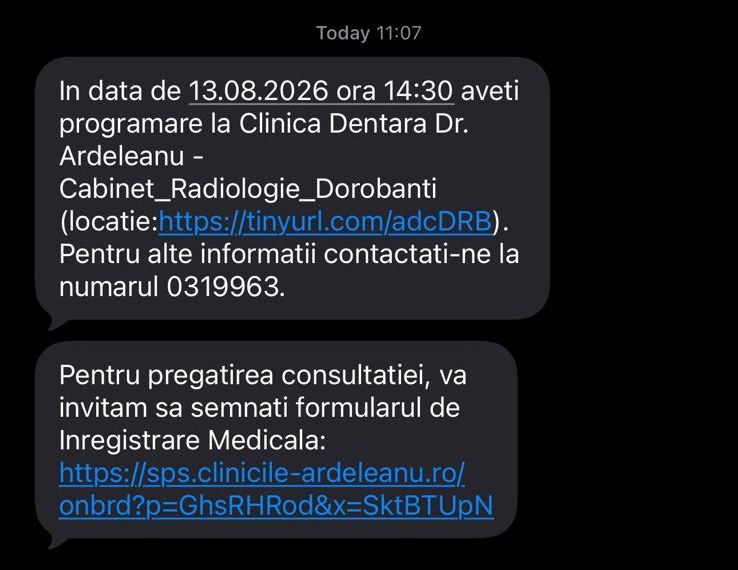
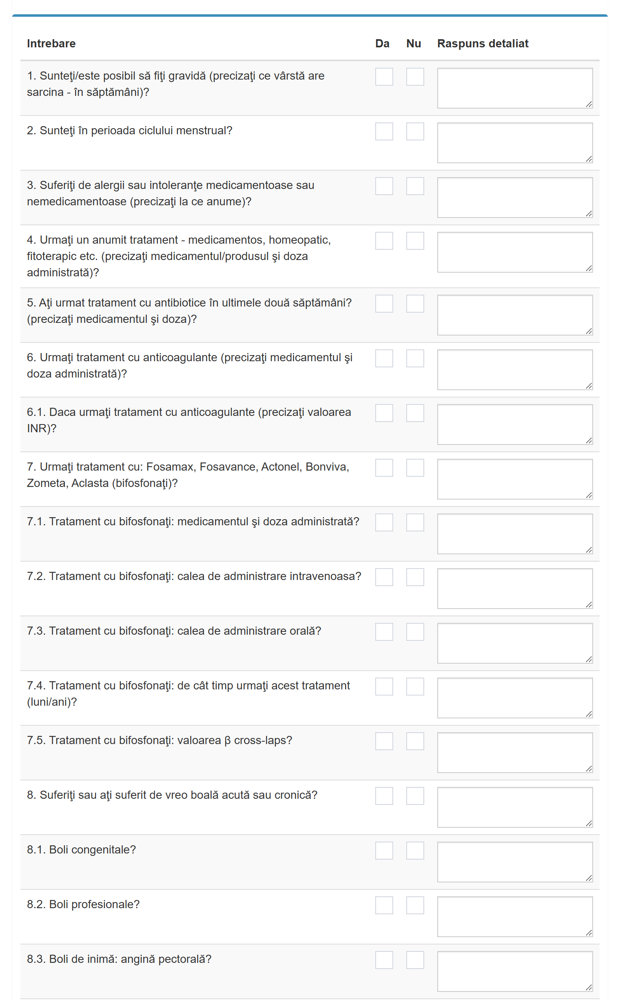
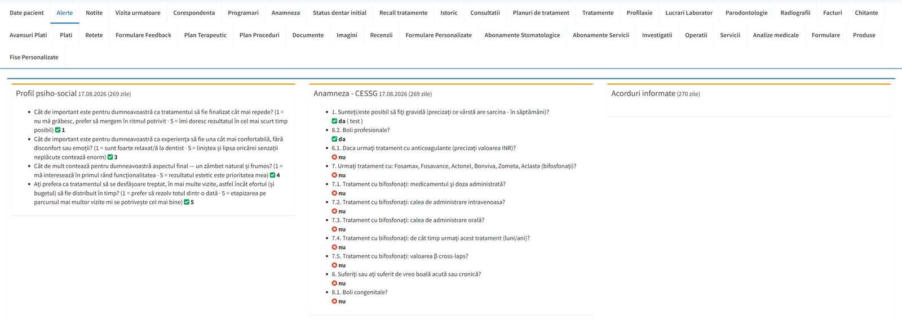
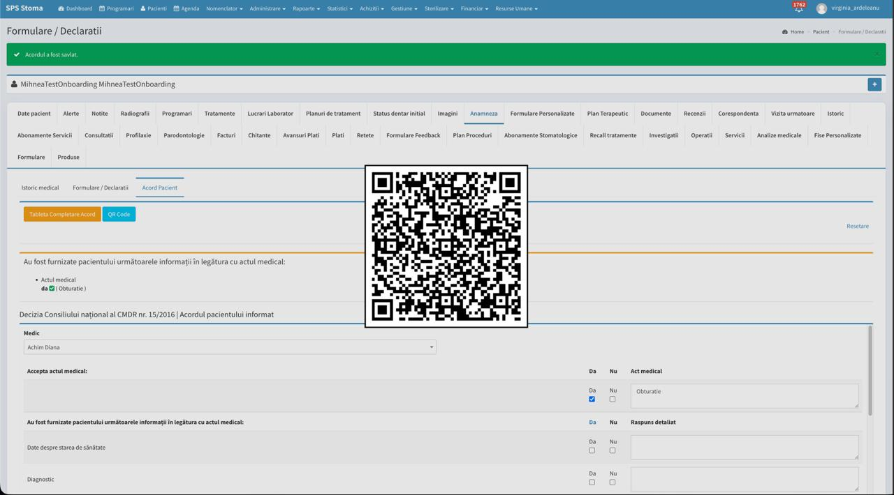

Despre acest manual cod: ASM-03
Asistența medicală oferită în cadrul Clinicilor Dr. Ardeleanu reprezintă un ansamblu de activități menite să asigure o îngrijire de excelență pacienților, într-un mediu sigur, organizat și empatic. Rolul asistentului medical este esențial: este puntea de legătură între pacient și medic, asigurând atât suport fizic, cât și emoțional, din momentul preluării și până la finalizarea tratamentului.
Acest manual codifică toate activitățile care decurg din acest rol — de la modul de comunicare cu pacientul în recepție, până la trasabilitatea instrumentarului sterilizat înregistrată digital în SPSS. Documentul se aplică tuturor asistenților medicali din cele opt clinici și este obligatoriu pentru desfășurarea activității zilnice.
Scopul și obiectivele manualului
Manualul Asistentului Medical stabilește standardele comune potrivit cărora se desfășoară activitatea asistenților medicali și a asistenților medicali șefi în rețeaua Dr. Ardeleanu.
Manualul urmărește ca fiecare pacient să beneficieze de îngrijire sigură, de un suport clinic corect și de un parcurs coerent în clinică. Activitatea asistentului medical contribuie direct la calitatea actului medical prin pregătirea cabinetului, asistarea medicului, respectarea protocoalelor, controlul infecțiilor, documentarea activităților și monitorizarea pacientului.
Manualul integrează activitatea clinică cu regulile privind sterilizarea și trasabilitatea, radiologia, gestiunea materialelor și deșeurilor, mentenanța echipamentelor, primul ajutor, securitatea și dezvoltarea profesională.
Obiective esențiale
- Siguranța pacientului și contribuția la calitatea actului medical — desfășurarea activității de asistență în condiții de siguranță, cu respectarea normelor profesionale, a regulilor de igienă și sterilizare și a protocoalelor medicale și operaționale descrise în prezentul manual.
- Suport clinic standardizat — pregătirea corectă a cabinetului, pacientului, instrumentarului și materialelor, asistarea medicului în funcție de specialitate și susținerea continuității parcursului medical al pacientului.
- Trasabilitate, colaborare și dezvoltare profesională — documentarea completă a activităților, utilizarea corectă a sistemelor autorizate, colaborarea cu medicii și cu celelalte funcții din clinică, gestionarea responsabilă a resurselor și actualizarea permanentă a pregătirii profesionale.
Statutul manualului și ierarhia documentelor interne
Manualul Activităților de Asistență Medicală — Ghidul Asistentului Medical (ADC-ASM-03) este un document controlat, inclus în Registrul online de manuale și proceduri Dr. Ardeleanu.
Manualul produce efecte ca document subsecvent Regulamentului Intern, în condițiile aprobării, înregistrării și comunicării sale individuale.
Ierarhia documentelor interne aplicabile asistenților medicali este:
Regulamentul Intern → Manualul Asistentului Medical → Procedurile, protocoalele și instrucțiunile subsecvente.
Manualul detaliază și transpune în activitatea curentă principiile, obligațiile și standardele generale stabilite prin Regulamentul Intern. Procedurile, protocoalele și instrucțiunile emise în aplicarea manualului trebuie să fie conforme atât cu Manualul Asistentului Medical, cât și cu Regulamentul Intern.
În cazul unei neconcordanțe între documentele interne, prevalează documentul superior în această ierarhie. În toate situațiile prevalează legea, normele profesionale obligatorii, siguranța pacientului și drepturile recunoscute salariatului prin contractul individual de muncă și legislația aplicabilă.
Manualul și documentele sale subsecvente nu pot modifica prin ele însele salariul, timpul de muncă, concediile, celelalte drepturi contractuale sau procedurile disciplinare stabilite prin lege și prin Regulamentul Intern.
«Acest manual este un document controlat, subordonat Regulamentului intern, și detaliază articolele RI indicate în fișa sa din Registrul online al documentelor interne. Se aplică exclusiv versiunea marcată „În vigoare” și comunicată destinatarului înaintea activității evaluate. În caz de neconcordanță prevalează legea, dreptul contractual aplicabil și Regulamentul intern. Etichetele [OBL], [CRIT], [OPR], [EVD], [KPI-P], [KPI-B] și [GHID], atunci când sunt utilizate, au semnificația prevăzută la Art. 5 din Regulamentul intern. Un KPI de bonus, un exemplu sau o recomandare nu constituie, prin ele însele, abatere disciplinară ori necorespundere profesională.»
Legătura cu Regulamentul Intern
Manualul Asistentului Medical transformă cerințele generale ale Regulamentului Intern în standarde concrete pentru activitatea de asistență medicală.
Regulamentul Intern stabilește cadrul general privind organizarea activității, drepturile și obligațiile salariaților, sănătatea și securitatea în muncă, evaluarea profesională, disciplina, comunicarea documentelor și administrarea Registrului online.
Manualul detaliază aceste principii în raport cu activitatea specifică a asistentului medical, fără să modifice sau să restrângă prevederile Regulamentului Intern.
Un indicator de performanță, un exemplu, o recomandare sau o instrucțiune cu caracter orientativ nu constituie, prin el însuși, abatere disciplinară ori necorespundere profesională și nu produce automat consecințe asupra raportului de muncă.
Luarea la cunoștință și accesul la manual
Manualul Asistentului Medical este comunicat individual prin ERP-ul Dr. Ardeleanu, aplicația digitală de lucru utilizată în activitatea curentă.
Pentru fiecare luare la cunoștință, salariatul semnează electronic un document individual distinct, întocmit potrivit modelului prevăzut în Anexa nr. 2 la Regulamentul Intern. Documentul semnat confirmă manualul și versiunea care au fost comunicate și se arhivează în dosarul electronic de personal al salariatului.
În ERP, Manualul Asistentului Medical poate fi:
- consultat online în format HTML/Wiki;
- descărcat și păstrat în format PDF.
Versiunea aplicabilă este identificată în Registrul online prin statutul „În vigoare". Versiunile noi sunt publicate în ERP și comunicate individual înainte de a produce efecte.
Formatul HTML/Wiki reprezintă forma de consultare online, iar documentul PDF aprobat și arhivat reprezintă forma oficială a manualului. În cazul unei neconcordanțe între cele două formate, prevalează documentul PDF aprobat.
De unde am pornit și ce construim
Clinicile Dr. Ardeleanu au început în 2017 ca un singur cabinet în Oltenița, deschis de Dr. Virginia Ardeleanu. De acolo au crescut într-o rețea națională de stomatologie și un reper în domeniu în România, construită în jurul unei idei simple: excelență medicală la prețuri accesibile, pentru toată familia.
Rețeaua s-a extins rapid, cu 8 clinici în București (Cotroceni și Dorobanți), Giurgiu, Oltenița, Călărași, Slobozia, Târgoviște și Focșani, dotate cu tehnologie de ultimă generație — tomografe computerizate și lasere dentare — pentru tratamente precise și eficiente, cât mai aproape de pacient. Extinderea continuă: în noiembrie 2026 se deschide a noua clinică a rețelei, la Brăila. Un element distinctiv este conceptul „Dental Safari", dedicat copiilor, care transformă vizita la dentist într-o experiență plăcută și educativă prin gamificare.
Această creștere a fost posibilă prin munca unei echipe în care asistentul medical are un rol central: este prezent la fiecare pas al parcursului pacientului și dă tonul experienței pe care pacientul o trăiește în clinică.
Misiune, valori și responsabilități
Misiune
Misiunea noastră este să extindem accesul la stomatologie de calitate la prețuri accesibile, prin dezvoltare la nivel național. Angajamentul față de accesibilitate și îngrijire de calitate nu se limitează la clinicile existente — se extinde la toți românii, indiferent unde locuiesc.
Valori
Valorile Dr. Ardeleanu s-au conturat în jurul unui angajament etic, menit să ofere servicii de stomatologie excelente la prețuri accesibile pentru întreaga familie. Dr. Ardeleanu este înțeles ca un doctor al comunității în care suntem prezenți.
Prima dintre aceste valori este accesibilitatea: eliminăm barierele din calea îngrijirii dentare de calitate prin planuri de tratament etapizate și costuri explicate din start, astfel încât niciun pacient să nu renunțe la sănătatea lui din teamă de necunoscut. A doua este excelența — aceleași protocoale și materiale standard în toată rețeaua, tehnologie de ultimă generație (tomografe computerizate, lasere dentare) și documentare completă a fiecărui act medical. A treia este empatia: îngrijirea este personalizată, iar pacientul pleacă din clinică auzit, înțeles și cu un pas următor clar. Iar pentru că niciuna dintre primele trei nu poate fi susținută fără oameni care evoluează, a patra valoare este creșterea continuă — pregătire constantă și supraspecializare, prin care fiecare membru al echipei se angajează să crească pentru a oferi pacienților cele mai bune servicii.
Responsabilitățile asistentului medical
Pentru asistentul medical, aceste valori nu rămân un afiș pe perete — ele se traduc în felul în care arată fiecare zi de lucru. Asistentul întâmpină și însoțește fiecare pacient cu profesionalism și empatie, de la preluarea din recepție până la finalul vizitei, și tratează cu aceeași grijă orice caz, indiferent de complexitatea lui. Respectă protocoalele standard ale rețelei — pregătirea cabinetului, asistarea la patru mâini, sterilizarea și trasabilitatea instrumentarului — și documentează complet în SPSS, pentru că un act medical nedocumentat este un act medical incomplet. Asigură siguranța pacientului și a echipei prin respectarea riguroasă a normelor de igienă și de control al infecțiilor. Și, nu în ultimul rând, se pregătește continuu, inclusiv prin modulele de Educație Continuă din ERP, contribuind la ridicarea standardului întregii echipe.
Structura organizațională a rețelei și fluxuri de escaladare
Rețeaua este condusă de doi fondatori, care dau cele două linii de autoritate ce se întâlnesc în fiecare clinică. Virginia Ardeleanu — Founder & Clinical Director — conduce linia medicală (Departamentul Medical) și Achizițiile (Procurement). Vlad Ardeleanu — General Director — conduce linia operațională: Vânzări & Operațiuni, Marketing, HR & Admin, Data & IT, Finance, Legal & Regulatory, precum și Business Development (partajat cu Virginia).
Ca asistent medical, locul tău este în clinică, sub Asistentul Șef. De aici pornesc cele două linii ale tale de raportare.
Dubla raportare a asistentului medical
Ai două linii de raportare distincte și trebuie să știi pe care mergi în fiecare situație. Administrativ (operațional), drumul urcă din clinică spre rețea: Asistent Medical → Asistent Șef → Manager de Clinică → Director Vânzări & Operațiuni (clusterul tău, C1 sau C2) → Vlad Ardeleanu. Pe această linie se rezolvă programul, agenda, consumabilele, ordinea în cabinet și incidentele administrative. Funcțional (medical), Asistentul Șef răspunde și pe linia Departamentului Medical (sub Virginia Ardeleanu) — de acolo vin standardele clinice, protocoalele de sterilizare și trasabilitate și indicațiile medicale pe care le aplici la scaun. În activitatea zilnică, ești coordonat direct de medicul alături de care lucrezi.
Departamentul Medical linia Virginia Ardeleanu
Departamentul Medical este sursa standardelor clinice pe care le aplici zilnic. Corpul medical al rețelei — Medicii Specialiști, pe cele șapte specialități stomatologice — sunt medicii cu care lucrezi la scaun. Alături de ei, echipa de Medical Services — Loredana Manoiu (Medical Services Manager) și Bianca Toma (Medical Services Specialist) — coordonează serviciile medicale, standardizează protocoalele și oferă suport medical transversal între clinici. Tot pe linia Virginia Ardeleanu funcționează Procurement (Roxana Matei), care asigură achiziția materialelor și consumabilelor pe care le folosești.
Departamentul Vânzări & Operațiuni linia Vlad Ardeleanu
Acesta este cadrul operațional al activității tale zilnice. Cele opt clinici sunt împărțite în două clustere, fiecare cu propriul Director de Vânzări & Operațiuni: Clusterul C1, condus de Roxana Ștefan, cuprinde Oltenița, Călărași, Slobozia și Giurgiu, iar din noiembrie 2026 și noua clinică din Brăila — a noua clinică a rețelei; Clusterul C2, condus de Alin Diaconu, cuprinde clinicile din București (Dorobanți și Cotroceni), Târgoviște și Focșani.
În fiecare clinică, Managerul de Clinică coordonează două zone: Asistentul Șef și Șeful de Recepție (cu registratorii medicali). În subordinea Asistentului Șef se află atât asistenții medicali — echipa ta —, cât și personalul de curățenie: pentru că Asistentul Șef răspunde de calitatea curățeniei din clinică (evaluarea lunară KPI 3, potrivit Capitolului XX — Procedura de curățenie), tot el coordonează direct și echipa care o execută. La nivel de rețea, tot pe linia operațională sunt și Customer Care & Call Center și Network Support, care susțin programările și fluxul pacientului.
Fluxuri de escaladare
Când apare o situație care depășește nivelul tău de decizie, escaladezi pe linia potrivită — iar linia potrivită depinde de natura problemei. Chestiunile operaționale (program, consumabile, incidente administrative) urcă pe traseul Asistent Medical → Asistent Șef → Manager de Clinică → Director Vânzări & Operațiuni. Situațiile medicale (probleme clinice, protocoale, reacții adverse) merg către medicul curant sau Asistentul Șef și, de acolo, către Departamentul Medical. În urgențele medicale din clinică se aplică imediat protocolul de prim ajutor (Capitolul XVIII), cu anunțarea medicului și a Managerului de Clinică. Echipamentele defecte se semnalează conform procedurii de mentenanță (Capitolul XIV).
Roluri transversale
În fluxul pacientului vei colabora frecvent cu două roluri-cheie ale rețelei. APT — Arhitectul Planului de Tratament — este un medic, de regulă medicul care coordonează cazul: el validează diagnosticul, integrează opiniile colegilor din alte specialități și construiește planul de tratament unitar pentru cazurile complexe, multidisciplinare. KPG — Key Patient Guide — este coordonatorul de pacienți, rol îndeplinit de Managerul de Clinică: ghidează pacientul pe tot parcursul, de la prezentarea planului de tratament și programări, până la menținerea legăturii pentru continuitate și retenție.
Capitolul IActivitățile asistenței medicale și fluxul pacientului ASM
Asistența medicală oferită în cadrul Clinicilor Dr. Ardeleanu reprezintă un ansamblu de activități menite să asigure o îngrijire de excelență pacienților, într-un mediu sigur, organizat și empatic. Rolul asistentului medical este esențial — este puntea de legătură între pacient și medic, asigurând atât suport fizic, cât și emoțional, din momentul preluării și până la finalizarea tratamentului.

1.Introducere. Rolul Asistentului Medical
Întregul parcurs al pacientului în Clinicile Dr. Ardeleanu începe încă din recepție, unde acesta este întâmpinat cu profesionalism și empatie, iar comunicarea se realizează constant la persoana a treia, menținând un ton respectuos și adecvat. Asistentul medical contribuie în mod activ la desfășurarea acestui prim contact, facilitând o comunicare clară și oferind informațiile necesare pentru ca pacientul să se simtă confortabil și în siguranță. După identificarea programării și verificarea documentației medicale, pacientul este condus către cabinetul stomatologic, unde i se explică succint procesul medical ce urmează.
Odată ajuns în cabinet, asistentul medical se asigură că pacientul este acomodat corespunzător, oferindu-i detalii despre procedurile care vor urma și răspunzând eventualelor întrebări. În același timp, asistentul pregătește riguros scaunul stomatologic, ajustându-l în funcție de necesitățile tratamentului și de preferințele medicului specialist. Instrumentarul este organizat conform standardelor stricte de igienă și siguranță, utilizând tehnici specifice de sterilizare pentru a elimina orice risc de contaminare. Se verifică respectarea protocoalelor de lucru în funcție de specializarea medicală implicată — stomatologie generală, endodonție, chirurgie, ortodonție sau pedodonție — și se pregătesc materialele și echipamentele necesare pentru fiecare intervenție.
Asistentul medical are responsabilitatea de a oferi suport activ medicului pe tot parcursul tratamentului, anticipând nevoile acestuia și răspunzând prompt la solicitările făcute. În timpul intervenției, se ocupă de aspirarea salivei, manevrarea instrumentelor, aplicarea materialelor specifice și monitorizarea confortului pacientului, având grijă să păstreze o atmosferă calmă și încurajatoare. În cazul tratamentelor complexe, asistentul documentează atent intervențiile și se asigură că orice eventuală reintervenție medicală este înregistrată conform procedurilor standardizate.
După finalizarea tratamentului, asistentul medical ajută pacientul să se ridice în siguranță de pe scaun (în cazurile mai dificile), oferindu-i indicațiile post-tratament recomandate de medic și răspunzând la orice întrebări suplimentare. Se asigură că pacientul părăsește cabinetul într-o stare de confort și siguranță, cu toate informațiile necesare pentru îngrijirea ulterioară. Ulterior, curăță și dezinfectează riguros spațiul de lucru, sterilizează instrumentele utilizate și restabilește ordinea în cabinet, pregătindu-l pentru următorul pacient.
Întregul proces se desfășoară cu respectarea strictă a procedurilor și protocoalelor interne, precum și a reglementărilor legale în vigoare privind siguranța și igiena în unitățile medicale. În plus, asistenții medicali sunt încurajați să participe activ la dezvoltarea lor profesională continuă, prin perfecționarea constantă a cunoștințelor și aplicarea celor mai bune practici în domeniu. Prin acest flux structurat și bine organizat, asistența medicală din clinicile noastre asigură un nivel ridicat de calitate și eficiență, contribuind la menținerea unei experiențe medicale optime pentru fiecare pacient.
În calitate de asistent medical în stomatologia generală, rolul Asistentului Medical este de a sprijini activitatea medicului stomatolog și de a asigura pacienților o experiență confortabilă și profesionistă. Protocoalele de asistență medicală detaliază responsabilitățile asistentului și modul corect de desfășurare a activităților zilnice, punând accent pe comunicarea eficientă cu pacientul, respectarea riguroasă a normelor de igienă și siguranță, precum și pe pregătirea corespunzătoare a cabinetului stomatologic. Toate aceste reguli și standarde sunt esențiale pentru menținerea unui mediu medical sigur și eficient.
Setul integral de protocoale & proceduri
2.Comunicarea cu pacientul. Relația asistent medical – pacient
Comunicarea este acțiunea prin care un expeditor transmite o serie de informații perceptibile unui destinatar. Reprezintă cea mai importantă metodă prin care stabilim o legătură cu aproapele nostru.
Domeniul medical are în centru starea de sănătate a pacientului. Relația cadrului medical față de pacient trebuie să aibă la bază înțelegere, confidențialitate, respect și empatie, deoarece pacientul se prezintă cu incertitudine în fața noastră și cu un stres destul de mare, fiind vorba despre starea de sănătate. Pacientul trebuie să fie acceptat indiferent de vârstă, gen, etnie sau situație financiară și văzut ca un întreg, cu toate funcțiile sale. Înțelegerea problemelor pacientului ajută la detensionarea acestuia.
Confidențialitatea joacă un rol important în menținerea unei bune relații cu pacientul. De aceea este interzis să deschidem dialoguri în sala de așteptare, de față cu alte persoane, despre patologiile sale. Respectul și empatia aduse pacientului îl fac pe acesta să se simtă prețuit și îl ajută să observe că înțelegem îngrijorările pe care le are.
Comunicarea are două fețe — verbală și non-verbală — iar asistenta trebuie să le stăpânească pe amândouă: să emită semnale corecte și, în același timp, să citească atent semnalele pe care le transmite pacientul.
Comunicarea verbală
În Clinicile Dr. Ardeleanu, pacientului i te adresezi întotdeauna la persoana a treia — „Domnul/Doamna [Nume]" — cu formule care includ „dumneavoastră", „vă rog" și „mulțumesc". Tonul este calm și ritmul măsurat: fiecare pas se explică succint înainte de a fi făcut, iar jargonul medical se evită, pentru ca pacientul să înțeleagă ce i se întâmplă. După indicațiile medicului, asistenta verifică prin reformulare și parafrazare că pacientul a înțeles corect ce are de făcut. Iar cât timp pacientul este de față, el este centrul atenției: nu se poartă conversații paralele cu colegii pe alte teme.
Comunicarea non-verbală
La fel de mult contează ceea ce transmiți fără cuvinte. Contactul vizual denotă încredere, atenție, sinceritate și dorință de a comunica, iar expresia feței este un bun indicator al stării emoționale — atât a ta, cât și a pacientului. Atitudinea influențează direct și puternic prima impresie, iar postura vorbește de la sine: o postură închisă, cu membrele încrucișate, ridică o barieră în comunicare, în timp ce o postură deschisă o facilitează.
3.Reguli generale pentru buna desfășurare a activității
Actul medical în Clinicile Dr. Ardeleanu se desfășoară întotdeauna cu maximă diligență și profesionalism, având ca prioritate siguranța și confortul pacientului. Regulile de mai jos sunt sistematizate în șapte categorii, pentru ușurința aplicării zilnice — de la pregătirea cabinetului și echipamentul de protecție, până la conduita profesională și normele de igienă.
3.1 Igiena și pregătirea cabinetului

Cabinetul se pregătește și se igienizează după fiecare pacient, respectând protocoalele de dezinfecție. Dezinfectantul se aplică întotdeauna indirect: se pulverizează pe un șervețel de unică folosință, cu care se șterg apoi suprafețele, unitul dentar și materialele. După fiecare manoperă, toate materialele și instrumentele utilizate se dezinfectează și se așază la locul lor, iar instrumentele folosite se depozitează în cuvele de presterilizare (vezi Capitolul XI). Mănușile se schimbă obligatoriu în situații de forță majoră — un instrument căzut, mănuși deteriorate, ieșirea din cabinet. Iar dacă medicul solicită un material care nu este disponibil, asistentul comunică discret lipsa și propune o alternativă adecvată, fără a crea disconfort în fața pacientului.
3.2 Echipamentul de protecție personală
În timpul fiecărei manopere, mănușile, ochelarii de protecție și masca sunt obligatorii. Masca se poartă corect, acoperind atât gura, cât și nasul, iar mănușile se schimbă ori de câte ori situația o impune. Ieșirea din cabinet cu mănușile de unică folosință pe mâini nu este permisă.
3.3 Ținuta și igiena personală
Uniforma trebuie să fie mereu curată și călcată, iar papucii curați și purtați cu șosete. Fetele poartă părul prins, pentru un aspect ordonat și igienic. Unghiile lungi și bijuteriile (brățări, inele) sunt interzise — cu excepția verighetei; unghiile se păstrează scurte, curate și îngrijite, într-un aspect natural, fără lac în culori stridente și fără modele decorative. La fel de importantă este igiena personală de ansamblu: se evită mirosurile neplăcute (naturale sau de țigări) și se menține un aspect îngrijit — unghii, păr și dantură curate.
3.4 Comportamentul profesional
Asistentul medical respectă întotdeauna medicul și i se adresează cu „dumneavoastră". În prezența pacienților nu se exprimă neîntrebat și nu oferă opinii despre actul medical; discursul este politicos, iar limbajul neadecvat este interzis. Conversațiile cu colegii pe hol, de față cu pacienții, nu își au locul. Salutul pacienților, în schimb, este obligatoriu — de fiecare dată.
3.5 Interacțiunea cu pacienții
Pacienții sunt invitați în cabinet folosind formule respectuoase: „Domnul/Doamna [Nume], vă rog să poftiți în cabinet." sau „Domnul/Doamna [Nume], sunteți invitat(ă) în cabinet."
3.6 Reguli în interiorul cabinetului
3.7 Norme de igienă și siguranță
Mâinile se spală și se dezinfectează înainte și după fiecare pacient. Asistentul medical asigură o igienă riguroasă a întregului spațiu de lucru și a echipamentelor utilizate (detalii la Capitolul XIX) și este răspunzător pentru urmărirea procesului de sterilizare (detalii la Capitolul XI).
Aceste reguli sunt esențiale pentru menținerea unui mediu sigur, curat și profesionist în cadrul cabinetului stomatologic, contribuind astfel la îmbunătățirea experienței pacienților și la susținerea actului medical de calitate.
4.Reguli generale de pregătire a cabinetului stomatologic
Pregătirea cabinetului urmează firul natural al unei zile de lucru: deschiderea și pornirea echipamentelor, configurarea pentru primul pacient, gesturile care se repetă la fiecare manoperă și, la final, închiderea ordonată. Fiecare pas are un rol precis în prevenirea contaminării și în asigurarea trasabilității actului medical.
Ziua începe cu echipamentele. La începutul programului se pornesc compresoarele și se verifică funcționarea lor, respectând ora de pornire și aerisirea corespunzătoare, pentru o funcționare optimă și o calitate ridicată a aerului comprimat (detalii la Cap. XIII). În fiecare dimineață se distribuie în cabinete cuvele de presterilizare, pentru acces rapid și o organizare eficientă a instrumentarului; fiecare cuvă poartă obligatoriu o etichetă cu data, ora, tipul și concentrația soluției utilizate, timpul de acțiune și numele persoanei responsabile (detalii la Cap. XI). Urmează unitul dentar: se deschide scaunul și se montează piesele necesare — turbina, contraunghiul și piesa dreaptă — care se rulează cu freze montate, atât pentru a verifica funcționalitatea și a evita defecțiunile în timpul utilizării, cât și pentru a evacua excesul de ulei (detalii la Cap. XIII).
Continuă cu igiena spațiului. Toate suprafețele din cabinet se curăță cu dezinfectant și șervețele speciale. Ochelarii și scutul de protecție se spală cu apă și săpun, apoi se dezinfectează cu soluții speciale aplicate pe șervețele curate. Chiuveta se igienizează cu soluții adecvate, cu atenție la toate zonele de contact.
Apoi se pregătește totul pentru pacient. Se organizează tăvița medicului cu instrumentele necesare — mănuși, mască, oglindă și trusa de consultație (pensă, sondă, spatulă) — astfel încât medicul să aibă totul la îndemână. Pentru pacient se pregătesc aspiratorul, paharul de unică folosință, baveta și ochelarii. Radiografia pacientului se deschide pe laptop, pentru acces rapid la informațiile necesare diagnosticului (detalii la Cap. XV), iar camera intraorală se pornește și i se verifică funcționarea.
Pe parcursul zilei, trasabilitatea este regulă. Materialele din cabinet se verifică amănunțit, iar pe fiecare material deschis se aplică o etichetă cu data și ora deschiderii și numele asistentei care a deschis produsul — pentru trasabilitate și controlul infecțiilor. La finalul fiecărei manopere, asistenta scanează eticheta cod-bare de pe fiecare pachet al ustensilelor de lucru; scanarea se adaugă automat în SPSS, la profilul pacientului, cu informațiile de trasabilitate ale instrumentarului sterilizat utilizat. Cutia pentru deșeurile medicale infecțioase se completează și se gestionează conform normelor de siguranță (detalii la Cap. XII).
Închiderea cabinetului la sfârșitul programului
La finalul programului, cabinetul se închide la fel de ordonat cum a fost deschis: se opresc echipamentele (laptop, unit dentar, aer condiționat), se închid geamurile și se ordonează spațiul. Unitul dentar se întreține prin curățarea sitelor și filtrelor de reziduurile acumulate peste zi, iar instalația de aspirare — prin aspirarea soluției de dezinfectare și întreținere specifică, conform recomandărilor producătorului, pentru prevenirea depunerilor. Compresoarele se opresc și li se curăță sitele și filtrele; rezervorul de condens se verifică și, după caz, se golește, iar echipamentul se inspectează vizual pentru eventuale disfuncționalități. Înainte de plecare, asistentul se asigură că toate compresoarele, autoclavul și presa pentru folii sunt închise corespunzător — un gest simplu care protejează echipamentele și le prelungește durata de viață.
5.Fluxul pacientului în clinică
Asistentul medical joacă un rol esențial în asigurarea unui parcurs fluent și confortabil al pacientului în cadrul clinicii stomatologice, contribuind activ la fiecare etapă a procesului medical, de la preluare până la pregătirea cabinetului pentru următorul pacient.
Totul începe cu preluarea pacientului: la sosirea în clinică, pacientul nou este întâmpinat de personalul de la recepție și ghidat să completeze fișa medicală digitală, în cadrul procesului de onboarding digital. După finalizarea acestei etape, asistentul medical îl preia din zona recepției, oferindu-i informații utile și creând un mediu prietenos și profesionist.
Urmează, în funcție de recomandările medicului și de nevoile cazului, documentarea inițială. Asistentul medical efectuează radiografia dentară OPG / RX, în condiții de siguranță și confort maxim pentru pacient (detalii la Cap. XV). Tot el realizează scanarea intraorală și scanarea facială, cu echipamente digitale moderne care oferă o imagine completă și precisă a structurilor dentare și a trăsăturilor faciale — fundamentul unei planificări corecte și personalizate a tratamentului (detalii la Cap. XVI). Documentația se completează cu fotografiile clinice inițiale — faciale (extraorale) și intraorale — realizate cu telefonul mobil, cu respectarea criteriilor de claritate, încadrare și iluminare, în scopul digitalizării cazului, al evaluării estetice și funcționale și al monitorizării evoluției tratamentului; totul în condiții de confort, cu explicarea etapelor și cu respectarea normelor de confidențialitate și protecție a datelor (detalii la Cap. XVII).
În cabinet, asistentul medical însoțește pacientul, îi explică succint pașii următori și, pe durata consultației și a tratamentului, sprijină activ medicul stomatolog: pregătește materialele necesare, asistă la manoperele medicale și menține comunicarea eficientă cu pacientul. După încheierea consultației, se ocupă de igienizarea și pregătirea cabinetului pentru următorul pacient — dezinfectarea suprafețelor, a materialelor folosite și a aparaturii medicale, sterilizarea instrumentarului și organizarea materialelor, conform celor mai înalte standarde de igienă și siguranță.
Prin implicarea sa directă în fiecare etapă a fluxului pacientului, asistentul medical contribuie semnificativ la eficiența operațională a clinicii și la îmbunătățirea experienței generale a pacientului. Detaliile fluxului medico-legal — P0 Programare, P1 Recepție/Cabinet, P2 Tratament — sunt prezentate în Capitolul II.
Capitolul II — Actualizat integral la V18 · septembrie 2026Onboarding pacient. Fluxul medico-legal în clinică (P0–P2)
- 1.P0 — Programarea inițială
- 2.P1A — Sosirea și primirea la recepție
- 3.P1B — Consultația și construirea planului
- 4.API — Acordul Pacientului Informat
- 5.P2 — Tratament și vizitele ulterioare
- 6.Rolul asistentei în continuitatea fluxului
- 7.Consimțămintele specifice și arhivarea
- 8.RX și CBCT — comunicare și trasabilitate
- 9.Gestionarea activă a răspunsurilor „Nu”
- 10.Escaladarea și închiderea fluxului
- 11.Checklist rapid și concluzie
Un pacient nu trebuie să simtă că trece de la un birou la altul. El trebuie să simtă că aceeași echipă îl însoțește de la primul telefon până la finalul tratamentului. Onboardingul începe înainte ca pacientul să intre în clinică: prima conversație, calitatea datelor introduse în SPS, mesajele de confirmare și posibilitatea de a completa documentele de acasă pregătesc consultația. Când această etapă este făcută corect, recepția nu mai lucrează sub presiune, asistenta primește un pacient pregătit, iar medicul poate dedica timpul consultației deciziei clinice și dialogului.
Procedura urmărește patru momente ale aceleiași călătorii: P0, programarea inițială; P1A, primirea la recepție; P1B, consultația și pregătirea tratamentului în cabinet; P2, tratamentele și vizitele ulterioare. Între aceste momente există predări de responsabilitate. O predare este corectă numai când următorul coleg primește atât pacientul, cât și informația necesară pentru a continua în siguranță.
Planul de tratament se construiește, ca principiu, la P1, dar finalizarea lui poate avea loc și la P2. La o parte semnificativă dintre pacienți există justificări reale pentru care planul nu poate fi încheiat la P1 — investigații suplimentare, analize, timp de reflecție sau etapizarea deciziei. De aceea, obiectivul clinicii nu se măsoară doar la P1: privite împreună, P1 și P2 trebuie să conducă la un plan de tratament complet pentru toți pacienții care parcurg aceste două programări. P1 rămâne momentul preferat pentru plan, iar P2 este plasa de siguranță care îl închide atunci când există o justificare pentru amânare.
Recepția și asistenta au un rol activ, dar diferit de rolul medicului. Ele verifică documentele, observă neconcordanțele, explică pașii administrativi și transmit alertele. Nu interpretează clinic și nu decid tratamentul. Medicul analizează informația, stabilește indicația, explică actul și decide ce poate fi realizat dacă pacientul refuză o investigație ori un tip de prelucrare necesar tratamentului.

1.P0 — Programarea inițială
P0 transformă un contact într-o programare clară și într-un pacient pregătit să intre în relația medicală.

1.1 De la lead la conversația cu recepția
Primul contact poate veni prin formularul de pe site, din social media sau printr-un apel direct. Indiferent de canal, recepția trebuie să preia conversația într-o manieră umană. Nu este suficient să întrebe ce zi dorește pacientul: trebuie să înțeleagă motivul prezentării, urgența percepută de pacient, serviciul căutat și eventualele întrebări care îl împiedică să ia o decizie.
Detaliile lead-urilor — numele, prenumele și datele de contact — se află deja în fișierul de lucru Excel la care registratorii au acces în fiecare dimineață. Fișierul este gestionat la nivelul infrastructurii Dr. Ardeleanu, pe linia mai multor departamente — call center, marketing și celelalte canale prin care intră lead-urile — astfel încât recepția pornește conversația cu datele de bază deja pregătite. În paralel, lead-urile intră și direct, inbound telefonic, iar registratorul preia aceste apeluri cu aceeași atenție ca pe orice lead din fișier.
În această etapă recepția oferă informații despre serviciile clinicii și despre disponibilitate, fără să promită un diagnostic sau un anumit rezultat. Dacă nevoia descrisă depășește ceea ce poate clarifica recepția, întrebarea se transmite unui medic sau Clinic Managerului, iar pacientul primește un răspuns ulterior. Scopul nu este închiderea rapidă a apelului, ci programarea corectă de la prima încercare.
1.2 Datele de bază și alocarea medicului
După clarificarea nevoii, în SPS se introduc numele, prenumele, telefonul, adresa de e-mail, orașul și profesia. Datele trebuie repetate sau confirmate, mai ales numărul de telefon și adresa de e-mail, deoarece acestea vor fi folosite pentru mesajele automate, documente și comunicări ulterioare. O literă greșită sau o cifră inversată poate rupe întregul flux digital.
Recepția alocă medicul potrivit și stabilește data și ora în calendarul clinicii. Confirmarea verbală trebuie să fie explicită: pacientului i se repetă ziua, ora, clinica și recomandarea de a sosi cu câteva minute înainte. O programare este considerată completă numai când informațiile din SPS și cele comunicate pacientului coincid.
Tot la P0 telefonic, registratorul îl informează pe pacient că trebuie să vină în clinică cu actul de identitate — cartea de identitate — și să se identifice la sosire. Formularea recomandată este simplă: „Nu uitați să vă aduceți actul de identitate cu dumneavoastră la clinică, pentru înregistrarea medicală.”
1.3 Mesajele automate și Înregistrarea Medicală

După confirmarea verbală, pacientul primește SMS-ul cu data și ora programării, denumirea clinicii, linkul către locație și numărul de contact. Acest mesaj este urmat de un al doilea SMS, trimis în pereche, prin care pacientul este invitat să completeze formularul de Înregistrare Medicală. Linkul este dinamic și îl conduce direct către documentul aferent pacientului.
Pentru instruire și exerciții interne, formularul poate fi parcurs pe pacientul de test al clinicii — un dosar de test, fără probleme de GDPR — folosind linkul dinamic de mai jos, care rămâne activ și poate fi accesat direct: sps.clinicile-ardeleanu.ro/onbrd (pacient de test). Exercițiul se face exclusiv pe pacientul de test, niciodată pe un dosar real.



Varianta preferată este completarea de acasă, pe telefonul sau tableta pacientului. Aceasta îi oferă timp să citească întrebările, să verifice informațiile medicale și să ia decizii fără presiunea recepției. Dacă nu poate sau nu dorește să completeze acasă, formularul rămâne disponibil în clinică, pe dispozitivul pus la dispoziție. Recepția poate explica sensul unei întrebări și poate oferi ajutor tehnic, dar nu completează răspunsurile și nu semnează în locul pacientului.
Cu 24 de ore înainte de programare, SPS trimite reminderul, exclusiv în format SMS — un mesaj de telefonie mobilă, nu e-mail și nu o aplicație de mesagerie. Dacă pacientul spune că nu a primit mesajele, recepția verifică în primul rând numărul de telefon și apoi reia trimiterea, tot exclusiv prin SMS, prin fluxul disponibil în SPS. În această situație trebuie verificat și dacă linkul de Înregistrare Medicală aparține pacientului corect.
1.4 Anulările și neprezentările
O programare pierdută nu se abandonează. Când pacientul anunță că nu mai poate ajunge, recepția încearcă reprogramarea pe loc, propunând imediat variante alternative. Pacientul care nu s-a prezentat și nu a anunțat este contactat în dimineața zilei următoare, iar motivul și rezultatul apelului se înregistrează în SPS. Detaliile complete — scripturile de conversație, apelurile preventive pentru procedurile complexe, evidența și indicatorii — sunt stabilite în Procedura de prevenire și recuperare a anulărilor și neprezentărilor, descrisă în Manualul Registratorului Medical — „Reducerea Ratei Anulărilor/Neprezentărilor [KPI 2]”, care se aplică integral alături de prezentul capitol.
Registratorul realizează, în plus, prevenția neprezentărilor pentru lucrările importante. Pentru manoperele majore de implantologie, endodonție și protetică — în special atunci când medicul care efectuează tratamentul nu este din zonă sau se deplasează din București — pacienții sunt sunați în prealabil pentru confirmarea verbală a prezenței în clinică. Acest apel de confirmare se face în plus față de fluxul standard de remindere și de gestionarea anulărilor.
2.P1A — Sosirea și primirea la recepție
Recepția nu predă cabinetului doar un nume din calendar, ci un pacient identificat și un dosar pregătit pentru consultație.
2.1 Întâmpinarea și verificarea programării
La sosire, pacientul este întâmpinat și identificat în programarea din SPS. Se verifică numele, medicul, serviciul, data și ora. Dacă există pacienți cu nume similare sau informații contradictorii, pregătirea se oprește până când identitatea programării este clarificată. Această verificare simplă previne asocierea documentelor sau a tratamentului cu dosarul greșit.
2.2 Identitatea și fotografia cărții de identitate
În fluxul standard, identitatea se confruntă cu actul prezentat, iar imaginea cărții de identitate se păstrează prin primul buton al formularului de Înregistrare Medicală, denumit „Fotografie carte de identitate”. Fotografia nu înlocuiește verificarea vizuală; ea documentează datele pe baza cărora a fost creat dosarul pacientului.
Identificarea pacientului nu este o formalitate administrativă, ci o obligație cu temei legal. Medicul își asumă actul medical și trebuie să știe cu certitudine cui acordă tratamentul, pe numele cui întocmește documentele medicale și cine își exprimă consimțământul; verificarea previne atribuirea greșită a informațiilor medicale și îl protejează în primul rând pe pacient. Bază legală: Codul deontologic al medicului stomatolog — art. 17, 34, 48, 50 și 54; Legea nr. 46/2003 privind drepturile pacientului; GDPR, art. 5 alin. (1) lit. d) și f) — exactitatea datelor și integritatea și confidențialitatea prelucrării.
Dacă pacientul nu are documentul fizic asupra lui, este rugat să arate o fotografie clară a cărții de identitate pe telefon. În majoritatea cazurilor, aceasta permite verificarea datelor și continuarea fluxului. Dacă pacientul acceptă, fotografia necesară dosarului este preluată prin formular. Dacă refuză numai păstrarea copiei, clinica face un pas în spate: recepția verifică vizual identitatea, nu păstrează imaginea și notează refuzul. Pacientul poate continua dacă identitatea a putut fi stabilită.
Refuzul legitimării este o situație diferită. Atunci când pacientul refuză să permită orice verificare a identității, tratamentul electiv nu începe. Regula de lucru stabilită de departamentul juridic separă clar cele două situații: refuzul păstrării copiei actului poate fi acceptat, la cererea expresă a pacientului; refuzul verificării vizuale a originalului sau al completării datelor obligatorii P0/P1 blochează onboardingul. Recepția nu spune „trebuie să ne lăsați copia”, ci „putem renunța la copie, dar trebuie să verificăm actul și să completăm datele necesare”. Recepția nu decide dacă există o urgență și nu formulează singură un refuz medical: cazul se transmite Clinic Managerului și medicului înainte de orice continuare, conform procedurii dedicate „Identificarea pacientului care refuză legitimarea”.
2.3 Înregistrarea Medicală și tab-ul Alerte
Recepția verifică dacă formularul este complet, semnat și salvat. În versiunea în curs de dezvoltare a SPS, formularul nu va putea fi trimis cu câmpuri necompletate: sistemul va impune un răspuns la fiecare întrebare, astfel încât fiecare dintre cele șase opțiuni va avea întotdeauna un răspuns explicit „Da” sau „Nu”. Până la activarea acestei validări, recepția verifică manual că nicio opțiune nu a rămas fără răspuns. Dacă este incomplet, pacientul îl finalizează în clinică. După trimiterea formularului, SPS preia automat răspunsurile și actualizează tab-ul Alerte. Registratorul nu generează manual alertele și nu recopiază informațiile din formular.
Tab-ul Alerte reunește trei categorii, în ordinea în care apar în tab. Prima secțiune este profilul psiho-social, care descrie preferințele și limitele pacientului. A doua secțiune este anamneza — informația clinică din Anamneza-CESGS (Chestionarul de Evaluare a Stării Generale de Sănătate, denumirea cerută de Colegiul Medicilor). A treia secțiune este consimțământul privind prelucrarea datelor exprimat de pacient — în tab apar în special răspunsurile „Nu” la cele șase opțiuni din formular privind utilizarea datelor: prelucrarea datelor personale medicale; imaginile clinice și scanările intraorale digitale 2D/3D; scanările faciale 3D și modelele digitale ale feței; înregistrările video fără sunet în cabinet; prelucrarea datelor în scop de marketing; procedurile radiologice RX/CBCT. Recepția citește informația deja preluată de sistem și o transmite asistentei; nu stabilește dacă o boală este relevantă și nu negociază tratamentul.

2.4 Valabilitatea informațiilor: maximum nouă luni
Clinica stabilește un termen intern maxim de valabilitate de nouă luni pentru informațiile colectate prin formularul de Înregistrare Medicală. Termenul curge de la data completării și semnării celui mai recent formular. La împlinirea celor nouă luni, datele nu mai sunt considerate suficient de actuale pentru a fundamenta o nouă decizie clinică, chiar dacă pacientul declară verbal că „nu s-a schimbat nimic”. Formularul trebuie reluat integral și semnat din nou înainte de continuarea fluxului medical.

Regula celor nouă luni se aplică informațiilor din Anamneza-CESGS, profilului psiho-social și celor șase opțiuni privind prelevarea și utilizarea datelor pacientului. La recolectare, pacientul își exprimă din nou opțiunile; o alegere veche nu este presupusă automat ca fiind încă actuală. Formularul se reia mai devreme de nouă luni ori de câte ori pacientul anunță sau echipa identifică o schimbare relevantă: diagnostic nou, internare, intervenție, alergie, reacție la anestezie, tratament medicamentos nou, anticoagulante, sarcină sau suspiciune de sarcină, modificarea stării generale, schimbarea semnificativă a disponibilității, bugetului, etapizării, toleranței la durere ori a obiectivului estetic. Medicul poate solicita în orice moment o recolectare anticipată.
Expirarea termenului operațional nu înseamnă ștergerea documentelor vechi. Formularele și consimțămintele anterioare rămân în dosarul medical ca istoric și dovadă a informației disponibile la momentul respectiv. API-ul și consimțămintele aferente unor tratamente specifice se verifică separat, în raport cu actul, medicul și planul de tratament.

3.P1B — Consultația și construirea planului
Consultația începe cu înțelegerea pacientului, nu direct cu propunerea unei manopere.
3.1 Informația clinică și profilul psiho-social
Medicul citește informația din Anamneza-CESGS și o corelează cu examinarea clinică. Important este ca datele să fie actuale, iar orice răspuns care poate schimba conduita să fie discutat înaintea actului medical.
În paralel, SPS extrage automat din formularul de Înregistrare Medicală elementele profilului psiho-social și le afișează în tab-ul Alerte. Aceste informații arată cât timp poate aloca pacientul, ce limitări bugetare are, dacă preferă etapizarea, cum percepe durerea, ce experiențe negative a avut și cât de important este rezultatul estetic. Folosite corect, îl ajută pe medic să formuleze un plan realist, să aleagă ritmul potrivit și să explice tratamentul într-o manieră pe care pacientul o poate accepta și urma.
Un pacient cu anxietate mare poate avea nevoie de o consultație mai lentă și de explicații suplimentare. Un pacient cu timp limitat poate prefera ședințe mai lungi și mai puține. Un buget restrâns poate impune etapizarea, fără ca standardul medical să fie compromis. O așteptare estetică foarte precisă trebuie discutată înainte de începerea tratamentului, nu descoperită la final.
3.2 Verificarea asistentei
Înainte ca medicul să înceapă actul, asistenta face propria verificare de siguranță. Ea urmărește în special alergiile, reacțiile adverse la anestezie, bolile cardiace, tratamentul anticoagulant, sarcina, bolile cronice relevante și orice risc medical crescut. La fel de important, observă anxietatea, experiențele negative, toleranța la durere și așteptările care pot influența experiența pacientului.
Verificarea asistentei include și componenta fizică: înainte de primirea pacientului, asistenta verifică și pregătește cabinetul pentru programarea respectivă — igienizarea și dezinfecția suprafețelor, instrumentarul și materialele necesare manoperelor planificate, funcționarea echipamentelor. Pașii compleți sunt stabiliți în secțiunea „Igiena și pregătirea cabinetului” (Capitolul I), care se aplică integral; pacientul nu este introdus în cabinet înainte ca pregătirea să fie încheiată.
Asistenta nu interpretează aceste date și nu decide dacă un tratament este permis. Ea îi spune medicului clar, complet și rapid ce a observat. Atunci când informația schimbă conduita sau trebuie urmărită ulterior, aceasta se documentează în SPS. Dacă o alertă nu a fost clarificată, pregătirea se oprește până când medicul o evaluează.
3.3 Consultația și indicația
Medicul discută motivul prezentării, examinează pacientul și stabilește indicația. Planul trebuie explicat într-un limbaj pe care pacientul îl poate înțelege, incluzând scopul, etapele, limitele, riscurile relevante și alternativele aplicabile. Profilul psiho-social îl ajută pe medic să transforme un plan corect medical într-un plan posibil pentru pacient.
Consimțământul informat nu este obținut prin grăbire sau prin repetarea mecanică a unei formule. Pacientul trebuie să aibă posibilitatea de a pune întrebări și, dacă este nevoie, de a cere timp. Semnătura confirmă o conversație și o decizie, nu o înlocuiește.

4.API — Acordul Pacientului Informat
API-ul leagă explicația medicului de actul concret care urmează să fie efectuat. Este un document transversal: se întocmește la P1B și se semnează din nou la fiecare vizită P2.
După stabilirea indicației, medicul completează în API numele medicului care efectuează tratamentul și denumirea exactă a manoperei. O descriere generică nu este suficientă dacă pacientului urmează să i se efectueze un act precis. Documentul trebuie să corespundă conversației din cabinet și tratamentului planificat pentru acel moment.
Pacientul primește documentul prin codul QR și îl semnează, de regulă, pe propriul telefon. Dacă apar dificultăți tehnice sau pacientul nu poate utiliza telefonul, documentul este deschis pe tableta clinicii. Indiferent de dispozitiv, asistenta verifică dacă semnătura a fost înregistrată și dacă PDF-ul se află în SPS.


Regula generală este simplă: la fiecare vizită, medicul și pacientul semnează un API. În mod normal, medicul trece în API toate tratamentele și manoperele pe care urmează să le efectueze pacientului în vizita respectivă, astfel încât, din momentul în care pacientul se așază pe scaunul stomatologic și până se ridică, toate manoperele realizate să fie acoperite de acordul semnat înainte de începerea actului. Există însă situații în care nu toate manoperele pot fi cuprinse într-un singur document; atunci se semnează mai multe API-uri în aceeași vizită. Procesul este facil atât pentru medic, cât și pentru pacient: semnarea se face digital, pe telefonul pacientului, în câteva momente.
Dacă planul se schimbă în timpul consultației sau al tratamentului, medicul explică schimbarea și generează documentul corespunzător înainte de continuare. Pacientul nu părăsește cabinetul după un tratament modificat fără ca API-ul corect să fie semnat și salvat. Responsabilitatea actualizării acordului revine în primul rând medicului și, în subsidiar, asistentului medical.
5.P2 — Tratament și vizitele ulterioare
Un dosar complet la prima vizită nu elimină nevoia de verificare la vizitele următoare.
La fiecare prezentare, asistenta confirmă că are pacientul corect, că programarea corespunde actului planificat și că formularul de Înregistrare Medicală se află în termenul maxim de nouă luni. Chiar dacă formularul este încă valabil, asistenta întreabă dacă au apărut modificări medicale de la ultima vizită. Pacientul poate începe un tratament nou, poate primi un diagnostic între vizite, poate începe un anticoagulant sau poate anunța o sarcină; într-o asemenea situație, formularul se actualizează mai devreme și informația ajunge la medic înainte de act.
După confirmarea actualității Înregistrării Medicale, asistenta verifică semnarea API-ului pentru vizita curentă: la fiecare vizită, medicul și pacientul semnează un API care acoperă manoperele zilei, iar dacă nu toate manoperele au putut fi trecute într-un singur document, se semnează API-uri suplimentare în aceeași vizită. Asistenta verifică totodată dacă este necesar un consimțământ specific. Verificarea devine cu atât mai importantă la schimbarea medicului, schimbarea specialității, începerea unei etape noi sau înaintea unei proceduri cu document dedicat. Dacă există îndoială, medicul decide documentul necesar înainte de tratament.
După act, asistenta confirmă că documentele sunt salvate, predă recepției eventualele originale pe hârtie și transmite pacientului instrucțiunile stabilite de medic. Înainte de plecare trebuie să fie clar ce s-a realizat, ce urmează și dacă există documente sau investigații care trebuie trimise.

6.Rolul asistentei în continuitatea fluxului
Asistenta este legătura dintre informația administrativă, decizia medicului și experiența concretă a pacientului.
Înainte de act, asistenta verifică documentele, citește alertele, confirmă existența API-ului și a consimțământului specific și îi transmite medicului riscurile relevante. Această verificare trebuie să fie activă: nu este suficient ca un document să existe dacă este incomplet, aparține altei etape sau nu acoperă manopera zilei.
În timpul consultației și al tratamentului, asistenta observă pacientul. Teama, disconfortul, o informație nouă sau o schimbare de plan trebuie aduse în atenția medicului. Asistenta nu contrazice explicația medicului și nu promite rezultate, dar poate relua pe înțelesul pacientului instrucțiunile operaționale și poate verifica dacă acesta a înțeles ce trebuie să facă.
După act, asistenta închide bucla: documentele sunt în dosar, originalele pe hârtie ajung la recepție, investigațiile sunt transmise, iar pacientul cunoaște următorul pas. Dacă lipsește o piesă, fluxul nu este abandonat în speranța că va fi completat ulterior. Este clarificat atunci când pacientul și echipa sunt încă disponibili.
7.Consimțămintele specifice și arhivarea
Clinica utilizează o bibliotecă de consimțăminte pentru chirurgie și implantologie, sedare și anestezie, ortodonție, protetică, endodonție și parodontologie, estetică și injectabile, precum și pentru fotografie și documentare clinică. Personalul nu trebuie să memoreze titlurile tuturor documentelor. Înaintea unei proceduri, asistenta și medicul consultă matricea curentă din SPS sau din prezentul manual și aleg formularul indicat.
Regula generală este semnarea digitală. Pentru categoriile marcate în matrice se păstrează și varianta pe hârtie, semnată olograf: chirurgie, sedare conștientă, protoxid de azot, toxină botulinică, acid hialuronic și PRF. Această listă a fost confirmată operațional în august 2026. Dacă lista se modifică în viitor, matricea curentă din SPS are prioritate față de memoria personalului.
| Consimțământ special | Olograf | Digital |
|---|---|---|
| Consimțământ informat privind realizarea tratamentelor chirurgicale | ✓ | ✓ |
| Consimțământ informat al pacientului pentru intervenții chirurgicale excepționale | ✓ | |
| Consimțământ informat privind procedura de sedare conștientă pentru intervențiile stomatologice și de chirurgie orală | ✓ | ✓ |
| Consimțământ informat privind realizarea tratamentelor ortodontice | ✓ | |
| Consimțământ medical — refuz extracții dentare în scop ortodontic | ✓ | |
| Consimțământ informat pentru tratamente și proceduri parodontale | ✓ | |
| Consimțământ informat pentru tratamente stomatologice cu toxină botulinică | ✓ | ✓ |
| Consimțământ informat pentru tratamente stomatologice cu acid hialuronic | ✓ | ✓ |
| Consimțământ informat privind realizarea de proceduri și tratamente de mezoterapie cu PRF | ✓ | ✓ |
| Consimțământ informat privind realizarea tratamentelor protetice | ✓ | |
| Consimțământ informat pentru tratament și proceduri endodontice | ✓ | |
| Consimțământ informat privind realizarea de proceduri medicale post-endodonție | ✓ | |
| Consimțământ medical — refuz grefă gingivală | ✓ | |
| Consimțământ informat referitor la sedarea prin protoxid de azot | ✓ | ✓ |
| Consimțământ informat privind realizarea de tratamente protetice | ✓ | |
| Consimțământ informat privind tratamentul protetic prin proteze dentare | ✓ | |
| Acord informat pacient — disjuncție maxilară pe mini-implanturi | ✓ | |
| Consimțământ de fotografie clinică | ✓ |
Arhivarea. După semnare, asistenta predă originalul pe hârtie recepției. Recepția îl arhivează în Biblioraftul de Consimțăminte, păstrat în biroul managerului sau în spațiul confidențial desemnat. Varianta digitală rămâne în dosarul pacientului. Arhivarea corectă asigură protecția datelor pacientului, accesul controlat la documente, trasabilitatea actului medical, conformitatea legală și prevenirea pierderii documentelor.
8.RX și CBCT — comunicare și trasabilitate
Asistenta care efectuează investigația, în limitele competenței și organizării clinicii, nu este trecută pe formularul investigației. Tocmai de aceea, numele și prenumele asistentei care a realizat investigația se înscriu obligatoriu în câmpul „Observații” din SPS. Această înregistrare asigură trasabilitatea și permite echipei să știe cine a realizat etapa tehnică.
Pacientului i se spune că imaginile vor fi transmise prin e-mail, cu link către PACS-ul clinicii. PACS-ul este serverul nostru de stocare a imaginilor medicale: toate investigațiile sunt urcate și păstrate acolo în standardul DICOM. Pe PACS, clinica pune la dispoziție un cititor de imagini integrat, în versiune light, 2D, orientat în special către radiografii; CBCT-urile pot fi vizualizate în acest cititor doar într-un singur plan, adică tot 2D. Dacă pacientul sau medicul dorește citirea CBCT-ului într-o reconstrucție 3D, este necesară instalarea unui viewer compatibil, de tip medical grade, pe stația de lucru de pe care se face citirea. Medicii stomatologi care citesc în mod curent CT-uri au deja o astfel de aplicație; este posibil ca unii pacienți să semnaleze că „nu au putut deschide CT-ul” — linkul este corect și imaginile sunt acolo, dar citirea 3D cere aplicația specializată.
E-mailul se trimite imediat, conform procedurii tehnice aplicabile, iar înainte ca pacientul să plece asistenta verifică primirea mesajului și obține o confirmare explicită. Simpla apăsare a butonului de trimitere nu închide sarcina dacă mesajul nu a ajuns.
Pentru pacient există o instrucțiune dedicată, pas cu pas: „Procedura pentru vizualizarea investigației CBCT”. Aceasta descrie deschiderea e-mailului primit, butonul „Vezi imaginile”, încărcarea platformei de vizualizare și navigarea prin secțiunile investigației cu rotița mouse-ului, cu recomandarea de a folosi un calculator sau laptop. Tot acolo sunt notate două limite pe care echipa trebuie să le cunoască: accesul prin link poate fi limitat în timp, iar vizualizarea imaginilor de către pacient nu înlocuiește interpretarea și diagnosticul medicului. Când un pacient semnalează că „nu a putut deschide CT-ul”, recepția sau asistenta îi transmite această instrucțiune ori îi parcurge pașii la telefon, înainte de a escalada problema.
Consimțământul radiologic. Nu mai este necesar un consimțământ separat la fiecare investigație RX sau CBCT atunci când pacientul a bifat „Da” în formularul de Înregistrare Medicală, la opțiunea privind procedurile radiologice: acordul dat la înregistrare acoperă investigațiile indicate de medic. Dacă pacientul a bifat „Nu” sau opțiunea a rămas necompletată, la fiecare trimitere către RX sau CBCT se obține un consimțământ separat, înainte de efectuarea investigației.
Indicația și justificarea clinică aparțin medicului. Dacă pacientul refuză RX sau CBCT, investigația nu se efectuează; medicul explică ce alternative există și ce limite apar în diagnostic sau tratament. Detaliile tehnice complete ale fluxului radiologic sunt stabilite în Capitolul XV — Procedura medicală operațională de radiologie și PACS (ADC-RAD-01).
9.Gestionarea activă a răspunsurilor „Nu”
Un răspuns „Nu” declanșează o conversație de clarificare. Registratorul medical nu îl trece cu vederea și nu îl tratează ca pe o bifă administrativă definitivă înainte de a se asigura că pacientul a înțeles ce a refuzat. Asistenta trebuie să cunoască acest flux: alertele „Nu” ajung la cabinet prin tab-ul Alerte, iar consecințele refuzurilor pot schimba planul de tratament.

Registratorul medical vede în tab-ul Alerte răspunsurile preluate automat de SPS din formular și are obligația operațională de a interveni pentru fiecare „Nu”: află motivul refuzului, corectează o neînțelegere și îi oferă pacientului explicația completă din formularul specializat aferent acelui drept. Ținta de lucru este ca, după clarificare, pacientul să poată acorda toate permisiunile necesare sau utile îngrijirii sale — dar un acord obținut prin presiune, informații incomplete sau prin ascunderea caracterului facultativ al unei opțiuni nu este un acord valid. Întrebările clinice sunt transferate medicului, iar excepțiile operaționale Clinic Managerului.
Formularul de Înregistrare Medicală nu se mai modifică după trimitere: răspunsul „Nu” rămâne consemnat așa cum a fost exprimat de pacient. În schimb, dacă pacientul se răzgândește în urma explicațiilor, semnează un nou acord individual, particularizat exact pe speța și pe dreptul pe care îl refuzase inițial. Aceste consimțăminte individuale se arhivează alături de formularul de Înregistrare Medicală: formularul inițial și acordul individual ulterior asigură împreună trasabilitatea completă a deciziei pacientului. Dacă pacientul menține refuzul după explicație, acest lucru se notează factual și se aplică traseul prevăzut pentru categoria respectivă.
Registratorul poate explica, poate reveni cu o formulare diferită și poate invita pacientul să discute cu medicul, dar nu poate bifa, semna sau decide în locul lui. Nu se condiționează îngrijirea de o opțiune care nu este necesară actului medical, nu se minimalizează riscurile și nu se promit rezultate pentru a obține semnătura.
9.1 Prelucrarea datelor personale medicale
Informațiile medicale sunt indispensabile evaluării, documentării dosarului și desfășurării tratamentului în siguranță — categoria nu se prezintă ca o opțiune comparabilă cu newsletterul. Dacă pacientul acceptă după clarificare, semnează acordul individual aferent, care se arhivează alături de formularul de Înregistrare Medicală. Dacă refuzul rămâne, medicul decide ce evaluare sau tratament mai este posibil. Bază legală: pentru datele necesare actului medical, temeiul prelucrării este chiar furnizarea asistenței medicale — art. 9 alin. (2) lit. h) din GDPR, coroborat cu art. 6 alin. (1) lit. b) și c) — iar Legea nr. 46/2003 și legislația sanitară impun documentarea completă a dosarului medical; fără datele indispensabile, actul medical electiv nu poate începe în siguranță.
9.2 Imagini clinice și scanări intraorale digitale 2D/3D
Aceste înregistrări sunt instrumente de lucru pentru diagnostic, planificare, comunicare, proiectarea lucrărilor și verificarea rezultatului — în multe tratamente, medicul și laboratorul nu pot proiecta sau verifica lucrarea fără ele. Refuzul poate limita posibilitatea clinicii de a formula un diagnostic complet, de a realiza un plan digitalizat și, în anumite situații, de a furniza serviciile care depind de aceste imagini; medicul stabilește ce tratamente rămân posibile. Bază legală: pentru scopul clinic direct, art. 9 alin. (2) lit. h) din GDPR, ca parte a actului medical și a dosarului pacientului; pentru orice utilizare dincolo de scopul clinic, consimțământul explicit al pacientului — art. 9 alin. (2) lit. a) din GDPR; Legea nr. 46/2003 garantează confidențialitatea.
9.3 Scanări faciale 3D și modele digitale ale feței
Datele sunt folosite mai ales în tratamente chirurgicale și protetice ample, pentru corelarea poziției dinților cu trăsăturile feței și pentru anticiparea rezultatului — nu sunt obligatorii pentru orice pacient. Refuzul exclude pacientul de la tratamentele care depind de planificarea facială digitală (smile design, planificarea protetică integrată, planificarea ortognatică, simulările 3D, implantologia ghidată avansată), rămânând disponibile doar alternative mai puțin precise. Bază legală: scanările faciale 3D pot constitui date biometrice în sensul art. 4 pct. 14 din GDPR — categorie specială potrivit art. 9 alin. (1); prelucrarea se întemeiază pe consimțământul explicit — art. 9 alin. (2) lit. a) — motiv pentru care clinica solicită un acord dedicat.
9.4 Înregistrări video fără sunet în cabinet
Sistemul video este fix, fără sunet, și nu poate fi oprit și repornit individual pentru fiecare pacient. Înregistrarea este o componentă a controlului calității realizată în interesul direct al pacientului: îi oferă o probă obiectivă în cazul oricăror dispute ulterioare. Clinica își rezervă dreptul de a efectua intervențiile chirurgicale, sedarea, implantologia, endodonția, protetica și procedurile complexe exclusiv în cabinete dotate cu sistem de înregistrare video; dacă refuzul se menține, aceste proceduri nu pot fi programate, iar cazul ajunge la Clinic Manager înainte de intrarea în cabinet. Tratamentele care nu depind de înregistrarea video pot continua, conform deciziei medicului; pentru aceste proceduri uzuale, dacă pacientul refuză video, clinica își asumă obligația de a șterge imaginile în termen de 30 de zile — angajamentul privește exclusiv procedurile ușoare. Bază legală: interesul legitim al clinicii — art. 6 alin. (1) lit. f) din GDPR — în acord cu Orientările EDPB 3/2019 privind prelucrarea datelor prin mijloace video; ștergerea la 30 de zile aplică principiul limitării stocării, art. 5 alin. (1) lit. e) din GDPR.
9.5 Prelucrarea datelor în scop de marketing
Registratorul poate explica o singură dată și clar ce ar primi pacientul (noutăți, materiale educaționale, comunicări despre servicii) și îl poate întreba dacă dorește să își revizuiască opțiunea. Un refuz repetat încheie conversația fără insistențe: nu are nicio consecință asupra tratamentului, iar adresa pacientului nu intră în comunicările de marketing. O limitare tehnică a SPS nu justifică trimiterea newsletterului împotriva opțiunii exprimate. Bază legală: exclusiv consimțământul prealabil — art. 6 alin. (1) lit. a) din GDPR, Directiva 2002/58/CE și Legea nr. 506/2004, art. 12; dreptul de opoziție — art. 21 alin. (2) și (3) din GDPR.
9.6 Proceduri radiologice RX/CBCT
Investigația este solicitată pentru un scop clinic: medicul are nevoie de imagine pentru structuri care nu pot fi evaluate prin simpla examinare. La sarcină, suspiciune de sarcină sau altă situație medicală relevantă, informația se transmite imediat medicului — recepția nu aplică o regulă simplificată bazată pe un anumit număr de luni de sarcină. Dacă pacientul refuză, investigația nu se efectuează; medicul decide alternativa și limitele tratamentului. Elementele de informare pentru registrator: dozele medii pe investigație (RX ≈ 1,7 Gy·cm², CBCT ≈ 2,5 Gy·cm²; valorile exacte, în registrul cabinetului de radiologie), principiul ALARA și dreptul de a refuza punctual fiecare investigație. Refuzul face imposibile diagnosticarea corectă și efectuarea în siguranță a endodonției, implantologiei, ortodonției complexe, chirurgiei orale, parodontologiei și proteticii complexe. Bază legală: Directiva 2013/59/Euratom și normele naționale de securitate radiologică (justificare și optimizare — ALARA); Legea nr. 46/2003, art. 13 — dreptul pacientului de a refuza după informare. Acordul „Da” din formular acoperă investigațiile indicate de medic, fără consimțământ separat la fiecare trimitere (vezi secțiunea 8).
10.Escaladarea și închiderea fluxului
O alertă clinică, o schimbare medicală, o sarcină, tratamentul anticoagulant, o alergie sau o modificare a planului ajung la medic înainte de act. Un refuz video, un conflict operațional, o nemulțumire sau o excepție care nu poate fi rezolvată prin fluxul standard ajung la Clinic Manager și la medic. Un document ori un PDF lipsă nu se compensează printr-o promisiune că va fi completat mai târziu: tratamentul așteaptă remedierea.
Notarea în SPS trebuie să fie factuală și suficientă pentru colegul care va citi ulterior. Se consemnează categoria refuzată, motivul exprimat de pacient, formularul special prezentat, explicația oferită, întrebările trimise medicului sau Clinic Managerului și rezultatul final. Se evită calificativele despre atitudinea pacientului și formulările defensive.
Fluxul este închis corect atunci când identitatea este clară, documentele se află în dosar, alertele au ajuns la medic, actul realizat este acoperit de API și de consimțămintele specifice, iar pacientul știe ce urmează. Echipa nu trebuie să memoreze fiecare situație posibilă; trebuie să recunoască momentul în care una dintre porți nu este îndeplinită și să oprească elegant procesul până la clarificare.
11.Checklist rapid și concluzie
Checklistul nu înlocuiește procedura. El este folosit după instruire, pentru controlul rapid al etapelor.
| Etapă | Verificări |
|---|---|
| P0 | Date SPS complete; medic, dată și oră; confirmare verbală; informarea privind actul de identitate; SMS locație; SMS formular; reminder 24 h (exclusiv SMS); apel preventiv de confirmare pentru lucrările majore (implantologie, endodonție, protetică); anulările și neprezentările gestionate conform procedurii dedicate. |
| P1A — Recepție | Programare; identitate; fotografie CI sau refuz notat; data ultimului formular și termenul de maximum 9 luni; formular nou dacă este expirat; tab-ul Alerte actualizat automat și citit; fiecare „Nu” clarificat; predare către asistentă. |
| P1B — Cabinet | Cabinet pregătit; CESGS; profil psiho-social; riscuri transmise medicului; plan explicat; API corect; PDF salvat. |
| P2 | Termenul de 9 luni și eventuale schimbări anticipate; modificări medicale; API semnat pentru vizita curentă; consimțământ specific; documente arhivate; următorul pas comunicat. |
Matricea simplă a documentelor:
| Document | Moment | Format și control |
|---|---|---|
| Înregistrare Medicală | înainte de prima consultație și obligatoriu din nou la maximum 9 luni sau mai devreme dacă apar schimbări | Digital; SPS actualizează automat Alertele; data și valabilitatea sunt controlate de registrator. |
| API | la fiecare vizită, înaintea actului medical | Digital, prin QR pe telefon sau tabletă; control medic + asistentă. |
| Consimțământ specific | când matricea curentă îl cere | Digital sau hârtie + digital; control medic + asistentă. |
| Original pe hârtie | imediat după semnare | Asistenta îl predă; recepția îl arhivează confidențial. |
Fluxul P0–P2 asigură o experiență coerentă, profesionistă și sigură. Asistenta medicală are un rol esențial: prin verificarea documentației, pregătirea cabinetului, comunicarea cu pacientul, identificarea riscurilor și sprijinirea medicului, contribuie direct la siguranța pacientului și la calitatea experienței oferite în clinică. Capitolul reproduce integral Procedura de onboarding al pacientului V18 (septembrie 2026); sursele de control — GDPR, Legea nr. 46/2003, Legea nr. 506/2004, Directivele 2002/58/CE și 2013/59/Euratom, Orientările EDPB 05/2020 și 3/2019, Codul deontologic al medicului stomatolog — sunt detaliate în procedura-sursă.
Capitolul IIIProtocol medical de asistență în stomatologia generală ADC-STG-01
Acest capitol stabilește atribuțiile, responsabilitățile și modul în care asistentul medical contribuie la buna desfășurare a actului medical în stomatologia generală, asigurând siguranța, confortul pacientului și standardele de calitate ale Clinicilor Dr. Ardeleanu.
1.Definiții și termeni medicali
Asistentul medical trebuie să cunoască termenii medicali pentru a putea comunica eficient cu medicul în activitatea de asistență medicală. Mai jos sunt prezentați termenii și definițiile esențiale care trebuie cunoscute de către Asistentul Medical.
- Caria dentară
- Proces distructiv cronic al țesuturilor dure dentare, fără caracter inflamator, care produce necroza și distrucția acestora.
- Ocluzia dentară
- Raportul normal între dinții maxilari și cei mandibulari („mușcătura").
- Restul radicular (rr)
- Parte din rădăcina dintelui rămasă în gura pacientului.
- Puntea dentară
- Una dintre cele mai utilizate metode de restaurare dentară, a cărei prezență poate înlocui unul sau mai mulți dinți.
Prescurtări medicale
Pentru orientarea pe suprafețele dentare, în cazul unui dinte lateral se folosesc reperele mezial, distal, vestibular, oral și ocluzal, iar în cazul unui dinte frontal — mezial, distal, vestibular, oral și incizal. În fișele și comunicarea curentă apar frecvent prescurtările consacrate: CO desemnează caria ocluzală, COM caria ocluzo-mezială, iar COD caria ocluzo-distală. La acestea se adaugă CS — caria secundară, LC — leziunea de colet și OMD — notația ocluzo-mezială-distală.

2.Protocolul medical din perspectiva medicului
În cadrul tratamentelor de stomatologie generală, medicul stomatolog joacă un rol esențial în asigurarea unei experiențe optime pentru pacient și a unei desfășurări eficiente a actului medical. Protocolul începe cu evaluarea clinică a pacientului, realizarea anamnezei și completarea fișei medicale, inclusiv identificarea eventualelor contraindicații sau precauții necesare înaintea intervenției stomatologice.
2.1 Evaluarea inițială și anamneza
Medicul va efectua o anamneză detaliată pentru a identifica problemele de sănătate generale și istoricul medical al pacientului. Se vor nota eventualele alergii, precum și antecedentele de boli infecto-contagioase sau alte afecțiuni transmisibile, care pot influența conduita terapeutică și măsurile de prevenție necesare în cadrul tratamentului stomatologic. Examinarea clinică va include atât inspecția cavității orale, cât și palparea structurilor periorale și a ganglionilor limfatici.
2.2 Igienizarea profesională
Medicul va decide asupra necesității unei igienizări profesionale, utilizând instrumente specifice precum ansa și cheița pentru detartraj, aparatul de air-flow cu pulbere dedicată și pasta profesională pentru periaj. În funcție de sensibilitatea pacientului, se poate administra anestezie topică (spray sau gel).
2.3 Procedura de extragere a firelor de sutură
În cazul în care pacientul se prezintă pentru control post-operator și extragerea firelor, medicul va utiliza instrumentar steril, inclusiv foarfeca pentru fire și seringi cu soluții de spălături (ser fiziologic). Procedura presupune îndepărtarea atentă a firelor și aplicarea unor soluții antiseptice pentru a asigura o vindecare corespunzătoare.
2.4 Protocolul pentru tratamentul de obturație (plombare)
Tratamentul de obturație implică o succesiune de etape strict secvențiale, fiecare cu rol în obținerea unei restaurări durabile, etanșe și estetice:
Totul începe cu anestezia — topică (spray/gel) sau injectabilă, folosindu-se seringă cu ac lung pentru anestezia Spix (mandibulă), respectiv ac scurt pentru maxilar — anestezia Plexală. Odată instalată anestezia, urmează izolarea câmpului de lucru prin folosirea digii, asigurând astfel un control optim al umidității și o vizibilitate crescută.
Pe câmpul izolat, medicul trece la prepararea cavității dentare cu ajutorul frezelor de turbină și contraunghi, utilizând freze specifice în funcție de tipul cavității (efilată, ocluzală, piatră Arkansas). Atunci când se folosesc materiale de restaurare adezivă, este necesară și bizotarea marginilor de smalț. Se continuă cu verificarea stratului dur de dentină și cu toaletarea cavității, apoi cu aplicarea demineralizantului, urmată de spălarea cavității și uscarea ei. Pentru o aderență maximă a materialului de obturație se realizează aplicarea bondingului.
Restaurarea propriu-zisă constă în aplicarea și modelarea materialului de obturație (compozit fluid / chitos) și întărirea acestuia cu lampa de fotopolimerizare. Protocolul se încheie cu finisarea obturației, pentru a asigura estetica și funcționalitatea plombei, inclusiv verificarea ocluziei cu folia de articulație; materialele utilizate în finisare sunt mandrina și discul, freza de ocluzie (pară / flacără) și guma de lustruit.
2.5 Recomandări post-tratament
Medicul va oferi pacientului indicații clare privind igiena orală, utilizarea eventualelor soluții antiseptice și programarea unui control periodic pentru a monitoriza evoluția tratamentului.
3.Protocolul pentru asistenta medicală
Asistenta medicală are un rol esențial în cadrul tratamentelor de stomatologie generală, asigurând atât suport logistic și tehnic pentru medic, cât și o experiență confortabilă și sigură pentru pacient. Pe parcursul întregului protocol medical, activitatea asistentei se concentrează pe pregătirea instrumentarului, gestionarea materialelor, asistarea activă a medicului în timpul intervențiilor și menținerea unui mediu steril și bine organizat.

3.1 Pregătirea materialelor pentru igienizarea profesională
În prima etapă, asistenta medicală se ocupă de pregătirea materialelor și a instrumentarului necesar pentru igienizarea profesională a cavității orale. Aceasta selectează și pregătește ansa și cheița pentru detartraj, aparatul de air-flow cu pulbere specifică, precum și pasta profesională și periuța pentru periaj. La indicația medicului, pregătește și anestezia topică (spray sau gel).
Tot în această etapă, asistenta se îngrijește de echipamentul de protecție: pentru personalul medical — mănuși, mască, scut facial sau ochelari de protecție, iar pentru pacient — bavetă și ochelari de protecție.
3.2 Asistarea consultației și completarea fișei în SPSS
Pe parcursul consultației, Asistentul Medical sprijină activ medicul stomatolog, facilitând examinarea cavității orale. La finalul consultației, medicul urmează să înregistreze constatările examinării în SPSS, în secțiunea Notițe.
Ca excepție — și ca regulă în cazul medicilor aflați în perioadă de probă — Asistentul Medical poate introduce în SPSS toate informațiile relevante privind starea dentară a pacientului, la solicitarea expresă a medicului. Aceste date cuprind statusul dinților și al gingiilor, identificarea cariilor, plombelor și lucrărilor protetice, precum și orice alte afecțiuni dentare observate.
În situațiile în care Asistentul Medical completează datele în SPSS, medicul stomatolog are responsabilitatea de a verifica acuratețea și completitudinea informațiilor în secțiunea Notițe SPSS. Această etapă este esențială pentru asigurarea unui diagnostic precis și elaborarea unui plan de tratament adecvat.
3.3 Asistarea controlului post-operator și extragerea firelor
În cazul tratamentelor de control și extragere a firelor de sutură, asistenta medicală pregătește foarfeca pentru fire, seringile și soluțiile de spălături necesare, precum și oglinda dentară și trusa de consultație.
Aceasta asigură igienizarea zonei tratate și sprijină medicul în efectuarea procedurilor post-operatorii, contribuind astfel la o recuperare sigură și rapidă a pacientului.
3.4 Asistarea tratamentului de obturație
În cadrul tratamentului de obturație, asistenta medicală joacă un rol critic în fiecare etapă.
Pregătirea anesteziei
Aceasta pregătește materialele pentru anestezie, fie că este vorba de anestezie topică sau injectabilă, și asigură instrumentele necesare, precum seringa, acul adecvat și carpula cu anestezic.
Izolarea câmpului de lucru cu diga
Un alt aspect important al activității asistentei este izolarea câmpului de lucru cu diga, asistând medicul în perforarea foliei, fixarea acesteia cu cleștii și menținerea ei întinsă pe parcursul tratamentului.
Prepararea cavității
În timpul preparării cavității dentare, asistenta medicală pregătește frezele necesare, atât pentru turbină, cât și pentru contraunghi, și le înlocuiește rapid la solicitarea medicului. Aceasta gestionează materialele pentru toaleta cavității, incluzând acidul demineralizant, clorhexidina și bondingul, și asigură o bună aspirare a cavității pentru a menține câmpul vizual clar.
Obturarea propriu-zisă și fotopolimerizarea
Activitatea asistentei continuă în etapa de obturare a cavității, unde aceasta pregătește materialele de obturație (compozit fluid și chitos) și instrumentele pentru modelarea și fotopolimerizarea acestora. Asistenta medicală este responsabilă de verificarea funcționării lămpii de fotopolimerizare și de curățarea pensulelor și a instrumentarului utilizat, asigurându-se că acestea sunt mereu la îndemână pentru medic.
4.Concluzii
Respectarea riguroasă a acestui protocol permite Asistentului Medical să ofere un suport eficient medicului stomatolog și să garanteze confortul și siguranța pacientului pe durata întregului tratament. Contribuția directă în toate etapele procesului medical reflectă angajamentul față de standardele de excelență ale Clinicilor Dr. Ardeleanu.
Prin implicarea constantă, comunicarea empatică și menținerea unui mediu impecabil din punct de vedere igienic și organizatoric, asistenta medicală asigură o experiență pozitivă pentru pacienți, consolidând încrederea acestora în serviciile medicale oferite și sprijinind atât medicul, cât și pacientul în toate etapele tratamentelor de stomatologie generală.
Capitolul IVProtocol medical de asistență în endodonție ADC-END-01
Acest capitol stabilește atribuțiile, responsabilitățile și modul în care asistentul medical contribuie la buna desfășurare a tratamentului endodontic în cabinetul stomatologic, asigurând siguranța și confortul pacientului.
1.Definiție
Endodonția este acea ramură de specialitate a medicinei dentare care se ocupă cu diagnosticarea, prevenirea și tratarea patologiei pulpare și a complicațiilor pe care aceasta le are la nivelul parodonțiului apical.
Tratamentul endodontic, cunoscut și sub numele de tratament de canal, obturație de canal sau scoatere a nervului, este o procedură stomatologică ce are ca scop tratarea afecțiunilor pulpei dentare (nervului).
O dată ce pulpa dentară a fost afectată, este necesar să se intervină rapid. Netratată, infecția se acumulează și afectează osul, ducând la durere, inflamație, abces și ulterior la pierderea dintelui. Tratamentul endodontic presupune îndepărtarea pulpei dentare, țesutul ce se află în interiorul dintelui. După îndepărtarea țesutului afectat, dintele este curățat, iar spațiul rămas este sigilat.
2.Reguli specifice pentru pregătirea cabinetului

Actul medical se desfășoară întotdeauna cu maximă diligență și profesionalism, având ca prioritate siguranța și confortul pacientului. Înaintea fiecărei proceduri endodontice, asistentul aplică regulile generale de pregătire a cabinetului prezentate la Capitolul I. Regulile specifice pentru endodonție sunt:
Pregătirea începe cu dezinfectarea și pregătirea suprafețelor de lucru. Urmează pregătirea anestezicului — topic (gel/spray) sau injectabil (seringă cu ac lung pentru mandibulă — anestezia Spix, sau ac scurt pentru maxilar — Plexala). În paralel, asistentul realizează pregătirea setului pentru izolarea cu digă: folie de digă, șablon, clește perforator, cadru de digă, clește port-clemă și cleme specifice pentru frontali, premolari, molari (ex: 0, 00, 1, 1A, 2, 2A, 3, 7A, 8, 12A, 13A, 14A, 200, 205, 208, 210).
Asistentul se asigură că există în cabinet pasta de canal și cârligul de buze APEX locator. Nu în ultimul rând, aparatura specifică trebuie să fie funcțională: guta cutterul, endomotorul, lampa UV și APEX locatorul sunt încărcate în prealabil; microscopul are lentila curată și dezinfectată.
3.Primirea și instruirea pacientului
Asistentul medical întâmpină pacientul, îl însoțește în cabinet, îi oferă informații clare despre etapele tratamentului endodontic și se asigură că pacientul înțelege procedura care urmează să se desfășoare. Detaliat la Capitolul I.
4.Asistență în timpul tratamentului endodontic
În timpul procedurii, pe tot parcursul intervenției, asistentul medical colaborează strâns cu medicul stomatolog, anticipând și furnizând instrumentarul și materialele necesare. Pentru accesul la canalele radiculare, acesta pregătește instrumentarul specific — freze sferice, turbină, contraunghi — și asigură materialele necesare pentru reconstrucția provizorie: compozit flow, compozit chitos, matrici subgingivale, pene, cleștișori.
Pentru determinarea lungimii canalelor radiculare, asistentul pregătește ace manuale Kerr și ace rotative reciproc (R25, R40, R50). Tot el pregătește soluțiile pentru irigarea canalelor (hipoclorit, ser fiziologic, EDTA) și seringile de 5 ml tip luer-lock, apoi pune la dispoziția medicului conurile de hârtie și gutapercă necesare, în lungimi și grosimi variate.
Spre finalul tratamentului, asistentul pregătește materialele pentru reconstrucția coronară sau aplicarea pivotului de fibră de sticlă (pivot galben/roșu, bonding dual, Build-it) și participă la efectuarea radiografiei de control și la finisarea în ocluzie, conform indicațiilor medicului.
5.Realizarea tratamentului endodontic (perspectiva medicului)
Se folosesc în general freze sferice de mici dimensiuni, cu gât lung de turbină și contraunghi sau anumite freze speciale. Se curăță întreaga carie de pe toată suprafața dintelui, inclusiv proximal. Înainte de a începe tratamentul endodontic, se reface peretele proximal, dacă este cazul.
Pentru reconstrucție se folosește: compozit flow, matrici subgingivale, pene, cleștișori. Compozitul flow se folosește doar pentru a înălța peretele. În zonele de contact ocluzal se folosește compozit chitos.
5.1 Instrumentare manuală și rotativă
Instrumentare manuală pentru a verifica lungimea canalelor cu ajutorul acelor manuale Kerr (25/06, 08, 10, 15, 20, 25 — și 31/06, 08, 10, 15, 20, 25) și sistemul rotativ reciproc (R25, R40, R50) cu lungime de 21, 25 și 31.
Utilizarea acelor reciproc urmează un ciclu precis: acul se folosește pentru prima dată, apoi se sterilizează și se umflă inelul. La a doua folosire se taie inelul, iar după două utilizări acele se folosesc la monoradicular.
5.2 Instrumentare chimică și uscarea canalului
Instrumentare chimică: spălături cu hipoclorit, ser fiziologic, EDTA, cu seringi de 5 ml luer-lock.
Uscarea canalului se face cu conuri de hârtie. Pentru obturare și uscare se folosesc conuri de gutapercă — 4/6 cu lungime de 15, 20, 25, 30, 35, 40 — și conuri de hârtie — 4/6 cu lungime de 15, 20, 25, 30, 40. Fixarea conurilor de gutapercă pe canal se realizează cu pluggerul.
5.3 Reconstrucția coronară și determinarea lungimii de lucru
Reconstrucție coronară cu compozit sau aplicare pivot de fibră de sticlă (galben sau roșu cu Build-it). Pentru pivoți se folosește bonding dual (decizia se ia în funcție de calitatea bontului dentar). Urmează finisarea și adaptarea în ocluzie.
Pentru realizarea corectă a tratamentului endodontic se determină lungimea de lucru cu ajutorul unui apex locator. Lungimea se măsoară cu lera. Se realizează radiografie de control conform procedurii de Radiologie și PACS de la Capitolul XV.
6.Utilizarea soluțiilor de irigare endodontică (hipoclorit de sodiu)
Irigarea canalelor radiculare reprezintă o etapă esențială în tratamentul endodontic, având rolul de a elimina țesuturile necrotice, resturile organice și microorganismele din sistemul canalicular, contribuind la dezinfectarea eficientă a acestuia.
6.1 Rolul irigării
Irigarea are un rol multiplu: dizolvă țesutul organic restant, reduce încărcătura bacteriană și realizează curățarea mecanică a canalului radicular, prevenind astfel complicațiile post tratament endodontic.
6.2 Soluțiile utilizate
În mod standard, se utilizează:
| Soluție | Rol |
|---|---|
| Hipoclorit de sodiu (NaOCl) | Soluția principală de irigare — pentru curățarea și dezinfectarea canalului dentar, dizolvând resturile organice și bacteriile. |
| Ser fiziologic | Pentru clătire intermediară. |
| EDTA | Pentru îndepărtarea stratului de reziduuri format în timpul tratamentului dentar. |
EDTA acționează ca agent chelator, adică leagă ionii de calciu din dentină și dizolvă componenta anorganică, deschizând astfel tubulii dentinari. Prin aceasta, îmbunătățește penetrarea materialelor de obturație, crește eficiența dezinfectării și favorizează adeziunea sealer-ului.
6.3 Pașii de lucru
Irigarea cu hipoclorit se realizează etapizat, pe parcursul întregii instrumentări a canalelor radiculare.
Prima etapă este irigarea inițială, realizată imediat după deschiderea camerei pulpare, cu scopul de a îndepărta resturile inițiale și de a asigura o dezinfectare primară. Urmează irigarea în timpul instrumentării, efectuată după fiecare etapă de lărgire/instrumentare a canalului: după utilizarea fiecărui ac (manual sau rotativ), canalul se irigă, utilizându-se seringi de 5 ml tip luer-lock cu ac de irigare endo steril. La final se realizează irigarea finală, după finalizarea instrumentării mecanice, alternând: hipoclorit de sodiu → EDTA → ser fiziologic.
6.4 Frecvența irigării
Irigarea se efectuează repetitiv, după fiecare etapă de instrumentare. În mod uzual, canalul este irigat de multiple ori pe parcursul tratamentului, în funcție de complexitatea cazului, și este esențial ca soluția să fie reînnoită constant pentru eficiență maximă.
7.Pregătirea pentru următorul pacient. Concluzii
După încheierea tratamentului endodontic, asistentul medical se ocupă de igienizarea și pregătirea cabinetului pentru următorul pacient. Aceasta implică dezinfectarea suprafețelor, sterilizarea instrumentarului medical și organizarea materialelor, conform celor mai înalte standarde de igienă și siguranță. Prin implicarea sa directă în fiecare etapă a fluxului pacientului, asistentul medical contribuie semnificativ la eficiența operațională a clinicii și la îmbunătățirea experienței generale a pacientului.
Capitolul VProtocol medical de asistență în ortodonție ADC-ORT-01
1.Definiție
- Ortodonția
- Ramura de specialitate a medicinei dentare care se ocupă cu diagnosticul, prevenirea și tratamentul anomaliilor dentare și faciale, în special cele legate de alinierea incorectă a dinților și a ocluziei (mușcăturii). Scopul ortodonției este atât funcțional — asigurarea unei mușcături corecte și a unei masticații eficiente —, cât și estetic — obținerea unui zâmbet armonios și echilibrat.
- Tratamentul ortodontic
- Cunoscut popular sub numele de „îndreptarea dinților" sau „tratament cu aparat dentar", reprezintă un proces terapeutic care implică aplicarea unor forțe ușoare, controlate, asupra dinților pentru a corecta poziția și orientarea lor incorectă. Această intervenție contribuie la îmbunătățirea funcției orale, reduce riscul apariției cariilor și bolii parodontale și oferă beneficii estetice semnificative.
- Retratamentul ortodontic
- Procedura prin care se intervine asupra pacienților care au beneficiat anterior de un tratament ortodontic, dar care prezintă recidive sau rezultate incomplete. Retratamentul este indicat atunci când aparatul inițial nu a obținut rezultatele dorite, când pacientul nu a purtat corect contenția post-tratament, sau când modificările naturale apărute odată cu înaintarea în vârstă au compromis rezultatele. Obiectivul principal este restabilirea poziției corecte a dinților și obținerea unei ocluzii funcționale, stabile și estetice.
2.Tipuri de aparate ortodontice utilizate nou V3
În clinicile Dr. Ardeleanu se utilizează șapte categorii de dispozitive ortodontice, fiecare cu un protocol propriu de pregătire a materialelor (detaliat la §4). Tabelul de mai jos este un ghid de orientare pentru asistentă — fiecare categorie corespunde uneia sau mai multor manopere de la §4.
| Aparat / dispozitiv | Rol clinic | Manoperă |
|---|---|---|
| Aparat ortodontic metalic | Aliniere prin brackeți, arcuri și module — soluția clasică, fixă | § 4.1 · 4.8 · 4.9 |
| Disjunctor | Expansiunea ortopedică a maxilarului — fixat cu Ketak-cem | § 4.2 |
| Menținător de spațiu | Conservarea spațiului dentar la pacientul pediatric / mixt | § 4.3 |
| Disjunctor pe mini-implanturi | Expansiune scheletală asistată de mini-implanturi (TAD) | § 4.4 |
| Aparat tip gutiere (aliniator) | Aliniere prin gutiere transparente + atașamente de compozit | § 4.5 |
| Gutiera de contenție | Stabilizare post-tratament — realizată în laborator, scanare/amprentă | § 4.6 |
| Retainer (sârmă linguală) | Contenție fixă pe fața orală — fixată cu Flow | § 4.7 |
3.Reguli specifice pentru pregătirea cabinetului
Înaintea fiecărei proceduri ortodontice, asistentul aplică regulile generale de pregătire a cabinetului stomatologic prezentate la Capitolul I — dezinfecția suprafețelor, pregătirea unit-ului, verificarea funcționării echipamentelor și a stocului de consumabile. Peste acest fundament se adaugă regulile specifice ortodonției, care țin în principal de completitudinea documentației clinice: spre deosebire de alte specialități, în ortodonție diagnosticul și planul de tratament se sprijină esențial pe imagistică și pe înregistrări ale arcadelor. O ședință nu poate începe corect fără ca aceste materiale să fie disponibile și verificate.
3.1Verificarea dosarului ortodontic
Dosarul ortodontic reprezintă baza de diagnostic a tratamentului și este în sarcina pacientului — acesta îl aduce de la unitățile de radiologie, iar asistentul medical are responsabilitatea de a verifica prezența și calitatea fiecărei piese înainte de prima consultație ortodontică. Un dosar incomplet întârzie diagnosticul și obligă la reprogramarea pacientului. Verificarea se face din timp, ideal la confirmarea programării, astfel încât eventualele investigații lipsă să poată fi efectuate înainte de ședință.
Dosarul ortodontic complet cuprinde trei categorii de înregistrări. Prima este radiografia panoramică (ortopantomograma — OPG), care oferă o imagine de ansamblu a ambelor arcade: prezența și poziția tuturor dinților (inclusiv molarii de minte și eventualii dinți incluși), starea rădăcinilor, nivelul osului și eventualele patologii. Este investigația de bază pentru orice plan ortodontic, iar asistenta verifică să fie recentă (de regulă sub 6 luni) și lizibilă.
A doua piesă este teleradiografia (radiografia cefalometrică de profil) — o imagine laterală a craniului folosită pentru analiza cefalometrică: măsurarea relațiilor scheletale dintre maxilar și mandibulă, a înclinării incisivilor și a tiparului de creștere facială. Este investigația care permite medicului să distingă o problemă dentară de una scheletală și să stabilească strategia de tratament.
Dosarul se completează cu pozele intra-orale și extra-orale — setul fotografic standardizat: partea intra-orală (frontal în ocluzie, lateral stânga/dreapta, ocluzal superior și inferior) documentează poziția dinților și a ocluziei, iar cea extra-orală (față repaus, față zâmbet, profil) documentează armonia facială și estetica zâmbetului. Pozele servesc atât la diagnostic, cât și ca referință „înainte" pentru compararea rezultatului final.
Radiografie panoramică recentă și lizibilă · teleradiografie de profil · set foto intra-oral (5 imagini) și extra-oral (3 imagini). Dacă lipsește o piesă, asistenta anunță pacientul înainte de ședință pentru a o completa.
3.2Imagistică suplimentară pentru aparate de tip gutiere
Tratamentul cu gutiere transparente (aliniatoare) este complet digital: gutierele se proiectează pe computer (planificarea ClinCheck / setup virtual) și se fabrică pe baza unui model 3D al arcadelor pacientului. Din acest motiv, pe lângă dosarul ortodontic standard (§3.1), aceste cazuri necesită înregistrări suplimentare care alimentează fluxul digital. Acuratețea lor determină direct precizia de adaptare a gutierelor — o scanare incompletă duce la gutiere care nu se așază corect.
Pentru montarea aparatelor de tip gutiere se realizează, în plus, scanări intraorale — înregistrarea digitală 3D a celor două arcade și a ocluziei: maxilar (arcada superioară), mandibulă (arcada inferioară) și înregistrarea ocluziei (mușcătura în relație de contact, pentru ca software-ul să poziționeze corect arcadele una față de cealaltă). Asistenta se asigură că scanerul este pregătit, calibrat și dezinfectat, iar piesele de scanare sunt sterile (vezi protocolul de scanare din Capitolul XVI).
Tot în plus se solicită imagistică completă (RX și CT): pe lângă radiografia panoramică, cazurile complexe necesită CBCT (Cone Beam CT) — imagistică tridimensională care oferă informații precise despre volumul osos, poziția rădăcinilor și a dinților incluși, esențiale pentru planificarea mișcărilor în siguranță.
După achiziție, asistenta exportă și transmite fișierele de scanare (de regulă format STL) către platforma de planificare sau către laborator, însoțite de indicațiile medicului. Verifică confirmarea de recepție și urmărește termenul de livrare al gutierelor.
Secțiunile 4.1 – 4.9 enumeră complet, pentru fiecare manoperă, toate materialele necesare — inclusiv materialele comune (rulouri de vată, aplicatoare, acid demineralizant, bonding). Repetiția este intenționată și didactică: lista de pregătire a fiecărei manopere trebuie să fie autonomă, utilizabilă ca checklist operațional la unit, fără a fi nevoie să se navigheze între secțiuni.
4.Manopere ortodontice — pregătirea materialelor
Cele 9 manopere sunt grupate pe trei faze ale parcursului clinic: aplicarea aparatului, finalizarea tratamentului și controlul / demontarea.
Aplicarea aparatului ortodontic
5 manopere · 4.1 → 4.54.1Aparat ortodontic metalic
Aparatul ortodontic metalic fix este soluția clasică de aliniere a dinților: brackeți metalici fixați individual pe fiecare dinte, conectați printr-un arc care transmite forțe ușoare și continue. Fixarea (bonding-ul brackeților) este o manoperă tehnic-sensibilă, în care uscarea perfectă a câmpului și respectarea ordinii de aplicare a materialelor sunt decisive — orice contaminare cu salivă a suprafeței pregătite compromite aderența și duce la desprinderea bracketului în săptămânile următoare.
Ședința începe cu izolarea și uscarea câmpului. Asistenta pregătește depărtătorul — dispozitiv care îndepărtează buzele și obrajii, expunând arcadele și menținând zona uscată și vizibilă pe tot parcursul fixării — și plasează rulourile de vată în vestibul și sublingual, pentru a proteja mucoasele și a bloca accesul salivei. Câmpul uscat se menține prin aspirație continuă.
Urmează pregătirea suprafeței dentare în doi timpi. Mai întâi, medicul aplică cu aplicatoarele (micro-bureți) acidul demineralizant (gel de acid ortofosforic) pe fața vestibulară a fiecărui dinte; acesta gravează smalțul și creează o suprafață microrugoasă care mărește aria de contact pentru adeziv. După timpul de acțiune indicat, gelul se spală abundent și se usucă — smalțul gravat capătă un aspect alb-cretos. Apoi se aplică bonding-ul (agentul de cuplare), un strat subțire care pătrunde în microporozități și asigură legătura chimică între smalț și compozit.
Fixarea propriu-zisă se realizează cu compozit — adezivul de consistență vâscoasă aplicat pe baza fiecărui bracket. Cu pensa pentru brackeți și tuburi, medicul preia bracketul, îl așază în poziția exactă pe dinte și îndepărtează excesul de compozit de pe margini înainte de polimerizare. Tuburile molare se aplică în mod similar pe ultimii molari. Poziționarea corectă (înălțime, angulație, centrare mezio-distală) determină direct calitatea rezultatului final.
Înainte de polimerizare, medicul verifică poziția fiecărui bracket cu jojele — instrument de măsurare care confirmă înălțimea uniformă față de marginea incizală și permite ajustări fine cât timp compozitul este încă maleabil. Odată confirmată poziția, fiecare bracket se fotopolimerizează cu lampa foto (lumină LED), care întărește compozitul în câteva secunde. La final, după fixarea tuturor brackeților, medicul introduce primul arc și îl ligaturează.
Rolul asistentei pe parcursul manoperei: menține câmpul uscat prin aspirație, predă materialele în ordinea exactă a protocolului (acid → spălare → bonding → compozit + bracket → polimerizare), încarcă brackeții cu compozit la cererea medicului și pregătește lampa foto pentru fiecare polimerizare. Comunică pacientului instrucțiunile de igienă cu aparat fix și programează prima ședință de control (vezi §4.9).
Depărtător · rulouri de vată · aplicatoare · acid demineralizant · bonding · compozit · pensa pentru brackeți și tuburi · joje · lampă foto · aspirator.
4.2Disjunctor
Disjunctorul este un aparat fix de expansiune ortopedică a maxilarului, indicat în special la pacienții în creștere cu maxilar îngust (ocluzie încrucișată, deficit transversal). Dispozitivul se sprijină pe inele cimentate pe molari (sau pe o structură acrilică) și conține un șurub central care, activat progresiv de pacient, deschide treptat sutura mediană palatină, lărgind arcada superioară. Spre deosebire de brackeți, ancorarea sa nu se bazează pe compozit, ci pe un ciment de fixare specific.
Pregătirea câmpului urmează același principiu ca la aparatul metalic: rulourile de vată izolează zona și protejează mucoasele, iar câmpul se menține uscat prin aspirație. Acolo unde disjunctorul include componente fixate adeziv pe dinți, suprafața se pregătește cu acid demineralizant (gravare a smalțului pentru microretenție) și bonding (agent de cuplare aplicat cu aplicatoarele).
Fixarea propriu-zisă a disjunctorului se face cu Ketak-cem — un ciment glasionomer cu eliberare de fluor, ales pentru această aplicație datorită aderenței mecanice puternice pe inelele metalice și a stabilității în timp sub solicitări de expansiune. Asistenta prepară cimentul la consistența indicată (raport pulbere/lichid corect, amestec omogen, fără bule), îl aplică în interiorul inelelor și pe componentele de sprijin, apoi predă ansamblul medicului pentru poziționare. După așezarea pe molari, excesul de ciment se îndepărtează imediat, înainte de priză.
După fixare, medicul instruiește pacientul (sau aparținătorul) privind protocolul de activare — numărul de ture ale șurubului pe zi și utilizarea cheii de activare. Asistenta întărește aceste instrucțiuni, verifică să existe cheia de activare la pachet și programează controalele de monitorizare a expansiunii.
Rulouri de vată · aplicatoare · acid demineralizant · bonding · Ketak-cem (+ accesorii de preparare) · cheie de activare · aspirator.
4.3Menținător de spațiu
Menținătorul de spațiu este un dispozitiv folosit predominant în ortodonția pediatrică și a dentiției mixte, atunci când un dinte temporar (de lapte) este pierdut prematur. Rolul său este să păstreze spațiul lăsat liber până la erupția dintelui permanent succesor, prevenind migrarea dinților vecini care ar bloca locul și ar genera ulterior înghesuire sau incluzie dentară. Dispozitivul se sprijină, de regulă, pe un inel cimentat pe un dinte-stâlp, de care pleacă o ansă metalică ce menține distanța.
Pregătirea câmpului respectă principiile generale: rulourile de vată izolează zona și protejează mucoasele, iar aspirația menține câmpul uscat — un aspect cu atât mai important la pacientul pediatric, mai puțin cooperant. Unde este necesară fixare adezivă a unei componente, suprafața se pregătește cu acid demineralizant (gravare) și bonding (cuplare), aplicate cu aplicatoarele.
Fixarea menținătorului se face cu Ketak-cem — același ciment glasionomer cu eliberare de fluor, preferat aici pentru protecția anticariogenă a dintelui-stâlp (eliberarea de fluor reduce riscul de carie sub inel) și pentru aderența fiabilă pe componenta metalică. Asistenta prepară cimentul la consistența corectă, îl aplică în interiorul inelului și predă dispozitivul medicului pentru poziționare; excesul se îndepărtează imediat după așezare.
După fixare, asistenta explică aparținătorului regulile de îngrijire — evitarea alimentelor lipicioase și dure care pot disloca dispozitivul, igiena atentă în jurul inelului — și subliniază importanța controalelor periodice pentru a monitoriza erupția dintelui permanent și a îndepărta menținătorul la momentul oportun.
Rulouri de vată · aplicatoare · acid demineralizant · bonding · Ketak-cem (+ accesorii de preparare) · aspirator.
4.4Disjunctor pe mini-implanturi
Disjunctorul pe mini-implanturi (MARPE / disjunctor scheletal) este o variantă modernă a disjunctorului clasic, în care forța de expansiune se transmite direct la nivelul osului, nu prin dinți. Aparatul se ancorează pe mini-implanturi ortodontice (TAD — Temporary Anchorage Devices), șuruburi temporare de titan inserate în palatul osos. Avantajul major: expansiunea acționează scheletal, fără efectele secundare dentare (bascularea molarilor) ale disjunctorului tradițional — fiind eficient inclusiv la adolescenți și adulți tineri, la care sutura palatină este parțial maturată.
Manopera are o componentă chirurgicală: inserția mini-implanturilor în palat. Asistenta pregătește trusa pentru mini-implanturi (sau mini-implanturile preambalate steril) și verifică integritatea ambalajului steril și diametrul/lungimea indicate de medic. Câmpul se izolează cu rulouri de vată și se menține uscat prin aspirație, iar zona se antiseptizează conform protocolului chirurgical.
Inserția se realizează cu fiziodispenserul cu piesă cot — motor controlat care permite reglarea precisă a turației și a torque-ului, astfel încât mini-implantul să fie introdus lent, fără supraîncălzirea osului. Asistenta setează parametrii indicați de medic, asigură răcirea (acolo unde protocolul o cere) și menține câmpul curat prin aspirație. Pentru detaliile de reglaj ale fiziodispenserului, vezi Capitolul VII — Chirurgie.
După inserția mini-implanturilor și conectarea corpului disjunctorului, medicul instruiește pacientul privind activarea șurubului și igiena specifică în jurul mini-implanturilor (zone retentive, risc de inflamație peri-implantară). Asistenta întărește instrucțiunile, predă cheia de activare și programează controalele de monitorizare. Fiind o manoperă cu componentă chirurgicală, se aplică și regulile de gestiune a deșeurilor înțepătoare-tăietoare (Capitolul XII).
Rulouri de vată · trusa pentru mini-implanturi / mini-implanturile (sterile) · fiziodispenser cu piesă cot · soluție antiseptică · aspirator · cheie de activare · container pentru obiecte ascuțite.
4.5Aparat dentar de tip gutiere (aliniator)
Tratamentul cu gutiere transparente (aliniatoare) este o alternativă estetică la aparatul fix: o serie de gutiere din material termoplastic, realizate individual pe baza unei scanări digitale, care mută dinții în pași succesivi. Pentru ca gutierele să poată aplica forțe controlate (rotații, extruzii, mișcări complexe), pe anumiți dinți se fixează atașamente (butoni) — mici proeminențe de compozit care oferă gutierei un punct de sprijin. Fixarea acestor atașamente este manopera de start a tratamentului.
Pregătirea câmpului respectă protocolul de bonding: rulourile de vată izolează și protejează mucoasele, aspirația menține câmpul uscat. Suprafața dentară se pregătește în doi timpi — acid demineralizant aplicat cu aplicatoarele pentru gravarea smalțului, urmat de spălare/uscare, apoi bonding ca agent de cuplare. Uscarea perfectă este esențială: un atașament contaminat se desprinde și împiedică gutiera să acționeze corect.
Elementul specific al acestei manopere este template-ul (folia de poziționare) — o gutieră-ghid transparentă, livrată de producător, care conține lăcașurile atașamentelor în pozițiile exacte planificate digital. Asistenta încarcă fiecare lăcaș cu Flow (compozit fluid fotopolimerizabil), iar medicul așază template-ul peste arcadă, presând astfel încât compozitul să ia forma și poziția exactă a fiecărui atașament. Excesul se îndepărtează cu atenție pe marginile lăcașurilor.
Cu template-ul menținut ferm pe poziție, fiecare atașament se fotopolimerizează prin folia transparentă cu lampa foto. După întărire, medicul îndepărtează cu grijă template-ul — atașamentele rămân fixate pe dinți — și verifică fiecare buton (formă, margini, absența excesului de compozit). La final se livrează pacientului prima gutieră și se verifică adaptarea corectă peste atașamente.
Rolul asistentei: pregătește și încarcă template-ul cu Flow fără a îngloba bule, gestionează aspirația și uscarea câmpului, pregătește lampa foto și asistă medicul la îndepărtarea template-ului. Comunică pacientului protocolul de purtare — 20–22 de ore pe zi, ritmul de schimbare a gutierelor indicat de medic, modul de curățare — și programează controalele de monitorizare.
Rulouri de vată · aplicatoare · acid demineralizant · bonding · Flow · template-ul de poziționare · lampă foto · aspirator · prima gutieră a pacientului.
Finalizarea tratamentului
2 manopere · 4.6 → 4.74.6Realizarea gutierei de contenție
După încheierea fazei active a tratamentului (demontarea aparatului — §4.8), dinții au tendința naturală de a reveni spre poziția inițială (recidivă). Gutiera de contenție este un dispozitiv mobil, transparent, care stabilizează rezultatul obținut și se poartă, de regulă, nocturn, pe termen lung. Spre deosebire de celelalte manopere, gutiera nu se aplică la unit, ci se realizează în laborator; rolul asistentei este de a furniza laboratorului o reproducere exactă a arcadelor.
Există două căi de a transmite informația către laborator, în funcție de dotarea cabinetului. Pe calea digitală, se scanează arcada pentru care este nevoie de gutieră cu scanerul intraoral; asistenta exportă fișierul (de regulă STL) și îl trimite la laborator prin e-mail, însoțit de indicațiile medicului. Calea digitală elimină disconfortul amprentei clasice și reduce erorile de turnare.
Pe calea clasică (amprentă), se ia amprenta cu alginat: asistenta prepară alginatul la consistența și raportul apă/pulbere corecte, încarcă portamprenta și o predă medicului. Amprenta se dezinfectează și se trimite ulterior la laboratorul de tehnică dentară, însoțită obligatoriu de fișa de laborator completată (tip de contenție, arcadă, termen).
Asistenta urmărește termenul de livrare și programează ședința de predare, în care gutiera primită din laborator se verifică pe pacient (adaptare, retenție, confort) și se transmit instrucțiunile de purtare și curățare. O amprentă imprecisă sau o fișă incompletă duc la o gutieră neadaptată și la repetarea manoperei — de aceea acuratețea acestei etape este esențială.
Scaner intraoral (calea digitală) sau alginat + portamprentă + bol și spatulă de malaxare (calea clasică) · soluție de dezinfecție a amprentei · fișa de laborator · acces e-mail pentru trimiterea fișierului.
4.7Aplicarea retainerului
Retainerul fix este o variantă de contenție permanentă, lipită pe fața orală (linguală/palatinală) a dinților frontali — de obicei o sârmă subțire, multifilament, care unește caninii și incisivii și împiedică recidiva, fără a fi vizibil și fără a depinde de complianța pacientului (spre deosebire de gutiera mobilă). Se aplică, de regulă, imediat după demontarea aparatului fix, în aceeași ședință sau la scurt timp după.
Manopera urmează protocolul de bonding, însă pe fața orală a dinților — o zonă cu acces și vizibilitate reduse, ceea ce face izolarea cu atât mai importantă. Rulourile de vată izolează zona frontală și protejează mucoasa, iar aspirația menține câmpul uscat. Suprafața orală se pregătește cu acid demineralizant aplicat cu aplicatoarele (gravare a smalțului), urmat de spălare/uscare și bonding ca agent de cuplare.
Medicul poziționează sârma retainerului adaptată pe fața orală a dinților, o menține în contact pasiv (fără a induce tensiuni) și o fixează punct cu punct cu Flow — compozit fluid fotopolimerizabil aplicat peste sârmă, pe fiecare dinte. Asistenta încarcă seringa de Flow, o predă medicului și fotopolimerizează fiecare punct cu lampa foto. Se verifică apoi ca toate punctele de fixare să fie netede, fără margini ascuțite sau exces care ar deranja limba.
La final, asistenta comunică pacientului regulile de îngrijire a retainerului fix — folosirea aței dentare cu trecător (superfloss) sub sârmă, evitarea solicitărilor excesive în zona frontală, raportarea imediată a desprinderii unui punct — și programează controalele periodice de verificare a integrității contenției.
Rulouri de vată · aplicatoare · acid demineralizant · bonding · Flow · sârma de retainer adaptată · lampă foto · aspirator.
Control și demontare
2 manopere · 4.8 → 4.94.8Demontarea aparatului ortodontic

Demontarea (debonding-ul) reprezintă momentul de încheiere a fazei active a tratamentului ortodontic, în care brackeții și tuburile sunt îndepărtate de pe suprafața dinților, iar pacientul trece la faza de contenție — gutiera sau retainerul fix (vezi §4.6 și §4.7). Calitatea demontării influențează direct integritatea smalțului și aspectul final al zâmbetului: o curățare incompletă a adezivului lasă rugozități care favorizează acumularea plăcii și pierderea luciului natural al dintelui.
Manopera începe cu cleștele pentru scos brackeți — instrument cu vârfuri late, profilate, care prinde bracketul lateral sau pe baza acestuia. Medicul aplică o forță controlată de strângere care produce flexiunea bazei bracketului și ruperea legăturii compozit-bracket, fără a deteriora smalțul. Asistenta poziționează aspiratorul în vecinătate pentru a colecta imediat fragmentele desprinse și protejează căile aeriene cu o compresă.
După îndepărtarea tuturor brackeților, pe suprafața dinților rămâne un strat de adeziv (compozit + bonding) care trebuie eliminat în totalitate. Freza sferică de contraunghi este instrumentul principal pentru această etapă: medicul îndepărtează masa de adeziv prin mișcări fine, sub răcire cu spray apă-aer, fără a atinge smalțul subiacent. Asistenta menține câmpul uscat prin aspirație continuă și verifică vizibilitatea zonei tratate.
Pentru finisarea suprafeței, se folosesc abrazive cu granulație progresiv mai fină. Piatra Arkansas — abraziv natural alb, montat la contraunghi — netezește micile resturi de adeziv și uniformizează suprafața; este eficientă pe smalț fără a-l agresa. Guma pentru finisare (silicon abraziv) urmează ca pas final de șlefuire, eliminând micro-rugozitățile și pregătind suprafața pentru luciul final.
Manopera se încheie cu profilaxia profesională, care restabilește luciul natural al smalțului. Asistenta pregătește pasta de profilaxie, periuța rotativă de contraunghi și ansa de detartraj; medicul aplică pasta pe fiecare suprafață vestibulară și o lustruiește cu periuța, după care ansa elimină eventualele depozite supragingivale acumulate sub aparat în lunile anterioare. La final se face o clătire abundentă, iar pacientul verifică în oglindă rezultatul.
Asistenta are un rol activ pe tot parcursul ședinței: pregătește instrumentarul în ordinea utilizării (vezi FIG. V·1), gestionează aspirația continuu pentru a preveni înghițirea fragmentelor, schimbă freza între dinți pentru a evita supraîncălzirea și colectează separat brackeții demontați (deșeu nepericulos — vezi Capitolul XII). După încheierea ședinței, este momentul în care se realizează amprenta sau scanarea pentru gutiera de contenție (§4.6) și se aplică retainerul (§4.7).
Clește pentru scos brackeți · freză sferică de contraunghi · piatră Arkansas · gumă de finisare · pastă + periuță + ansă pentru profilaxie · aspirator + compresă pentru protecția căilor aeriene · recipient pentru colectarea brackeților demontați.
4.9Controlul periodic al aparatului ortodontic metalic
Ședințele de control periodic se desfășoară, de regulă, la 4 – 6 săptămâni de la fixarea aparatului. La fiecare ședință, medicul ortodont evaluează progresul mișcărilor dentare, înlocuiește arcurile cu unele de calibru superior, schimbă ligaturile uzate și — atunci când este necesar — efectuează stripping interproximal pentru a câștiga spațiu. Asistenta pregătește pe măsuța unit-ului întreg setul de cleșți și consumabile necesare, organizate în ordinea logică a manoperei.
Pentru manipularea brackeților și a ligaturilor, asistenta pregătește pensa ortodontică — instrumentul de bază cu vârf fin, folosit la prinderea modulelor elastice, a catenelor și a firelor de ligatură. Cleștele Weingart, cu vârfuri scurte și serate, este utilizat de medic pentru poziționarea arcului în slotul brackeților și pentru introducerea capătului distal în tubul molar — fără să sară din câmpul de lucru.
Schimbarea arcului implică două tipuri de cleștii de tăiere, care nu sunt interschimbabili. Cutterul drept secționează arcul la lungimea dorită — folosit, de regulă, în zona frontală. Cutterul distal are un mecanism de retenție care reține fragmentul tăiat după secționare, prevenind căderea acestuia în cavitatea bucală — esențial atunci când se taie capătul distal al arcului în spatele ultimului molar, unde accesul vizual este limitat.
Pe parcursul tratamentului se utilizează o succesiune de arcuri ortodontice de calibre și materiale diferite: arcurile inițiale, din nitinol (NiTi) cu diametru mic, produc forțe ușoare și continue pentru alinierea preliminară; ulterior se trece la arcuri din oțel inoxidabil (SS) cu diametre crescătoare, pentru controlul torque-ului, închiderea spațiilor și finisare. Asistenta verifică din timp stocul de arcuri și prezența calibrului indicat de medic pentru ședința respectivă.
Sistemul de ligaturare este completat de module elastice individuale (o-rings colorate pentru fiecare bracket) și de catene elastice (lanțuri continue cu mai multe verigi) — utilizate pentru închiderea spațiilor și menținerea poziției arcului în slot. La fiecare ședință acestea se înlocuiesc integral, deoarece își pierd forța elastică în 4 – 6 săptămâni.
În cazurile în care medicul indică stripping interproximal (IPR — Interproximal Reduction), asistenta pregătește banda de stripping — o bandă diamantată subțire, manuală, care reduce controlat smalțul dintre dinți pentru a câștiga spațiul necesar alinierii. Manopera se efectuează cu precauție, sub control vizual și cu verificarea spațiului obținut cu o folie calibrată.
Pensă ortodontică · clește Weingart · cutter drept · cutter distal · arcurile indicate de medic (NiTi sau SS) · module / catene elastice noi · bandă de stripping (la cerere). Toate dispuse pe măsuța unit-ului în ordinea folosirii.
5.Rolul asistentei medicale în ortodonție nou V3
Pe lângă pregătirea materialelor descrisă la §4, asistenta medicală îndeplinește, pentru fiecare ședință ortodontică, un set de responsabilități transversale, care însoțesc pacientul de la programare până la plecarea din cabinet.
Totul începe cu verificarea dosarului ortodontic înainte de ședință: asistenta confirmă prezența radiografiei panoramice, a teleradiografiei și a pozelor intra/extra-orale, iar pentru ședințele cu gutiere verifică suplimentar scanările intraorale și imagistica CBCT. Urmează pregătirea anticipată a unit-ului — aplică regulile generale de la Capitolul I și pregătește materialele specifice manoperei din ziua respectivă (vezi §4.1 – §4.9).
În timpul ședinței, asistenta asigură asistarea activă a medicului ortodont: manipulează aplicatoarele, lampa foto, depărtătorul, jojele și pensa pentru bracket — la cererea medicului — într-un ritm care nu întrerupe fluxul clinic. În paralel, gestionează comunicarea cu laboratorul de tehnică dentară: pentru gutierele de contenție (§ 4.6) și aparatele tip aliniator trimite fișierele de scanare prin e-mail, însoțește amprentele cu alginat de fișa de laborator și urmărește termenul de livrare.
După manoperă, responsabilitatea se mută către educarea pacientului post-fixare / demontare: asistenta comunică instrucțiunile medicului privind igiena orală cu aparat fix, ritmul de schimbare al gutierelor sau purtarea retainerului și programează controlul periodic. Ședința se încheie cu igienizarea cabinetului între pacienți — asistenta aplică protocolul de dezinfecție, predă instrumentarul uzat circuitului de sterilizare (Capitolul XI) și gestionează deșeurile rezultate — în special brackeții demontați (Capitolul XII).
6.Concluzii
Respectarea riguroasă a acestui protocol medical asigură desfășurarea eficientă și sigură a tratamentelor ortodontice în cadrul clinicilor Dr. Ardeleanu. Asistenta medicală joacă un rol fundamental în pregătirea și menținerea unui mediu steril și organizat, asistarea activă a medicului ortodont în timpul procedurilor și asigurarea confortului și siguranței pacienților.
Datorită implicării atente și respectării stricte a regulilor de igienă și comportament profesional, tratamentele ortodontice se desfășoară optim, contribuind la obținerea unor rezultate terapeutice excelente și satisfacție maximă pentru pacienți. Astfel, prin colaborarea eficientă dintre medicul ortodont și asistenta medicală, clinicile Dr. Ardeleanu garantează calitatea și succesul tratamentelor ortodontice, oferind pacienților o experiență confortabilă și rezultate estetice și funcționale de durată.
Capitolul VIProtocol medical de asistență în pedodonție ADC-PED-01
Pedodonția — stomatologia pediatrică — reprezintă ramura medicinei dentare specializată în prevenirea, diagnosticarea și tratamentul afecțiunilor dentare ale copiilor și adolescenților, din perioada erupției primilor dinți temporari („dinți de lapte") până la definitivarea dentiției permanente.
1.Universul Dental Safari
Dental Safari — universul pedodonției
Cabinetul dedicat copiilor, gândit ca o aventură. Prin gamificare, transformă vizita la stomatolog într-o experiență pozitivă, reduce anxietatea și construiește obiceiuri sănătoase de la prima vizită.
„Copilul de astăzi este adultul de mâine."
Misiunea
Personajele îl însoțesc pe micul explorator în misiunea sa de a păstra un zâmbet sănătos și frumos, învățându-l igiena orală într-un mod distractiv și interactiv. Fiecare vizită este o etapă a aventurii, nu o procedură — o poartă de intrare a întregii familii în clinică, pentru că o primă experiență fără frică formează pacientul pentru toată viața.
Personajele safari


Rolul asistentei în universul Dental Safari
Asistenta medicală este parte activă din experiența Dental Safari și contribuie direct la atmosfera prietenoasă a cabinetului. Ea întâmpină copilul ca pe un explorator, nu ca pe un pacient — cu un ton de poveste, ritm calm și zâmbet, evitând cuvintele anxiogene („durere", „ac", „injecție"). În discuția cu cel mic folosește denumirile prietenoase ale instrumentelor și aparaturii (vezi subcapitolul următor) și principiul Tell–Show–Do: explică simplu, arată pasul, apoi se execută.
Fiecare etapă a vizitei devine, prin grija ei, o „misiune" din safari, parcursă alături de Eddie, Zara și Grace, timp în care asistenta monitorizează starea emoțională a copilului pe tot parcursul vizitei. În paralel, implică părintele discret și liniștitor, sprijinind mesajul educativ: prevenția este mai ușoară decât tratamentul. La final, marchează încheierea aventurii cu o recompensă (diploma de explorator, o laudă sinceră — „Ai fost extraordinar de curajos!"), pentru a fixa amintirea pozitivă și a încuraja revenirea.
De ce contează
Dental Safari este un element distinctiv al rețelei, accentuat de Dr. Virginia Ardeleanu: pedodonția este poarta de intrare a familiei în clinică, iar o primă experiență fără frică formează pacientul de o viață. Spațiul este deservit de medici pedodonți empatici și răbdători, într-un cabinet pictat și amenajat ca un spațiu de joacă.
2.Denumiri prietenoase & instrumente
Tratamentul pedodontic implică o abordare adaptată vârstei pacientului și particularităților psihologice ale copilului, având ca scop menținerea sănătății orale, prevenirea apariției cariilor și a altor patologii dentare, precum și intervenția timpurie asupra problemelor deja instalate. Printre cele mai frecvente proceduri din pedodonție se numără profilaxia și fluorizarea dentară, obturațiile pentru cariile dentare, sigilările șanțurilor și fosetelor, extracțiile dentare și tratamentele pulpare specifice vârstei pediatrice.
Retratamentul în pedodonție constă în intervențiile stomatologice realizate pentru corectarea sau repetarea unor proceduri efectuate anterior și care fie nu au avut rezultatul dorit, fie au evoluat nefavorabil în timp. Retratamentul este necesar atunci când apar complicații, când obturațiile sau tratamentele anterioare au eșuat sau când apar noi leziuni carioase pe dinții deja tratați. Scopul retratamentului pedodontic este restabilirea funcției și sănătății orale a copilului, asigurând astfel dezvoltarea corectă și armonioasă a dentiției.
În cabinetul destinat copiilor, unele instrumente și materiale sunt denumite într-un mod prietenos pentru a crea un mediu confortabil.
2.1 Denumiri pentru materiale și instrumente
Printre materialele și instrumentele care primesc astfel de denumiri se numără rulourile, folosite pentru izolarea zonei de lucru și absorbția salivei, și aplicatoarele, cu care se aplică diversele substanțe (anestezic, demineralizant, ICON). Lor li se adaugă excavatorul, utilizat pentru îndepărtarea țesuturilor afectate, precum și frezele, denumite în funcție de tipul utilizat (turbină, contraunghi, de finisat).
2.2 Dispozitive și echipamente
Pentru a face experiența copilului mai plăcută, anumite aparate sunt descrise într-un mod mai accesibil. Hipocloritul este prezentat drept soluția folosită pentru „curățare", lampa foto este aparatul utilizat pentru polimerizarea materialelor, baveta protejează hainele copilului în timpul tratamentului, iar amalgamatorul este folosit pentru prepararea materialelor dentare.
2.3 Instrumente auxiliare și accesorii
Pentru a reduce anxietatea copiilor, și alte instrumente au denumiri adaptate. Matricea ajută la modelarea plombei (esențială în obturațiile de clasa a II-a), depărtătorul interarcadic menține gura deschisă în mod confortabil, hârtia de articulație ajută la verificarea mușcăturii după finalizare, iar acele endodontice sunt utilizate în tratamentele de canal.
Asistenta medicală are un rol-cheie în asigurarea unui mediu confortabil și sigur pentru pacientul pediatric, folosind denumiri adaptate ale materialelor și instrumentelor (ex.: rulouri, excavator, matrice) și echipamente ușor de explicat copiilor (lampa foto, baveta).
3.Rolul asistentei în consultația pediatrică
Asistenta întâmpină pacientul și părintele, creează o atmosferă prietenoasă și îl însoțește pe copil în cabinet. Pregătește instrumentarul (trusa consultație, periuța și pasta de dinți). Pe parcursul consultației, monitorizează reacțiile copilului și intervine pentru a asigura confortul acestuia. Consultația are rolul de a stabili o relație de încredere între medic și pacient.
Se încurajează împrietenirea cu pacientul înainte de a intra în cabinet și de a se așeza pe scaun, deoarece o primire caldă și atentă influențează pozitiv cooperarea. Pentru a-l relaxa pe copil și a crește gradul de colaborare, se caută desenele animate preferate ale acestuia. Expresiile faciale și tonul vocii sunt esențiale, deoarece copiii sunt foarte receptivi la limbajul non-verbal. Medicul pedodont efectuează consultația și notează informațiile în fișa digitală a pacientului (Notițe SPSS), iar pentru a obișnui copilul cu aparatura dentară și pentru a-i observa reacțiile, consultația include și un periaj dentar.
Materiale necesare: trusa de consultație, periuța și pasta de dinți.
4.Radiografia dentară pediatrică
Radiografia este realizată doar la indicația medicului pedodont și cu semnarea consimțământului de radiologie din partea tutorelui. În mod special, recomandarea medicului este STRICT necesară pentru efectuarea oricărei expuneri radiologice în cazul copiilor cu vârsta de până la 5 ani. De asemenea, copiii peste 6 ani fac radiografii, deoarece în această etapă apare dentiția mixtă.
Pregătirea pacientului
Asistenta medicală pregătește echipamentul radiologic conform indicațiilor medicului și ajustează nivelul de radiații în funcție de vârsta și greutatea copilului. Pentru a asigura cooperarea celui mic, explică procedura folosind termeni adaptați vârstei, apoi asigură echipamentul de protecție pentru pacient (șorț protector) și realizează radiografia.
5.Igienizare profesională și obturația dentară la copii
Asistenta medicală pregătește pacientul cu bavetă și ochelari de protecție, organizează instrumentarul (ansă detartraj, cheiță, Air-flow, rulouri), asistă medicul în timpul detartrajului și obturației, asigură aspirația și izolarea câmpului operator. Pregătește materialul obturativ, menține lampa foto perpendicular pe suprafața tratată și contribuie la ajustarea și finisarea obturației.
5.1 Etapele pregătirii pentru tratament
Ședința începe cu pregătirea pacientului: acesta este așezat pe scaun de către asistentul medical, i se aplică baveta și ochelarii de protecție. Urmează pregătirea instrumentelor — asistenta medicală pregătește și organizează pe tăvița unitului stomatologic trusa și oglinda de consultație, periuța și pasta de dinți, ansa de detartraj, cheița, air-flow și pudra pentru air-flow. Pe durata procedurii, asistentul medical aspiră la nevoie pentru a menține un mediu curat.
Poate începe apoi igienizarea profesională propriu-zisă. Detartrajul se realizează doar atunci când este necesar, iar air-flow-ul este utilizat în prezența bacteriilor cromogene. Aceste proceduri contribuie la menținerea sănătății dentare.
5.2 Materiale necesare pentru obturație (plombare)
Asistenta medicală se ocupă de pregătirea materialelor și a instrumentarului necesar: trusa de consultație și oglinda, rulouri, depărtător interarcadic și aplicatoare de diverse mărimi, hipoclorit 1,5%, excavator și freze de diferite tipuri. Alături de acestea pregătește capsulele Equia, pistolul și amalgamatorul, fuloarul și lampa foto (90 secunde), hârtia de articulație, precum și pene și matrice (pentru obturațiile de clasa a II-a).
5.3 Etapele tratamentului de obturație
Tratamentul debutează cu dezinfectarea și pregătirea zonei de lucru. După îndepărtarea dentinei afectate, medicul dezinfectează dintele cu hipoclorit 1,5%, iar asistenta medicală aspiră cu grijă pentru a preveni disconfortul pacientului. Se plasează rulourile pentru a menține un câmp uscat, iar materialul de obturație este pregătit corespunzător.
Urmează aplicarea și fotopolimerizarea materialului. Capsula de obturație este introdusă de către asistentul medical în pistol și poziționată corect în funcție de zona tratată (mandibulă sau maxilar). Medicul pedodont efectuează obturația, iar asistenta se ocupă de fotopolimerizare, având grijă să mențină lampa perpendicular pe suprafața tratată pentru a evita senzația de arsură.
Ultimul pas este finisarea și ajustarea ocluziei: se realizează finisarea obturației cu piatra Arkansas și guma de șlefuit. Pentru obturațiile de clasa a II-a, se utilizează matrice și pene. În cazul utilizării materialelor compozite, se pregătesc materialele specifice obturației, iar la pacienții mai mari și cooperanți se poate folosi diga pentru izolarea câmpului operator.
6.Tratamentul endodontic pediatric
Există două situații când se face tratamentul de canal la pacientul pediatric: caria profundă până la nerv, respectiv necroza dentară și abcesul apărute din cauza unei carii secundare.
Dacă medicul pedodont decide, face radiografie retro-alveolară înainte de începerea tratamentului pentru a vedea în detaliu dintele afectat — cât de mare este caria, dacă sunt resorbite rădăcinile, dacă există infecție la rădăcina dintelui și cât este de aproape de dintele definitiv.
Asistenta medicală pregătește instrumentarul și materialele (Pulp-x, freze, seringi, ace endodontice, coltosol, bulete de vată), asistă activ medicul pedodont la deschiderea camerei pulpare și curățarea canalelor radiculare, asigură aspirația continuă pentru confortul copilului și aplicarea precisă a materialelor de tratament.
6.1 Materiale pentru curățarea canalelor
Pentru curățarea canalelor, asistenta pregătește trusa de consultație și oglinda, endomotorul, frezele de turbină și contraunghi, godeul și buretele endodontic. Nu lipsesc acele endodontice Kerr și rotative de 21 mm, acele Tire-Nerf, rulourile și aplicatoarele, seringile de 10 ml cu ser fiziologic, apă oxigenată și hipoclorit 1,5%, precum și depărtătorul interarcadic, buletele de vată și Coltosolul.
6.2 Materiale pentru tratamentul definitiv cu Calcipast și Iodoform
Pentru tratamentul definitiv se pregătesc trusa de consultație și oglinda, endomotorul, frezele de turbină și contraunghi, piatra Arkansas, gumele de șlefuit și excavatorul, alături de godeul și buretele endodontic, acele endodontice și rotative de 21 mm. Setul este completat de rulouri, aplicatoare și bulete de vată, seringi de 5 ml cu ser fiziologic, apă oxigenată și hipoclorit 1,5%, depărtătorul interarcadic, gelul anestezic și buleta de teflon, pistolul și amalgamatorul, lampa de fotopolimerizare, Coltosolul și conurile de hârtie.
6.3 Etapele realizării tratamentului
Etapa I — Aplicarea Deveitalizantului. Medicul pedodont utilizează frezele de turbină și contraunghi pentru a curăța caria și a deschide camera pulpară. Asistentul medical pune Pulp-x pe un aplicator mic și îl înmânează medicului pedodont, care îl aplică la intrarea în camera pulpară (acest tratament se face în cazul când nu există nervi vitali — sângerarea din camera pulpară este semn de vitalitate). Peste Pulp-x se pune o buletă de vată și Coltosol. Pacientul va sta 7–14 zile cu acest tratament.
Etapa II — Curățarea canalelor și aplicarea antibioticului local. (nou în V3.0) Medicul pedodont îndepărtează coltosolul cu o ansă de detartraj, cu freza de turbină sau de contraunghi (modul de lucru este ales în funcție de cooperarea pacientului). Se înlătură buleta de vată, iar medicul face curățarea manuală a canalelor radiculare cu ajutorul acelor endo. În timpul utilizării seringilor, asistentul medical aspiră direct pe dinte, evitând scurgerea soluției în cavitatea bucală. După curățare, canalele sunt uscate bine și se aplică pasta, urmată de o buletă de vată și Coltosol. Pacientul va rămâne cu tratamentul timp de 7–10 zile.
Notă: La pacienții pediatrici cu dinți permanenți, tratamentul endodontic de canal este realizat de către medicul endodont.
Etapa III — Tratamentul definitiv cu Calcipast și Iodoform. Se îndepărtează Coltosolul și buleta de vată, iar canalele radiculare sunt curățate și uscate folosind aspiratorul și buletă de vată. Obturația de canal se face cu calciplast și iodoform. Surplusul de material este îndepărtat cu bulete de vată și aplicatoare mari, după care se adaugă buleta de teflon. La final, se realizează obturația de suprafață și adaptarea acesteia.
7.Procedurile de sigilare dentară
Sigilarea este o metodă de prevenție, total neinvazivă, utilă pentru prevenirea cariilor care se pot forma prin stagnarea plăcii bacteriene în șanțurile și fosetele molarilor.
Asistenta medicală organizează și pregătește materialele (Fissurit, CIS, gel demineralizant, lampă foto), asistă direct medicul pedodont în aplicarea sigilantului, asigură aspirația gelului demineralizant și monitorizează respectarea corectă a timpilor de fotopolimerizare.
7.1 Sigilarea cu Fissurit — materiale
Pentru sigilarea cu Fissurit se pregătesc trusa de consultație și oglinda, rulouri și aplicatoare de diverse dimensiuni, periuța de periaj, pasta de dinți și clorhexidina. Acestora li se adaugă materialul Fissurit și lampa de fotopolimerizare (20 secunde), gelul demineralizant și depărtătorul interarcadic, frezele de finisat (ocluzale, piatră Arkansas, gume) și hârtia de articulație.
7.2 Sigilarea cu CIS (Equia Forte) — materiale
Pentru sigilarea cu CIS, asistenta pregătește trusa de consultație și oglinda, rulouri și aplicatoare de diverse dimensiuni, periuța de periaj și pasta de dinți, hipocloritul 1,5% și lampa de fotopolimerizare (60 secunde). Completează setul depărtătorul interarcadic, frezele de finisat (piatră Arkansas și gumă), hârtia de articulație și capsula Equia Forte.
Pacientul este pregătit prin aplicarea unei bavete și a ochelarilor de protecție, iar instrumentarul necesar este organizat pe măsuța medicului. Materialul este ales de medic în funcție de morfologia dintelui.
7.3 Etapele realizării tratamentului
La sigilarea cu Fissurit, medicul pedodont efectuează periajul dentar, aplică gelul demineralizant timp de 30 de secunde, iar asistenta medicală aspiră direct gelul cu ajutorul aspiratorului, având grijă să nu permită dispersia acestuia în cavitatea orală. Dintele este clătit și uscat cu atenție, urmat de aplicarea materialului Fissurit și fotopolimerizarea timp de 20 de secunde. La final, sigilarea este verificată cu hârtia de articulație, iar eventualul exces de material este îndepărtat cu o freză ocluzală sau piatră Arkansas, finisându-se cu o gumă de șlefuit.
La sigilarea cu CIS, procedura începe cu periajul dintelui folosind periuța și pasta de dinți, urmat de clătirea cu jet de apă și uscarea suprafeței dentare. Se aplică hipoclorit 1,5% timp de 5 secunde pentru dezinfectarea șanțurilor, urmat de o nouă clătire de 5 secunde și uscarea scurtă a dintelui. Asistenta medicală pregătește capsula cu materialul de sigilare, iar medicul aplică materialul și fotopolimerizează 60 de secunde. Verificarea ocluziei și finisarea încheie procedura.
8.Extracția dentară la copii
Asistenta medicală pregătește și echipează pacientul (bavetă, ochelari, capelină), organizează instrumentarul steril (clești, luxator, comprese sterile, seringă cu anestezie), pregătește discret anestezia, asigură aspirația în timpul procedurii și pregătește dintele extras pentru păstrarea acestuia dacă părintele dorește.
Pe masa unitului se așază un câmp steril, iar instrumentarul necesar — format din trusa de consultație cu oglindă, clești de extracție, luxator, comprese sterile, seringă cu anestezie și ac scurt — este pregătit fără a fi atins direct, menținându-se astfel un mediu aseptic.
Etapele realizării tratamentului
Prima etapă este administrarea anesteziei. Medicul pedodont aplică gel anestezic și spray anestezic pe gingie, în timp ce asistentul medical aspiră pentru a evita acumularea lichidelor. Seringa de anestezie este pregătită discret și înmânată medicului împachetată într-un șervețel, pe la spatele scaunului pacientului. Pe durata administrării anesteziei, asistentul medical continuă să aspire pentru a asigura confortul pacientului. Seringa nu trebuie niciodată așezată pe masa unitului, ci pe blat, învelită într-un șervețel, departe de câmpul vizual al copilului.
Urmează realizarea extracției. După ce anestezia își face efectul, medicul începe dezlipirea ligamentelor dintelui cu ajutorul spatulei, prin mișcări blânde și controlate. Ulterior, se utilizează cleștele de extracție pentru îndepărtarea dintelui. La final, se aplică o compresă sterilă pe locul extracției, pe care pacientul trebuie să o țină strâns pentru a facilita hemostaza.
Nu în ultimul rând, vine păstrarea dintelui extras — pentru că dintele nu se aruncă! Părintele este întrebat dacă dorește să îl păstreze, iar dacă răspunsul este afirmativ, acesta este curățat cu apă oxigenată și oferit pacientului într-o cutiuță specială.
9.Aplicarea menținătorului de spațiu
Menținătorul de spațiu este utilizat atunci când un molar sau premolar temporar este extras, pentru a preveni migrarea dinților vecini și a permite erupția corectă a dintelui definitiv. Acesta rămâne pe arcadă până la apariția dintelui permanent, asigurând spațiul necesar pentru o aliniere corectă.
Asistenta medicală pregătește materialele necesare (menținător, capsula Equia Forte, Chloraxid 5,25%), asistă medicul în adaptarea și fixarea dispozitivului, asigură pregătirea corespunzătoare a dintelui și materialului folosit pentru fixarea menținătorului.
Pașii procedurii
Procedura începe cu măsurarea și alegerea menținătorului: medicul pedodont utilizează sonda parodontală pentru a măsura diametrul dintelui pe care va fi aplicat menținătorul, alegând varianta potrivită ca dimensiune. Urmează probarea și adaptarea — după ce este probat pe dinte și se verifică spațiul dintre dinți, menținătorul este adaptat cu ajutorul frezei de ablație, iar capetele acestuia sunt strânse și ajustate cu cleștele special pentru menținătoare sau cu cleștele crampon, asigurând o fixare optimă.
Se trece apoi la pregătirea dintelui: acesta este spălat cu Chloraxid 5,25% timp de 5 secunde, apoi curățat cu jet de apă timp de 5 secunde și uscat complet. În paralel are loc pregătirea materialului — asistenta medicală pregătește capsula de Equia Forte la amalgamator, setat pentru 7 secunde, și o introduce în pistolul de aplicare, cu vârful orientat în jos. La fixarea finală, materialul de sigilare este aplicat pe pereții interiori ai menținătorului, iar medicul fixează dispozitivul pe dinte, îndepărtând excesul de material.
10.Tratamentul ICON
Tratament inovator pentru leziunile incipiente de demineralizare. Asistenta medicală pregătește și organizează materialele necesare, asistă medicul în aplicarea materialelor conform protocolului, asigură aspirația și izolarea eficientă, monitorizează timpii de aplicare și fotopolimerizare și realizează fotografii înainte și după procedură.
Materiale necesare
Pentru tratamentul ICON se pregătesc trusa și oglinda de consultație, trusa Leon, rulouri și aplicatoare, folia de digă și diga lichidă, ața dentară și lampa de fotopolimerizare. Setul este completat de periuța și pasta de periaj, depărtătorul interarcadic, precum și de oglinda și contrastorul pentru fotografii.
Etapele tratamentului ICON
Tratamentul începe cu pregătirea suprafeței: medicul curăță dinții afectați de demineralizare cu pastă de dinți și periuță. Urmează izolarea gingiei cu diga lichidă, care se fotopolimerizează timp de 20 de secunde, apoi demineralizarea inițială — se aplică demineralizantul special timp de 2 minute, urmat de clătire cu jet continuu timp de 30 de secunde și uscare atentă.
În continuare are loc aplicarea ICON Dry timp de 30 de secunde, urmată de a doua aplicare a acidului: acidul este reaplicat timp de 3 minute, urmat de o clătire prelungită de 40 de secunde. Vine apoi reaplicarea ICON Dry, tot timp de 30 de secunde. Acești pași pot fi repetați dacă tratamentul nu a avut succes.
Se ajunge astfel la aplicarea ICON infiltrant, care se face continuu timp de 40 de secunde, și la finalizare: surplusul este îndepărtat cu ață dentară, dintele este uscat și tratamentul se încheie prin fotopolimerizare timp de 20 de secunde. Ultimul pas este documentarea — se vor realiza fotografii înainte și după tratament.
11.Concluzii
Protocolul medical de pedodonție detaliază procedurile și responsabilitățile asistentei medicale în tratamentele stomatologice adresate copiilor: consultația inițială pentru stabilirea încrederii și confortului psihologic, radiografia dentară adaptată vârstei, igienizarea profesională și obturațiile dentare, tratamentul endodontic specific copiilor, sigilările preventive ale molarilor, extracțiile dentare pediatrice, aplicarea menținătoarelor de spațiu și tehnologia inovatoare ICON pentru tratamentul leziunilor incipiente.
În toate aceste etape, asistenta medicală joacă un rol esențial în pregătirea instrumentarului, menținerea unui mediu steril, asistența activă acordată medicului pedodont și crearea unei experiențe pozitive pentru copil. Aplicarea riguroasă a acestui protocol în pedodonție asigură standarde înalte de siguranță și calitate pentru pacienții pediatrici din Clinicile Dr. Ardeleanu. Colaborarea eficientă dintre medicul pedodont și asistenta medicală este esențială pentru succesul tratamentelor, având impact direct asupra sănătății orale și dezvoltării armonioase a copiilor. Responsabilitatea, empatia și atenția asistentei medicale contribuie decisiv la construirea unei relații pozitive cu micii pacienți, asigurând astfel o experiență confortabilă, fără anxietate și rezultate terapeutice excelente.
Capitolul VIIProtocol medical de asistență în chirurgie ADC-CHR-01
1.Definiții și introducere
Chirurgia dentară este ramura medicinei stomatologice care se ocupă cu diagnosticarea și tratamentul chirurgical al afecțiunilor cavității bucale — extracția dentară simplă sau a dinților incluși, inserarea implanturilor, operații de sinus lift și alte proceduri complexe. Obiectivul: restabilirea funcționalității și sănătății cavității orale, îmbunătățind și estetica facială.
Actul medical chirurgical implică o abordare multidisciplinară, care necesită o pregătire riguroasă a personalului medical și o organizare precisă a instrumentarului și echipamentului utilizat. În acest context, rolul asistentei medicale este esențial în susținerea medicului chirurg și asigurarea confortului și siguranței pacientului pe tot parcursul intervenției. Respectarea strictă a etapelor preoperatorii și operatorii descrise în acest protocol garantează calitatea actului medical și minimalizarea riscurilor asociate intervențiilor chirurgicale stomatologice.
Chirurgia dentară se împarte în două categorii principale, în funcție de complexitatea intervenției:
Chirurgia mică
În sfera chirurgiei mici intră extracțiile dentare simple, precum și extracțiile dinților incluși sau semiincluși. Tot aici se încadrează descoperirile de implanturi dentare, grefele gingivale, regularizarea crestei osoase și elongarea coronară. Categoria este completată de chistectomii, de îndepărtarea mucocelului din sinus, de frenectomii și de excizia formațiunilor labiale.
Chirurgia mare
Chirurgia mare cuprinde inserarea implanturilor dentare și procedurile All-on, operațiile de sinus lift, precum și regularizarea crestei osoase realizată în timpul intervenției de All-On. Din aceeași categorie fac parte procedurile avansate care necesită utilizarea fiziodispenserului și pregătire suplimentară a instrumentarului specific, adiția Sticky Bone și blocul osos.
Actul medical chirurgical se desfășoară întotdeauna cu maximă diligență și profesionalism, având ca prioritate siguranța și confortul pacientului. Este esențial ca fiecare etapă preoperatorie să fie respectată cu strictețe, pentru a asigura un proces optim și fără riscuri. De aceea, fiecare etapă a protocolului trebuie respectată cu rigurozitate — de la verificarea documentelor și evaluarea stării generale a pacientului, până la pregătirea acestuia pentru intervenție.
2.Reguli generale pentru buna desfășurare
2.1 Verificarea documentelor medicale

Prima verificare vizează existența și completarea consimțământului pacientului, care trebuie semnat atât electronic (onboarding digital), cât și fizic (olograf pe formatul clinicii). Consimțământul olograf se îndosariază în Biblioraftul de Chirurgie al Clinicii.
Se verifică apoi planul de tratament din SPSS — printat și semnat de pacient, după ce i-a fost bine explicat, indicând că este informat și de acord cu procedura propusă. Dacă există întrebări suplimentare legate de planul de tratament sau de termenii și condițiile aferente acestuia, asistenta medicală le redirecționează medicului chirurg. La final, radiografiile și CT-ul sunt verificate pentru claritate și detalii.
2.2 Accesul pacientului în cabinet
Pacientul este invitat și ajutat să se așeze confortabil. Zona de intervenție — bine iluminată. Pacientul — pregătit mental și fizic. Ultima verificare a echipamentului, materialelor și documentelor. Anterior începerii procedurii, se verifică semnarea consimțământului informat.
2.3 Pregătirea pacientului
Pacientului i se oferă echipamentul de protecție: botoșei de unică folosință pentru protecția încălțămintei și bonetă pentru protecția părului. Se oferă instrucțiuni suplimentare, în funcție de tipul intervenției — de exemplu, poziționarea corectă pe scaunul stomatologic. Înainte de intervenție, pacientul trebuie să clătească cavitatea bucală timp de 30 de secunde cu apă de gură, pentru a asigura igienizarea corespunzătoare a zonei. Se discută despre evitarea mișcărilor bruște în timpul procedurii și, dacă este necesar, despre proceduri specifice de respirație sau relaxare.
2.4 Evaluarea stării pacientului nou V3
Se monitorizează trei parametri esențiali: tensiunea arterială, pentru identificarea eventualelor riscuri cardiovasculare, pulsul, pentru evaluarea frecvenței și ritmului cardiac, și glicemia, la pacienții diagnosticați cu diabet sau cu suspiciune de dezechilibru metabolic.
Dacă se identifică valori anormale sau orice situație atipică, medicul este informat imediat. Toate informațiile se înregistrează în fișa digitală (rubrică Notițe în SPSS).
2.5 Analize și investigații preoperatorii nou V3
Înaintea intervențiilor chirurgicale orale, medicul poate solicita o serie de analize și investigații paraclinice, în funcție de statusul general al pacientului și de complexitatea procedurii. Setul uzual cuprinde hemoleucogramă completă, coagulogramă, glicemie și hemoglobină glicată (HbA1c), la care se adaugă probele hepatice și renale — TGO (AST), TGP (ALT), uree și creatinină. Se pot solicita, de asemenea, markerii virali HBsAg (VHB), anti-HCV (VHC) și HIV, iar în cazuri selecționate Beta-CrossLaps, pentru evaluarea metabolismului osos.
Aceste investigații au rolul de a evalua starea generală de sănătate a pacientului, riscul hemoragic, funcția hepatică și renală, statusul metabolic și prezența eventualelor afecțiuni infecțioase sau sistemice, contribuind la siguranța actului chirurgical.
2.6 Pregătirea echipamentului de protecție

Atât medicul chirurg, cât și asistenta medicală trebuie să fie echipați conform normelor de siguranță:
Medic chirurg: mască chirurgicală, scut facial, capelină, halat chirurgical steril, mănuși sterile (mărimea 7.5 sau 8).
Asistentă medicală: capelină, scut facial, mască, halat chirurgical steril, mănuși sterile.
3.Instrumentar — chirurgia mică
3.1 Extracția dentară
Pentru extracția dentară, trebuie pregătite următoarele materiale: trusa de consultație, comprese sterile, seringă cu anestezic, elevator/luxator, chiuretă, seringă cu ser fiziologic sau metronidazol, clește pentru dintele extras, burete hemostatic/colla tape, port-ac, fir de sutură, foarfeca, pensă chirurgicală, aspirator, chiuretă apex.
Pentru extracția dinților incluși/semiincluși, instrumentarul este similar cu cel pentru extracția dentară de rutină, însă sunt necesare și instrumente suplimentare pentru a facilita manevrarea dinților aflați într-o poziție mai dificilă: port bisturiu, lamă de bisturiu, decolatoare, piesa dreaptă de fiziodispenser cu freze de os, turbină cu freză extradura pentru secționat dinții.
3.2 Descoperirea implanturilor
Trusa de consultație, oglinda, comprese sterile, seringă cu anestezic, port-bisturiu, lame de bisturiu, decolator, pensă chirurgicală, chiuretă, cheița de implant, bont de vindecare, aspirator chirurgical, opțional sutură, fiziodispenser cu piesă dreaptă, freză diamantată/extradură pentru os.
4.Instrumentar — chirurgia mare
4.1 Fiziodispenserul

Echipament esențial în chirurgia mare — utilizat în intervențiile All-on, inserarea implanturilor, extracția dinților incluși și sinus lift. Procedurile care nu necesită fiziodispenser: descoperirile de implanturi și extracțiile dentare (chirurgia mică).
Înainte de orice intervenție, fiziodispenserul este igienizat și așezat pe un câmp steril. Se montează piesa cot (unsă cu ulei, dezinfectată) și piesa dreaptă cu freza de os mare (extradură) pentru remodelarea osoasă. Se testează pentru funcționare optimă.
Pe măsuța unit-ului dentar se așază un câmp steril mic, destinat menținerii instrumentarului în condiții optime. Toate instrumentele sunt organizate fără a fi atinse direct, pentru a evita compromiterea sterilizării.
4.2 Programe fiziodispenser
| Piesa | Setări / Utilizare |
|---|---|
| Piesa dreaptă | Setările se realizează de către medic; între 15.000 – 40.000 rotații. Folosită în All-on, sinus lift, extracție dinți incluși, bloc osos, descoperire implanturi, regularizarea crestei osoase. |
| Piesa cot | Frezarea implanturilor. Oprirea serului fiziologic se face de la butonul „coolant". |
| Inserare implanturi | Piesa cot. Torque-ul se mărește/micșorează în funcție de stabilitatea implantului. |


4.3 Implant / All-on

Înainte de începerea procedurii de implant sau All-on-4, este esențial ca întreaga echipare să fie complet pregătită și igienizată corespunzător. Instrumentarul necesar include:
Trusa de consultație, oglinda, două seringi cu anestezic, două port-bisturiu cu lame tip 15 și 15C, decolatoare mari și mici, pensă chirurgicală, port-ac și fir de sutură, foarfeca, comprese sterile, godeu de silicon sau metal, depărtător, clești corespunzători dinților ce trebuie extrași, luxator, câmp steril mare pentru pacient, truse pentru implanturi (Straumann, Neodent, Inno).
Pe parcursul procedurii, asistentul medical dentar joacă un rol esențial, menținând o vizibilitate optimă pentru medic: utilizează depărtătorul pentru a menține obrazul, buza superioară sau inferioară în poziția necesară și efectuează aspirația continuă a fluidelor, pentru a asigura un câmp operator clar și o intervenție fără întreruperi.
4.4 PRF — Plasma Rich in Fibrin

PRF este tehnologia care garantează o compatibilitate de 100%, fiind o plasmă bogată în factori de creștere ce se bazează pe obținerea unor preparate din proteinele recoltate din sângele pacientului.
Materialele necesare pentru recoltare: garou, compresă cu alcool, plasture, eprubete.
Recoltarea începe cu aplicarea garoului și dezinfectarea plicii cotului, după care se prinde linia venoasă cu fluturașul pentru recoltare. Se recoltează 4-6 eprubete, care imediat după recoltare se pun la centrifugă; între timp, se îndepărtează fluturașul și se aplică un plasture. Lângă centrifugă se pregătesc un câmp mic plus suportul pentru eprubete, iar după centrifugare eprubetele se scot ușor, fără agitare, și se așază în suport.
4.5 Sinus Lift
Se folosește același instrumentar ca pentru inserarea implanturilor, cu următoarele suplimentări: chiurete pentru sinus lift, os de granulație mare/mic, membrane de colagen, freză de os diamantată montată la fiziodispenser și seringă cu metronidazol.
4.6 Intervenția de Bloc Osos nou V3
Se folosește același instrumentar ca pentru inserarea implanturilor, cu următoarele suplimentări: freză de os diamantată montată la fiziodispenser și seringă cu metronidazol, lamă piezoelectrică, clește de recoltare bloc osos (osteotom), răzuitor osos (bone scraper) și trusă de inserare șuruburi.
5.Concluzii
Respectarea riguroasă a acestui protocol garantează siguranța pacientului și succesul intervențiilor chirurgicale realizate în cadrul Clinicilor Dr. Ardeleanu. Pregătirea meticuloasă a documentației medicale, evaluarea corectă și completă a stării pacientului, precum și organizarea impecabilă a instrumentarului și a zonei operatorii sunt esențiale pentru desfășurarea optimă a actului medical chirurgical.
În clinicile în care există asistentă-șefă, aceasta are rolul central de a coordona și monitoriza aplicarea strictă a procedurilor și de a susține eficient medicul chirurg. În clinicile unde nu există asistentă-șefă, activitățile specifice de asistență medicală în chirurgie sunt delegate unor asistente medicale desemnate, care preiau integral responsabilitățile aferente, asigurând aceeași calitate, profesionalism și conformitate cu standardele stabilite. Astfel, fiecare intervenție este realizată în condiții optime, reflectând angajamentul Clinicilor Dr. Ardeleanu față de confortul pacientului și excelența medicală.
Capitolul VIIIProtocol medical de asistență în protetică ADC-PRO-01
Protetica dentară reprezintă ramura medicinei dentare specializată în diagnosticarea, proiectarea și realizarea restaurărilor dentare menite să înlocuiască sau să refacă integritatea dinților deteriorați sau lipsă, restabilind funcția masticatorie, fonatorie și estetică. Tratamentul protetic implică lucrări fixe (coroane dentare, punți, fațete), lucrări protetice pe implanturi și lucrări mobilizabile (proteze parțiale sau totale).
Amprentarea dentară este un proces esențial — implică obținerea unui model precis al dinților și țesuturilor orale pentru executarea restaurărilor în laboratorul dentar. Amprentarea se poate realiza clasic (siliconi, alginați) sau digital (scanner intraoral — captură precisă și rapidă a amprentelor digitale).
1.Definiție și introducere
- Bont protetic
- Porțiunea dintelui preparată care va susține coroana sau puntea protetică.
- Solidarizarea bonturilor
- Procedura prin care două sau mai multe bonturi sunt unite pentru a forma o structură stabilă, esențială pentru lucrările protetice extinse.
- Amprentarea
- Înregistrarea negativă a câmpului protetic, utilizată pentru realizarea modelului de lucru.
- Lucrare All-on
- Lucrare protetică pe mai multe implanturi care reabilitează întreaga arcadă maxilară sau mandibulară.
2.Procedura de amprentare pe implanturi (All-on) modificat V3
Procedura pe implant
Medicul începe prin îndepărtarea formatoarelor gingivale, deșurubându-le din gura pacientului.
Solidarizarea bonturilor
Procedura debutează cu fixarea bonturilor de transfer: bonturile sunt montate și solidarizate între ele folosind ață dentară și Brilliant Flow care se fotopolimerizează. Urmează secționarea solidarizărilor cu freza diamantată și, la final, reaplicarea Brilliant Flow în spațiile rămase.
Pregătirea lingurii de amprentă
Medicul probează lingura și trasează poziția bonturilor de transfer cu un marker negru. Se perforează lingura în dreptul marcajelor folosind o piesă dreaptă și freza de acrilat.
Luarea amprentei
Lingura este umplută cu materialul de amprentă și înmânată medicului. Medicul inserează lingura pe câmpul protetic și așteaptă priza materialului. După întărire, se desfac bonturile de transfer și se îndepărtează lingura.
Finalizarea procedurii
Medicul reinstalează formatoarele gingivale, iar ocluzia este înregistrată. Amprentele sunt spălate, dezinfectate și introduse într-o pungă de transport de către asistentul medical, care le trimite tehnicianului dentar, însoțite de fișa de laborator completată de medicul stomatolog din rubrica „Lucrări de Laborator" din SPSS.
Procedura pe dinte
Medicul selectează lingura corespunzătoare maxilarului sau mandibulei pacientului și o pregătește pentru aplicare. Asistenta medicală prepară materialul de amprentă și îl plasează în lingură. Medicul aplică lingura în cavitatea bucală și așteaptă timpul de priză. După întărire, lingura este îndepărtată și predată asistentei, care mai întâi dezinfectează amprenta, apoi o împăturește în șervețele și o introduce într-o pungă pentru transport la laborator. Pacientului i se aplică o coroniță provizorie realizată cu TempSpan, cimentată cu material provizoriu, iar amprentele sunt trimise laboratorului dentar împreună cu fișa de laborator.
3.Analiza ocluzală — importanță și tehnici de evaluare
Analiza ocluzală este un proces esențial — evaluează alinierea și contactul dintre dinții superiori și inferiori. Joacă un rol crucial în diagnosticarea și prevenirea problemelor dentare precum durerile de maxilar, uzura prematură a dinților sau disfuncțiile articulare temporomandibulare.
Instrumente și tehnici
Pentru înregistrarea contactelor ocluzale, în special pentru restaurări sau proteze, se folosește ceara ocluzală, cu ajutorul căreia se obține o amprentă temporară a ocluziei. Hârtia de articulare — hârtie subțire colorată — identifică zonele de contact între dinți și determină corectitudinea ocluziei. La acestea se adaugă scannerul intraoral, dispozitiv modern care capturează imagini digitale ale ocluziei și creează un model 3D al cavității bucale pentru analiză detaliată.
Rolul asistentei: pregătește și manipulează instrumentele necesare (hârtia de articulare, ceara ocluzală, scannerul intraoral). Asistă medicul în identificarea contactelor ocluzale și în înregistrarea precisă a mușcăturii. În timpul procedurii, monitorizează confortul pacientului, oferind informații clare despre fiecare etapă, reducând astfel anxietatea și asigurând o experiență pozitivă.
4.Rolul asistentei în realizarea amprentei digitale cu scanner intraoral
Amprenta digitală cu scanner intraoral este o tehnologie modernă utilizată pentru a crea o replică digitală a cavității bucale a pacientului — folosită pentru coroane, lucrări protetice, aparate dentare, planificarea intervențiilor chirurgicale.
Utilizarea scannerului intraoral
Scannerul este un dispozitiv portabil introdus în cavitatea bucală a pacientului. Folosește un senzor optic pentru a captura imagini ale dinților și țesuturilor moi. Imaginile sunt procesate rapid de software-ul asociat și transformate într-un model 3D digital al cavității bucale.
Etape
Fluxul de lucru începe cu revizuirea și procesarea amprentei: software-ul generează amprenta digitală 3D, care poate fi revizuită și ajustată dacă este necesar. Urmează transferul datelor — modelul digital este transferat direct într-un sistem pentru a crea lucrări dentare (coroane, punți, proteze) sau pentru planificarea tratamentului ortodontic sau a ghidului chirurgical.
În paralel, asigurarea igienei rămâne o responsabilitate constantă: toate instrumentele se sterilizează corect, iar asistenta asigură un mediu curat pentru a preveni contaminarea. Poate fi responsabilă de setarea și operarea scannerului intraoral, sub supravegherea medicului stomatolog. La colectarea amprentei, deși medicul poate supraveghea procesul, asistenta ajută la introducerea și ghidarea scannerului pentru a captura amprente complete și precise, fiind atentă ca amprenta digitală să fie completă și precisă. Nu în ultimul rând, supravegherea echipamentului îi revine tot asistentei, care are un rol important în menținerea și curățarea echipamentului; scannerul intraoral trebuie întreținut corespunzător pentru a funcționa corect.
În procedura de amprentare digitală, asistenta pregătește și calibrează scannerul intraoral, asigură sterilizarea corectă și funcționalitatea optimă a echipamentului. Asistă direct medicul în realizarea scanării, asigurând poziționarea corectă pentru o amprentă completă și precisă. Este responsabilă și de revizuirea inițială a amprentei digitale, facilitând transferul rapid și eficient al datelor către laboratorul dentar sau alte aplicații.
Pentru detalii complete despre fluxul de scanare intraorală cu sistemul Medit Link și încărcarea în SmileCloud, vezi Capitolul XVI.
5.Montarea/înșurubarea lucrărilor pe implant
Asistenta medicală pregătește cu atenție toate instrumentele necesare montării lucrărilor protetice pe implant: hârtia de articulare, frezele pentru ajustare (ocluzală și piatra Arkansas), teflon pentru izolare, compozitul fluid, lampa de fotopolimerizare și cheia specifică implantului utilizat.
Pe durata procedurii, asistenta menține câmpul operator curat și organizat, asistă medicul la ajustările necesare și urmărește confortul pacientului.
6.Cimentarea coroanelor dentare
Asistenta pregătește toate instrumentele necesare cimentării coroanelor: hârtia de articulare, frezele pentru ajustare (ocluzală și piatra Arkansas), ciment definitiv (CIS/FUJI), godeu, bulete de vată îmbibate cu alcool, pad de sticlă, spatulă de ciment și ață dentară.
7.Cimentarea adezivă pentru fațete dentare
Asistenta pregătește toate instrumentele necesare cimentării adezive a fațetelor: hârtia de articulare, frezele pentru ajustare (ocluzală și piatra Arkansas), kit-ul de cimentare adezivă Variolink, lampă pentru fotopolimerizare, gume pentru finisare și ață dentară.
8.Fluxul lucrărilor de laborator. Concluzii
Asistenta gestionează comunicarea cu laboratorul de tehnică dentară: trimiterea fișierelor STL (scanare intraorală) pe email, trimiterea amprentelor fizice împreună cu fișa de laborator, înregistrarea termenelor și informarea pacientului, verificarea conformității lucrării primite (cromatica, ocluzia, design-ul).
Respectarea riguroasă a protocolului medical în protetică asigură rezultate clinice predictibile și de înaltă calitate pentru pacienții din Clinicile Dr. Ardeleanu. În acest context, asistenta medicală are un rol fundamental, contribuind activ la pregătirea materialelor și instrumentarului necesar, realizarea și manipularea corectă a amprentelor, gestionarea echipamentelor moderne (precum scannerul intraoral) și asigurarea igienei și sterilizării impecabile a instrumentelor utilizate. Colaborarea eficientă și precisă dintre medicul protetician și asistenta medicală garantează atât succesul terapeutic, cât și confortul și satisfacția pacientului. Astfel, se îndeplinește obiectivul clinicii de a oferi restaurări dentare estetice și funcționale, conforme cu cele mai înalte standarde de calitate.
Capitolul IXProtocol medical de asistență în parodontologie ADC-PAR-01
Parodontologia este o ramură a medicinei dentare care se ocupă cu afecțiunile gingivale — gingivita și parodontita. Asistenta medicală sprijină activ medicul în toate etapele examinării (parodontometrie), instrumentării non-chirurgicale, chirurgiei parodontale și terapiei laser.
1.Definiții și termeni medicali

- Parodontologia
- Ramură a medicinei dentare care se ocupă cu afecțiunile gingivale.
- Gingivita
- Prima formă de afecțiune parodontală. Se manifestă prin inflamarea gingiilor, sângerări frecvente în timpul periajului și chiar sângerări spontane. În această fază nu este afectată alveola dentară sau osul, iar pierderea dinților nu este o consecință obligatorie.
- Parodontita
- Etapa următoare a gingivitei netratate. Apare atunci când placa bacteriană se îngroașă și afectează țesutul, conducând la retracție gingivală, descoperirea rădăcinii dintelui, mobilitate dentară și afectarea osului.
2.Protocol medical din perspectiva medicului
Medicul parodontolog asigură evaluarea clinică, anamneza, parodontometria și completarea fișei medicale. În cazul pacienților cu edentații, medicul poate solicita CBCT.
Evaluare inițială și diagnostic
Evaluarea începe cu o anamneză completă, care cuprinde istoricul medical și dentar al pacientului, precum și factorii de risc — fumat, diabet, stres. Urmează examinarea clinică, în cadrul căreia medicul înregistrează indicele de placă (Pl.I.), indicele gingival (G.I.), sângerarea la sondare (BoP), adâncimea pungilor parodontale (PPD), mobilitatea dentară și recesiile gingivale. Tabloul clinic se completează cu radiografii — Bitewing, panoramică sau CBCT, dacă este necesar. Pe baza tuturor acestor date, medicul realizează clasificarea afecțiunii conform AAP/EFP 2018, în stadii și grade (ex: parodontită stadiul III, grad B).
Faza I — Terapie parodontală inițială (non-chirurgicală)
Prima fază a tratamentului începe cu educația și motivația pacientului pentru igiena orală, prin instrucțiuni de periaj și de utilizare a aței dentare și a periuței interdentare. Se efectuează apoi detartrajul supragingival și subgingival (scaling & root planing) — parodontometria. În paralel, medicul urmărește controlul factorilor de risc, prin renunțarea la fumat și controlul diabetului. La 4-6 săptămâni are loc reevaluarea, în cadrul căreia se verifică adâncimea pungilor, BoP și mobilitatea.
Faza II — Terapie chirurgicală (dacă este necesară)
Indicații: pungi reziduale > 5-6 mm, acces dificil, defecte osoase.
În această fază se efectuează chiuretaje paro cu chiuretele specifice, urmate de decontaminare cu substanțe precum Hybenix / Ozosan. Atunci când situația o impune, se recurge la chiuretaj în câmp deschis (vezi protocol chirurgie), însoțit de lavaj cu clorhexidină 2%, precum și la chiuretaj cu laser. Tratamentul se încheie cu reevaluare periodică (la 3-6 luni).
Proceduri posibile: chiuretaj chirurgical · lambou de acces · regenerare tisulară ghidată · grefe osoase / grefe de țesut moale.
Medicație postoperatorie: antibiotic, analgezice, apă de gură antiseptică (clorhexidină).
Faza III — Terapie de menținere (supraveghere parodontală)
Faza de menținere presupune reevaluare periodică (la 3-6 luni), igienizare profesională și monitorizarea clinică și radiologică a pacientului, cu ajustarea igienei orale dacă este necesar. În cazul formelor agresive sau refractare, medicul colaborează cu un medic specialist în parodontologie, iar în unele cazuri se recurge la tratament sistemic adjuvant (antibioterapie).
3.Protocolul pentru asistenta medicală
Asistenta medicală are un rol esențial — asigură suport logistic și tehnic pentru medic, precum și o experiență confortabilă și sigură pentru pacient.
Sprijin în evaluarea parodontală
În etapa de evaluare, asistenta pregătește pacientul și instrumentarul necesar (sonde, oglinzi, fișă parodontală) și notează în fișă valorile transmise de medic — indice de placă, adâncimi ale pungilor, sângerare.
Asistare activă în timpul tratamentului
Pe durata tratamentului, asistenta ajută medicul în timpul detartrajului și chiuretajului prin aspirație, iluminare și livrarea instrumentelor. Tot ea se ocupă de prepararea și manipularea soluțiilor antiseptice (ex. clorhexidină) și controlează câmpul operator, asigurând uscarea și vizibilitatea. În plus, se asigură că laserul este în perfectă stare de funcționare, cu vârfurile sterilizate corespunzător.
Asistenta selectează și pregătește ansa și cheița pentru detartraj, aparatul air-flow cu pulbere specifică, pasta profesională și periuța pentru periaj. Asigură anestezia topică (spray sau gel) la indicația medicului și pregătește echipamentul de protecție pentru personalul medical (mănuși, mască, scut facial sau ochelari de protecție/UV) și pentru pacient (bavetă, ochelari de protecție/UV). Un detaliu important — desfacerea instrumentarului în fața pacientului contribuie la un climat de încredere și transparență.
4.Instrumentar parodontal — detaliat
3.1 Consultația parodontală (evaluare inițială)
Pentru consultația parodontală se pregătesc sonda parodontală (ex. Williams, UNC-15), sonda parodontală Nabers (pentru furcații) și sonda exploratoare, alături de trusa de consultație și penseta anatomică. Completează pregătirea setul de notare / fișa parodontală (sau tableta cu soft specializat).
3.2 Detartraj supragingival (scaling)
Detartrajul supragingival necesită aparatul de detartraj ultrasonic (piezoelectric sau magnetostrictiv), împreună cu ansele pentru detartraj (diverse tipuri) și scalerele manuale (ex. H6/H7 pentru zonele anterioare, Jacquette). Se adaugă setul de igienizare profesională și paharul cu apă de gură antiseptică (clorhexidină 0.12–0.2%).
3.3 Detartraj subgingival (root planing) / cu laser
Pentru detartrajul subgingival se pregătesc chiuretele Gracey (cel puțin 1/2, 11/12, 13/14 pentru toate suprafețele), chiuretele Columbia / Universal și sonda parodontală. Irigarea pungilor cu clorhexidină/soluții antiseptice se realizează cu irigator sau seringă endodontică, iar câmpul se menține curat cu ajutorul aspirației chirurgicale fine. Se adaugă aplicatoarele pentru seringi cu soluții decontaminante (Hybenix/Ozosan), depărtătoarele bucale / Optra-Gate, compresele sterile și, pentru terapia laser, vârfurile optice sterile laser.
3.4 Chirurgie parodontală
Intervențiile de chirurgie parodontală necesită lame de bisturiu (Nr. 15C) cu portac de bisturiu, elevator muco-periostal (ex. Molt, Prichard) și chiurete parodontale mari (Kirkland, Orban). Pentru manipularea țesuturilor și sutură se pregătesc pensa chirurgicală, portacul de ac cu ac atraumatic, firul de sutură (resorbabilă sau neresorbabilă) și foarfeca chirurgicală, totul pe câmpuri sterile. Dacă e vorba de regenerare, se adaugă grefele și membranele.
5.Tratamentul parodontal cu laser nou V3
Înainte de tratament — pregătire
Înainte de tratament se pregătește aparatul laser, cu verificarea funcționalității și a calibrărilor, împreună cu vârfurile optice sterile (fibra laser). Alături de acestea se așază chiuretele parodontale, serul fiziologic și irigatorul, precum și gelurile antiseptice (ex. Hybenx, Emdogain) și clorhexidina.
Protocol de protecție
Protecția este obligatorie pentru toți cei prezenți: pacientul, medicul și asistenta poartă ochelari speciali de protecție pentru laser, iar la ușa cabinetului se afișează avertizajul „Laser în funcțiune" (unde e cazul).
Pregătirea pacientului
Pacientul este poziționat pe scaun, echipat cu bavetă și ochelari. Asistenta aplică anestezia topică sau ajută medicul pentru infiltrație.
În timpul tratamentului
În timpul tratamentului, asistenta setează aparatul laser la parametrii indicați de medic (putere, frecvență, mod pulsat/continuu) și asigură transmiterea corectă a vârfului optic steril către medic. Pe durata aplicării, aspiră și controlează câmpul vizual, irigă pungile parodontale cu ser fiziologic sau clorhexidină la indicația medicului și activează temporar laserul la cererea acestuia (în funcție de reglementările locale).
Utilizările clinice ale laserului
| Vârf laser | Specialitate | Utilizări clinice |
|---|---|---|
| Vârfurile albastre | Parodontologie (bacterii + inflamație) | Decontaminare pungă · chiuretaj laser · reducere sângerare · biostimulare |
| Vârfurile albe | Chirurgie (tăiere + hemostază) | Frenectomie · gingivectomie / gingivoplastie · excizii (epulis, fibrom) · operculectomie · hemostază |
| Vârfurile galbene | Endodonție (dezinfecție canal) | Sterilizare canal · activare NaOCl · retratament |
Sterilizarea vârfurilor laser
Fibrele laser se curăță imediat după utilizare cu tifon și alcool izopropilic 70%, apoi se introduc în casetă și se sterilizează în autoclav (121°C sau 134°C), conform protocolului standard. După sterilizare, se verifică integritatea fibrei și se reinițializează înainte de utilizare.
6.Alte materiale și consumabile
Dotarea se completează cu aspiratorul salivar și chirurgical, clorhexidina 0.12 – 0.2%, serul fiziologic și gelurile antiseptice (ex. PerioChip, Elugel). Pentru pacient se pregătesc baveta și ochelarii de protecție, iar pe masa de lucru — tăvița metalică, compresele sterile, seringile de unică folosință și depărtătorul bucal / Optra-Gate.
Pe parcursul consultației, Asistentul Medical sprijină activ medicul stomatolog, facilitând examinarea cavității orale. La finalul consultației, medicul înregistrează constatările în SPSS, secțiunea Notițe.
7.Recomandări post-tratament. Concluzii
Medicul oferă pacientului indicații clare privind igiena orală, utilizarea soluțiilor antiseptice și programarea unui control periodic pentru monitorizarea evoluției. Prin implicarea constantă, comunicarea empatică și menținerea unui mediu impecabil, asistenta medicală contribuie semnificativ la calitatea actului medical și la consolidarea încrederii pacienților în serviciile medicale oferite.
Pe parcursul întregului protocol, activitatea asistentei se concentrează pe pregătirea instrumentarului, gestionarea materialelor și asistarea activă a medicului în timpul intervențiilor. Astfel, ea oferă un suport eficient medicului stomatolog și garantează confortul și siguranța pacientului pe durata întregului tratament, reflectând angajamentul Clinicilor Dr. Ardeleanu față de standardele de excelență medicală.
Capitolul XProcedura de utilizare a uniformei ADC-UNF-02
1.Scop și domeniu de aplicare
Această procedură asigură utilizarea corectă a echipamentului individual de protecție („Uniforma") pentru protejarea sănătății și securității personalului și pacienților, precum și pentru o imagine unitară și de brand a organizației.
Se aplică întregului personal: medici stomatologi, asistenți medicali, asistent medical șef, registratori medicali, operatori de curățenie.
2.Tipuri de Uniformă
Uniforma se compune, în general, din halat/bluză/tricou, pantaloni și încălțăminte antiderapantă (saboți). Utilizarea componentelor diferă în funcție de categoria de personal.


2.1 Medici stomatologi
Halat cu cordon pentru sex feminin, tricou pentru sex masculin. Uniforma se oferă de companie la semnarea contractului, iar seturile de uniformă se comandă câte unul per fiecare clinică în care doctorul activează. În cazul medicilor care asigură mai mult de 3 ture pe săptămână într-o clinică, se suplimentează uniforma cu un set. Uniforma se completează cu pantalon de culoare închisă (negru, tip uniformă, exclus bulgi) și încălțăminte comodă antiderapantă. În sezonul rece, uniforma se poate completa cu halat de iarnă polar ALB sau VIȘINIU.
2.2 Asistenți medicali
Uniforme compuse din bluză și pantalon de culoare vișinie, destinate prevenirii contaminării în zona de lucru, care se oferă de la angajare în set dublu. Uniforma se completează cu încălțăminte antiderapantă ce asigură siguranța în deplasare în spațiile clinice. În sezonul rece, uniforma se poate completa cu halat de iarnă polar ALB sau VIȘINIU.
2.3 Personalul de curățenie
Personalul de curățenie poartă uniformă standard din bumbac, de culoare verde, destinată activităților de igienizare și întreținere a spațiilor clinicii.
În sezonul rece, uniforma poate fi completată cu halat polar de iarnă, de culoare albă sau verde, pentru asigurarea confortului termic, fără a compromite standardele de igienă și imaginea profesională a clinicii.
2.4 Registratori medicali nou V3
Uniforme tip cămașă albă cu broderie logo, oferite de la angajare în set dublu. Cămașa albă se poartă cu ecuson. Uniforma se completează cu pantalon office (exclus colanți sau trening) sau fustă de culoare închisă și încălțăminte office. În sezonul rece, uniforma se completează cu sacou (peste cămașă) de culoare BORDO (vișiniu).
Sinteză pe categorii
| Categorie personal | Componente | Specific |
|---|---|---|
| Medici stomatologi | Halat cu cordon (F) sau tricou (M), pantalon închis la culoare, încălțăminte antiderapantă | Halat de iarnă polar ALB sau VIȘINIU în sezonul rece |
| Asistenți medicali | Bluză + pantalon vișiniu, încălțăminte antiderapantă | Set dublu la angajare; halat de iarnă opțional |
| Personal curățenie | Uniforme bumbac verde | Halat de iarnă polar ALB sau VIȘINIU |
| Registratori medicali nou V3 | Cămașă albă cu broderie logo + ecuson, pantalon office sau fustă închisă | Sacou BORDO (vișiniu) în sezonul rece |
3.Modul de purtare și aspectul profesional
Ținuta și aspectul general al personalului trebuie să fie impecabile, reflectând profesionalismul clinicii. Uniforma, părul aranjat și unghiile îngrijite sunt obligatorii conform punctului 4 din procedura de ordine, igienă și securitate la locul de muncă ADC-OIM-02, iar mediul de lucru trebuie să fie mereu curat și ordonat.
3.1 Reguli de conduită privind uniforma
Uniforma trebuie să fie curată, bine întreținută și dezinfectată, conform normelor clinicii, și se poartă pe întreaga durată a programului. Este interzisă purtarea de haine în culori care se abat de la modelul de uniformă, la fel cum este interzisă purtarea de încălțăminte deschisă în față sau sandale, care alunecă.
3.2 Îngrijirea personală
Părul trebuie să fie strâns în coadă sau prins într-un mod sigur, iar unghiile — tăiate scurt și păstrate curate; se evită unghiile false sau lacul de unghii în exces în medii unde acestea pot contamina produse sau echipamente. Machiajul se păstrează discret și natural, fără culori stridente sau accesorii foarte vizibile.
Bijuteriile sunt strict limitate la cercei mici (de tip stud), fără coliere, brățări sau inele, pentru a preveni contaminarea. Se recomandă bijuteriile minimaliste; colierele și brățările mari sau zgomotoase ar trebui evitate, pentru a menține o imagine profesională și a preveni disconfortul. Parfumurile se aleg discrete și neiritante, pentru a evita posibile reacții alergice sau disconfortul pacienților ori al personalului. În privința igienei corporale, angajații trebuie să facă duș zilnic.
4.Responsabilități privind disponibilitatea și purtarea Uniformei
4.1 Disponibilitatea uniformelor
Pentru personalul nou angajat: la angajare primește 2 echipamente, la începutul perioadei de angajare.
Pentru personalul cu vechime mai mare de 6 luni: în timpul unui an calendaristic personalul are dreptul la 2 seturi complete. Un echipament va fi acordat pentru primele 6 luni ale anului, cu comandă în Ianuarie. Al doilea echipament se acordă pe baza unei cereri, în cea de-a doua jumătate a anului, cu comandă în Iulie — dacă uniforma este deteriorată și Coordonatorul de Clinică consideră necesară înlocuirea ei. Pentru setul al doilea, angajatul îl solicită în mod expres Coordonatorului de Clinică/Asistentei Șefe, iar acesta îl aprobă formal (cerere în ERP).
Pentru medicul stomatolog: la începutul colaborării, medicul are disponibil în fiecare clinică în care activează câte un echipament. În cazul medicilor care asigură mai mult de 3 ture pe săptămână într-o clinică, aceștia au la dispoziție două echipamente. Medicul care are o vechime mai mare de un an are dreptul la un nou set de echipament per fiecare clinică în care activează — comanda se realizează în luna ianuarie a fiecărui an.
4.2 Comanda uniformelor în clinică
Coordonatorul de Clinică/Asistenta Șefă răspunde pentru disponibilitatea uniformelor la nivelul personalului activ. Coordonatorul realizează comanda în ERP și o transmite spre avizare pe fluxul de aprovizionare ERP în trei situații: la angajarea unui nou coleg; în ianuarie, pentru toți angajații cu o vechime mai mare de 6 luni; și în iulie, doar pentru angajații care au o nevoie reală pentru un set nou de uniforme.
Pentru fiecare angajat nou, se plasează o comandă de Uniformă în ERP selectând mărimea corespunzătoare — S/M/L/XL — înainte de începerea activității; fiecare angajat nou primește un set dublu de uniforme la angajare. Pentru angajatul cu vechime mai mare de 6 luni, coordonatorul realizează comanda pentru primul set în luna ianuarie, iar pentru al doilea set, DOAR în condițiile în care este necesar, comanda se realizează în luna iulie. Pentru fiecare medic care activează în clinică, coordonatorul comandă un singur halat/tricou, acordat anual. Fiecare persoană care primește uniforma va semna un proces-verbal de predare-primire a acesteia. Coordonatorul Clinicii poate delega activitățile de mai sus (de exemplu către Asistentul Șef), păstrând însă responsabilitatea acestora.
4.3 Verificarea utilizării și purtării Uniformei
Coordonatorul de Clinică verifică utilizarea/purtarea Uniformei, ținuta și aspectul profesional al personalului activ în clinică, conform dispozițiilor de mai sus. Coordonatorul Clinicii poate delega activitățile de mai sus (de exemplu către Asistentul Șef), păstrând responsabilitatea acestora.
5.Nerespectarea purtării Uniformei
5.1 Consecințele nerespectării
În cazul în care un angajat nu respectă obligația de a purta uniforma, acesta va fi supus unor măsuri disciplinare, care pot include avertismente verbale, scrise sau alte măsuri specifice, conform politicii organizaționale.
5.2 Impactul asupra pacienților și echipei
Nepurtarea uniformei poate crește riscul de contaminare și infecții în cadrul clinicii, punând în pericol sănătatea angajaților și a pacienților.
5.3 Monitorizarea conformității
Coordonatorii Clinicii vor efectua controale periodice pentru a verifica conformitatea utilizării Uniformei. Nerespectarea repetată a acestei proceduri poate duce la acțiuni disciplinare conform regulamentului intern.
Capitolul XIProcedura de sterilizare ADC-STE-01
1.Scop și domeniu de aplicare
Definirea instrucțiunilor proprii de securitate și sănătate în muncă privind curățarea, dezinfectarea și sterilizarea instrumentarului stomatologic pentru a asigura calitatea și siguranța serviciilor medicale oferite. Se aplică activităților desfășurate de personalul implicat în curățarea, dezinfectarea și sterilizarea instrumentarului și echipamentelor medico-chirurgicale.
2.Documente de referință
Procedura se sprijină pe standardele SR EN ISO 9000:2015 — Sisteme de Management al Calității. Principii esențiale și vocabular — și SR EN ISO 9001:2015 — Sisteme de Management al Calității. Cerințe. Cadrul legal este completat de Ordinul ministrului sănătății 1761/2021, de Regulamentul (UE) nr. 528/2012 și de Ordinul 910/1657/99/2016.
3.Definiții
- Curățare
- Îndepărtarea murdăriei organice și anorganice de pe suprafețe sau obiecte.
- Curățare manuală
- Utilizarea periilor adecvate și a detergentului specific, urmată de clătire și inspecție.
- Curățare ultrasonică
- Utilizarea unei cuve ultrasonice cu detergent enzimatic sau dezinfectant mediu.
- Lubrifiere
- Se efectuează manual sau automat pentru turbine și piese de mână, obligatoriu înainte de sterilizare.
- Sterilizare
- Reducerea completă a microorganismelor, inclusiv a sporilor bacterieni, de pe obiectele contaminate.
- Pre Sterilizare
- Etapă preliminară de reducere a încărcăturii microbiene.
- Presiune de sterilizare
- Presiunea de vapori la care se realizează sterilizarea.
- Purjare
- Evacuarea continuă a unui fluid, dintr-un recipient presurizat, dintr-un spațiu închis ermetic.
- Autoclavare
- Metodă de sterilizare cu vapori saturați sub presiune.
- Trasabilitate digitală
- Monitorizarea electronică a procesului de sterilizare prin sistemul SPSS.
4.Procedura de curățare
4.1 Curățarea manuală
Instrumentarul uzat se curăță în chiuveta din camera de sterilizare cu ajutorul periilor adecvate și a detergentului specific (CIF). Ustensilele sunt clătite cu apă.
4.2 Uscare. Inspecție
Instrumentarul se șterge cu prosoape curate, se depozitează într-o nouă cuvă și fiecare instrument se introduce în foliile de sterilizare (individual sau în pachete). Instrumentarul cu urme de deteriorare va fi aruncat (ace de canal despiralate, freze tocite). Urme de ciment sau alți contaminanți → se reia curățarea.
4.3 Lubrifierea turbinelor și pieselor de mână
Curățarea turbinelor și a pieselor de mână se face prin procesul de Lubrifiere. Utilizarea în mod corect și mentenanța pieselor de mână și a turbinelor sunt aspecte necesare și foarte importante pentru evitarea deteriorării precoce. Utilizarea necorespunzătoare și mentenanța insuficientă pot afecta în mod drastic durata de viață a pieselor de mână și pot afecta negativ performanța acestora, generând riscuri inclusiv asupra pacienților.
Piesele de mână și turbinele funcționează la viteze extrem de mari și sunt create din numeroase piese de dimensiuni foarte mici care lucrează împreună. Performanța optimă poate fi asigurată doar atunci când aceste piese continuă să lucreze împreună în mod corespunzător grație utilizării corecte și a mentenanței adecvate. Nu doar curățarea, dar și mentenanța periodică este esențială pentru performanța optimă a pieselor de mână. De aceea, o procedură de mentenanță potrivită trebuie realizată după fiecare proces de curățare și înainte de orice proces de sterilizare.
Lubrifierea turbinelor și pieselor de mână se efectuează minim o dată pe zi sau recomandat de cel puțin 2 ori pe zi (regim de lucru de 10–12 ore) și întotdeauna înainte de sterilizare.
Procedura manuală de lubrifiere
Procedura începe prin pregătirea piesei: se îndepărtează freza din capul piesei de mână, apoi piesa de mână se decuplează de la unit. Urmează aplicarea lubrifiantului — lubrifierea se efectuează cu ulei pulverizat ce vine automat în canalul aerului de lucru (cel mare la turbinele cu 2 găuri Borden sau cel mediu la turbinele cu 4 și 6 găuri Midwest sau cu fibră optică). Ungerea se efectuează cu spray-ul sub presiune, iar la turbinele/piesele cu push-button se recomandă și lubrifierea prin orificiul frezei, pentru a asigura lucrul eficient al pensei și al mecanismului push-button.
Esențială este alegerea adaptoarelor corecte: pentru ungere se folosesc doar acele mufe/adaptoare care sunt corespunzătoare modelului turbinei, iar pentru turbinele ce au cuplă rapidă se folosesc adaptoare de forma cuplei respective. Înainte de aplicare, capul turbinei se învelește într-un șervețel curat pentru a nu se stropi cu ulei suprafețele învecinate și pentru a fi absorbit spray-ul în exces. Spray-ul se aplică apoi pe orificiul aerului de lucru sau prin folosirea adaptoarelor respective; sub presiune, uleiul trece prin canalele și rotorul turbinei, curățându-le și gresând rulmenții rotorului.
După aplicare, se verifică uleiul ieșit: dacă șervețelul conține pete negre sau alte particule, ungerea cu spray trebuie repetată până aceste impurități nu mai apar și uleiul va fi curat. Pentru scurgerea excesului, după ce turbina/piesa de mână a fost lubrifiată, aceasta se pune cu capul în sus pentru ca excesul de ulei împreună cu impuritățile să se scurgă afară. La final, ca etapă de pre-sterilizare, dacă turbina/piesa de mână urmează a fi sterilizată, după lubrifiere aceasta se montează la unit și se pornește aproximativ 20 de secunde pentru a elimina excesul de ulei care se poate coagula datorită temperaturii ridicate.
Turbinele și piesele de mână care sunt utilizate la chirurgie se sterilizează la 134°C la autoclav, minim 3–5 min. Însă pe instrucțiuni pot fi indicate și alte metode care trebuie respectate. După sterilizare, turbina trebuie neapărat lubrifiată! Turbina se poate folosi imediat sau se poate păstra în stare sterilă, dacă a fost înfoliată.
Dr. Ardeleanu nu are aparate de lubrifiere automată — procedura se aplică manual.
4.4 Curățarea ultrasonică
Este o metodă de curățare și dezinfecție eficientă și adecvată instrumentarului stomatologic. Se utilizează o cuvă ultrasonică, conform indicațiilor producătorului (timp, temperatură). Cuvele ultrasonice trebuie să aibă dimensiunea suficientă pentru ca instrumentele să fie complet imersate, ne-înghesuite și să nu atingă pereții cuvei. Capacul este obligatoriu datorită vaporilor cu risc chimic și biologic.
Aparatele ultrasonice îmbătrânesc: periodic, testați eficacitatea cu o folie de aluminiu care după maxim 5 minute de imersare în cuvă trebuie să prezinte perforații multiple.
Soluția din cuvă poate fi de două feluri, iar alegerea determină pașii ulteriori. Dacă în cuvă se folosește detergent enzimatic, este obligatorie ulterior etapa de dezinfecție finală; dacă în cuvă se folosește un dezinfectant detergent de nivel cel puțin mediu, nu mai este obligatorie dezinfecția finală. Pe capacul cuvei se notează nume dezinfectant, concentrație, timp de acțiune, data preparării, valabilitate (o zi), iar lichidul se schimbă zilnic sau mai des dacă se observă o contaminare abundentă.
Dr. Ardeleanu nu deține cuve ultrasonice ca și standard în fiecare clinică. Acolo unde clinica este dotată cu cuve ultrasonice, acestea se folosesc cu prioritate.
4.4 Ambalarea în vederea sterilizării
Ambalarea se face diferențiat, după natura instrumentarului. Trusele și instrumentarul chirurgical se ambalează individual în pungi de hârtie-plastic speciale și sudate, instrumentarul divers se sortează și se așază în casoletele metalice inscripționate, iar seturile de ace și freze pentru diferite tipuri de manopere se ambalează individual.
5.Procedura de sterilizare prin autoclavare. Trasabilitate SPSS
Trasabilitatea instrumentarului stomatologic în conformitate cu Ordinul 1761/2021, Art. 53 se realizează prin înregistrările digitale oferite de software-ul SPSS — un proces intuitiv și complet, metodă automatizată de documentare a trasabilității.
5.1 Faza de presterilizare
Fluxul începe în cabinetul stomatologic, unde asistenta lipește o etichetă cu data, ora și semnătura pe recipientul de plastic (cuvă presterilizare cabinet — concentrație 1%: 10 ml soluție / 990 ml apă). Pe parcursul zilei, asistenta responsabilă de sterilizare adună cuvele din fiecare cabinet și le aduce în camera de sterilizare, unde instrumentarul se introduce într-o cuvă nouă cu concentrație sporită de 4% (40 ml/990 ml apă). Se aplică apoi procedura de curățare manuală și lubrifierea turbinelor/pieselor de mână, după care instrumentarul se șterge cu prosop, se depozitează într-o nouă cuvă și se introduce în foliile de sterilizare.
Urmează partea digitală a fluxului: asistenta se loghează în SPSS pe tableta din camera de sterilizare (sps.clinicile-ardeleanu.ro/login) cu userul Sterilizare_NumeClinica și selectează meniul Sterilizare → Liste Sterilizări → Adaugă Sterilizare. Se completează data adăugării (auto = azi), data expirării (auto = +60 zile), șarja (auto incremental), personal (operator) și instrumentele sterilizate, apoi se salvează. La final se apasă iconița verde pentru printarea etichetelor cu cod de bare, care vor fi lipite pe foliile de sterilizare după extragerea din autoclav.


Sterilizare_NumeClinica.


5.2 Faza de sterilizare
Sterilizarea se realizează la autoclav de clasa B sau S, alegând un ciclu presetat corespunzător materialelor. Sterilizarea se face în ciclul prion: temperatură 134°C, timp 18 min. Documentarea parametrilor depinde de tipul aparatului: în cazul autoclavelor fără raport printat se urmărește pe panou temperatura și presiunea și se notează în caietul de sterilizare, iar în cazul autoclavelor cu raport printat acesta se atașează în registrul de evidență al sterilizării. La încărcare se lasă spații libere între pachete și între pachete și pereți; rafturile autoclavului nu se scot.
5.3 Faza de post sterilizare
La finalul ciclului se verifică parametrii fizici (temperatură, timp, presiune), integritatea pachetelor, indicatorii fizico-chimici și filtrul de supapă de admisie. Este interzisă funcționarea aparatelor fără filtru sau cu filtru deteriorat. Pachetele se extrag când temperatura scade sub 90°C.
Etichetele cu cod de bare se lipesc pe pungă, în afara zonei de sudare, pe instrumentarul relevant (cod ISO) — de exemplu, eticheta „trusă de consultație” se lipește pe instrumentarul care este o trusă de consultație. Pe fiecare etichetă apar data sterilizării, data expirării, șarja și persoana responsabilă. Durata menținerii sterilității în pungile hârtie-plastic sudate este de 2 luni (60 zile), cu condiția menținerii integrității ambalajului. După tratament, la introducerea în SPSS, se apasă iconița verde de sterilizare aferentă fiecărui tratament și se scanează cu scanerul de mână etichetele cu cod de bare.
Trasabilitatea urmărește asigurarea trasabilității complete pentru fiecare set de instrumente sterilizate și monitorizarea și documentarea fiecărui pas — la nivel de pacient și tratament. Ea facilitează identificarea și corectarea rapidă a problemelor și oferă o bază detaliată pentru audituri și inspecții.

5.4 Fișa de Trasabilitate Manuală — procedură de rezervă
În cazul în care nu se folosește metoda automatizată de documentare a trasabilității procesului de sterilizare prin SPSS (proces indisponibil din varii motive — defecțiune tehnică, mentenanță software, întrerupere internet), se va apela la metoda clasică manuală, prin completarea unei Fișe de Trasabilitate Manuală. Aceasta este un document specific care urmărește detaliat fiecare etapă a procesului de sterilizare pentru un anumit set de instrumente, sau individuale, asigurând trasabilitatea completă de la utilizare până la sterilizare și depozitare.
Conținutul Fișei de Trasabilitate Manuală
Fișa consemnează, în primul rând, data și ora sterilizării — notarea precisă a momentului în care a fost efectuat procesul de sterilizare — și identificarea autoclavei, adică numărul și tipul autoclavei utilizate pentru sterilizare. Se descrie apoi conținutul și numărul obiectelor sterilizate, printr-o descriere detaliată a instrumentarului și materialelor supuse sterilizării, precum și parametrii de sterilizare: temperatura, presiunea și durata fiecărui ciclu de sterilizare.
Fișa mai cuprinde indicatorii fizico-chimici și biologici — rezultatele indicatorilor care atestă eficiența procesului de sterilizare — și identificarea persoanei responsabile, cu numele și semnătura persoanei care a realizat și verificat procesul de sterilizare. La final se trec observațiile: orice comentarii sau note suplimentare legate de procesul de sterilizare (de ex. anomalii detectate, repetări, condiții speciale).
5.5 Registrul de Sterilizare — document oficial obligatoriu
Registrul de Sterilizare este un document oficial cerut de legislație, care se completează manual în camera de sterilizare. Spre deosebire de Fișa de Trasabilitate Manuală (folosită doar ca rezervă SPSS), Registrul este obligatoriu permanent, în paralel cu sistemul digital.
Scopul completării Registrului
Registrul servește monitorizării generale a tuturor ciclurilor de sterilizare și asigurării conformității cu reglementările și standardele de sterilizare. Totodată, el oferă o evidență istorică a proceselor de sterilizare pentru audituri și inspecții, inclusiv testul Bowie Dick.
Conținutul Registrului
În Registru se consemnează data și numărul aparatului — data la care s-a efectuat sterilizarea și identificarea autoclavei utilizate — apoi conținutul și numărul obiectelor din șarjă, cu descrierea generală a instrumentelor și materialelor sterilizate, și numărul șarjei, identificarea unică a fiecărei șarje de sterilizare. Se notează de asemenea parametrii de sterilizare (temperatura, presiunea și durata ciclului de sterilizare), indicatorii fizico-chimici și biologici, Martorul test Bowie Dick — rezultatele indicatorilor care atestă eficiența procesului — și, la final, semnătura persoanei responsabile: numele și semnătura persoanei care a realizat procesul de sterilizare.
Cei doi martori termici — dublu control de sterilizare
Martorul „Tip 5 cu 4 romburi" (în partea stângă) — se capsează în Registru în dreptul fiecărei șarje. Se folosește un singur martor per șarjă. Acesta modifică culoarea romburilor din roz în negru după șocul termic din autoclav, confirmând că temperatura corectă a fost atinsă.
Martorul „Tip Bandă cu 2 dungi negre" (în partea dreaptă) — se lipește în Registru în dreptul fiecărei șarje. Se folosește un singur martor per șarjă. Acesta modifică culoarea benzii din alb în galben cu dungi negre după șocul termic.
Utilizarea celor doi martori reprezintă un dublu control de sterilizare, oferind redundanță în confirmarea eficacității procesului.

6.Verificarea autoclavului — Testul Vacuum
Scop: Verificarea etanșeității camerei de sterilizare și a eficienței sistemului de vidare, prin detectarea eventualelor pierderi de aer.
Definiție: Testul de vacuum este un test tehnic care evaluează capacitatea sterilizatorului de a menține presiunea negativă (vidul). Confirmă integritatea camerei, a garniturilor și a sistemului de vacuum.
Mod de utilizare: zilnic, înainte de începerea ciclurilor, cu autoclavul rece și camera complet goală. Se selectează programul „Vacuum Test"; autoclava realizează automat ciclul. Testul este corespunzător dacă pierderea de presiune se încadrează în limitele admise de producător. Rezultatul (print sau înregistrare digitală) se arhivează.
7.Verificarea autoclavului — Testul Bowie Dick
Scop: Verificarea calității penetrării aburului în timpul sterilizării — în faza de pre vacuum și post vacuum.
Mod de utilizare: Se efectuează o dată pe săptămână. Controlul de rutină începe cu un test de vid, urmat de un ciclu de încălzire. Pachetul de testare (fără a fi desfăcut) se plasează orizontal în partea inferioară a camerei — singurul material introdus. Ciclu specific Bowie & Dick la 134°C pentru 3–3.5 min. La final, hârtia indicatoare se verifică pe o suprafață plană, ferită de lumina directă.
Interpretarea rezultatului este simplă: o modificare uniformă a culorii indică funcționare corectă, în timp ce o modificare neuniformă semnalează o evacuare insuficientă a aerului.
8.Verificarea autoclavului — Testul Helix nou V3
Scop: Verificarea eficienței penetrării aburului și a eliminării aerului în instrumentar cu cavități înguste (lumen) — piese de mână, anse, bonturi, truse chirurgicale.
Mod de utilizare: Ori de câte ori se sterilizează instrumentar cu lumen sau truse chirurgicale. Indicatorul chimic se introduce în dispozitivul Helix, care se plasează în autoclav în zona recomandată. Ciclu de sterilizare la 134°C. La final — schimbarea culorii completă și uniformă confirmă rezultatul corespunzător.
9.Verificarea autoclavului — Testul Biologic nou V3
Scop: Confirmarea distrugerii microorganismelor rezistente (spori bacterieni) — metoda cea mai sigură de control al sterilizării.
Definiție: Sistem de monitorizare cu spori bacterieni standardizați (de regulă Geobacillus stearothermophilus pentru sterilizarea cu abur), care confirmă, prin incubare, eficiența procesului.
Mod de utilizare: Testul biologic se efectuează o dată pe lună. Fiola/indicatorul se plasează în camera autoclavei, în zona considerată cea mai dificil de sterilizat sau împreună cu instrumentarul de chirurgie, apoi se rulează ciclul de sterilizare (de obicei 134°C). La final, indicatorul se introduce în incubator conform instrucțiunilor producătorului, iar incubarea durează 24–48 ore. Lipsa dezvoltării microbiene confirmă eficiența sterilizării, iar rezultatul se documentează și se arhivează.
10.Responsabilitățile personalului
Asistentul Medical: realizează curățarea și sterilizarea, introduce informațiile în SPSS, completează Registrul de Sterilizare.
Asistentul Medical Șef: controlează respectarea tehnicii, realizează Testul Bowie Dick o dată pe săptămână și trimestrial (după revizia autoclavei). Răspunde, în primul rând, pentru sterilizare.
11.Instruirea personalului. Difuzare
Instruirea se menține prin testări lunare în modulul de testare/Educație Continuă din ERP și prin exerciții anuale pentru reacția la contaminări accidentale. Personalul poate transmite feedback anonim prin sistemul intern în ERP, iar procedura este disponibilă în ERP la adresa erp.clinicile-ardeleanu.ro/auth.php.
Capitolul XIIProcedura de gestiune deșeuri medicale ADC-DSM-01
1.Scop și domeniu
Stabilirea modalității prin care se identifică, se colectează, se depozitează și se elimină deșeurile generate în urma activității medicale de stomatologie, astfel încât să se asigure un nivel de protecție a sănătății umane și a mediului. Se aplică de către asistenții medicali și asistentul medical șef.
2.Documente de referință
Procedura se sprijină pe trei acte normative. Primul este OMSP nr. 219/2002, care stabilește Normele tehnice privind gestionarea deșeurilor rezultate din activitățile medicale. Acestuia i se alătură HG nr. 155/1999, privind evidența gestiunii deșeurilor și Catalogul European al Deșeurilor, precum și OMSP nr. 1226/2012, care reglementează colectarea corectă a deșeurilor rezultate din activitatea medicală.
3.Clasificarea deșeurilor
| Categorie | Descriere | Cod |
|---|---|---|
| Deșeuri tăioase și înțepătoare | Ace, bisturie, lame și alte obiecte ascuțite | 18 01 01 / 18 01 03* |
| Deșeuri anatomo-patologice | Rezultă din intervențiile chirurgicale | 18 01 02 – 18 01 03* |
| Deșeuri infecțioase | Contaminate cu agenți patogeni | 18 01 03* |
| Deșeuri nepericuloase | Materiale fără risc biologic sau chimic | 18 01 04 |
| Deșeuri chimice periculoase | Substanțe chimice și farmaceutice periculoase | 18 01 06* |
| Deșeuri chimice nepericuloase | — | 18 01 07 |
4.Deșeuri înțepătoare-tăietoare 18 01 01 / 18 01 03*
Se colectează în recipiente din material plastic rigid, rezistent la acțiuni mecanice. Recipientul are la partea superioară un capac special cu sistem de închidere definitivă; capacul are orificii pentru detașarea acelor de seringă și a lamelor de bisturiu. Recipientele pentru deșeuri infecțioase au culoarea galbenă și sunt marcate cu pictograma „Pericol biologic".
Caracteristici tehnice obligatorii
Recipientul trebuie să fie impermeabil și etanș, prevăzut cu sistem de închidere temporară și definitivă, și să respecte SR 13481/2003 sau standarde europene echivalente. El este marcat și etichetat în limba română cu tipul deșeului, pictograma „Pericol biologic", capacitatea, modul de utilizare, linia de marcare a nivelului maxim, datele de început/umplere, unitatea sanitară, persoana responsabilă și marcajul UN conform ADR. Tot din rațiuni de siguranță, recipientul trebuie să aibă stabilitate pe masa de tratament, tocmai pentru a se evita răsturnarea.
Stocare temporară: maxim 48h (sau 7 zile la 4°C).
Transport intern: pe circuit separat de cel al pacienților și vizitatorilor, conform interval orar stabilit.
Transport extern: mijloace autorizate, predare pe bază de contract către operatori autorizați.
Tratare: decontaminare termică la temperaturi scăzute. Eliminare: incinerare în incineratoare de deșeuri periculoase.
5.Deșeuri anatomo-patologice 18 01 02 / 18 01 03*
Deșeurile anatomo-patologice — părțile anatomice, recipientele cu sânge — sunt considerate deșeuri infecțioase și sunt colectate obligatoriu în cutii din carton rigid, prevăzute în interior cu sac din polietilenă care trebuie să prezinte siguranță la închidere, sau în cutii confecționate din material plastic rigid cu capac ce prezintă etanșeitate la închidere, având marcaj galben, special destinate acestei categorii de deșeuri.
Etichetare obligatorie
Cutiile sunt etichetate cu următoarele informații: tipul deșeului colectat, pictograma „Pericol biologic", capacitatea recipientului (l sau kg), modul de utilizare, linia de marcare a nivelului maxim de umplere, data distribuirii recipientului în fiecare cabinet, persoana responsabilă cu manipularea lui, data umplerii definitive, marcaj conform standardelor UN, în conformitate cu ADR.
Stocare, transport și eliminare
Pentru stocarea temporară, condițiile trebuie să îndeplinească normele de igienă în vigoare, iar durata nu trebuie să depășească 48 h (în cazul asigurării temperaturii de refrigerare de 4°C — maximum 7 zile). Transportul intern se realizează pe circuit separat de cel al pacienților și vizitatorilor, pe baza unui interval orar stabilit. Urmează transportul extern, către locul de eliminare finală, cu mijloace de transport autorizate, predate pe bază de contract unor operatori economici autorizați conform legislației specifice. La final, eliminarea: această categorie de deșeuri se elimină doar prin incinerare.
6.Deșeuri infecțioase 18 01 03*
Deșeurile infecțioase se colectează în cutii din carton prevăzute în interior cu saci galbeni din polietilenă, sau saci din polietilenă galbeni ori marcați cu galben, de diferite capacități, în funcție de cantitatea de deșeuri produsă.
Caracteristici tehnice
Atât cutiile prevăzute în interior cu saci din polietilenă, cât și sacii sunt marcați și etichetați în limba română cu: tipul deșeului colectat, pictograma „Pericol biologic", capacitatea recipientului, modul de utilizare, linia de marcare a nivelului maxim de umplere, data începerii utilizării recipientului pe secție, unitatea sanitară și secția care a folosit recipientul, persoana responsabilă cu manipularea lor, data umplerii definitive, marcaj conform standardelor Națiunilor Unite (UN), în conformitate cu Acordul european referitor la transportul rutier internațional al mărfurilor periculoase (ADR).
Cutiile din carton prevăzute cu saci de plastic în interior sunt stocate temporar pe suprafețe uscate. Sacii au rezistență mecanică mare, se pot închide ușor și sigur, utilizând sigilii de unică folosință; termosuturile sunt continue, rezistente și nu permit scurgeri de lichid. Atunci când nu este pus în cutie de carton care să asigure rezistență mecanică, sacul se introduce în pubele prevăzute cu capac și pedală sau în portsac, fiind obligatoriu ca și acesta din urmă să aibă capac. Gradul de umplere a sacului nu va depăși 3/4 din volumul său. Pubelele cu pedală și capac sunt, la rândul lor, inscripționate cu pictograma „Pericol biologic".
Stocare, transport, tratare și eliminare
Stocarea temporară nu depășește maxim 48 h (sau 7 zile la 4°C). Transportul intern se face pe circuit separat de pacienți și vizitatori, pe interval orar stabilit, iar transportul extern — cu mijloace autorizate, pe bază de contract cu operatori economici autorizați. Tratarea constă în decontaminare termică la temperaturi scăzute, iar eliminarea se realizează prin incinerare în incineratoare de deșeuri periculoase.
7.Deșeuri nepericuloase asimilabile menajere 18 01 04
Această categorie de deșeuri se colectează în saci din polietilenă de culoare neagră, inscripționați „Deșeuri nepericuloase". În lipsa acestora se pot folosi saci din polietilenă transparenți și incolori; sacii pot fi etichetați cu codul 18 01 04.
Aceste deșeuri sunt stocate temporar într-un spațiu special amenajat, separat de deșeurile periculoase, și sunt preluate de companiile de salubritate, pe bază de contract.
8.Deșeuri chimice periculoase 18 01 06*
Deșeurile chimice periculoase rezultate din activitatea unităților sanitare se colectează în recipiente speciale, cu marcaj adecvat pericolului („Inflamabil", „Coroziv", „Toxic" etc.) și se tratează conform prevederilor legale privind deșeurile periculoase. Recipientele în care se colectează deșeurile chimice sunt proiectate și realizate în așa fel încât să împiedice orice pierdere de conținut și corespund standardelor UN, în conformitate cu prevederile ADR.
Stocare, transport, tratare și eliminare
Stocarea temporară se face în spații speciale amenajate, conform prevederilor legale în vigoare. La transport, deșeurile chimice constând din sau conținând substanțe periculoase se evacuează și se transportă pe baza unui contract cu o firmă autorizată. Tratarea se realizează pe cale chimică sau, cu acordul furnizorului, deșeurile pot fi returnate acestuia. Eliminarea se face prin incinerare (după ce, în prealabil, a fost testată reactivitatea termică a acestor deșeuri) în incineratoare de deșeuri periculoase.
9.Deșeuri chimice nepericuloase 18 01 07
Aceste deșeuri nu sunt considerate periculoase și se colectează separat în ambalajul original și pot fi împachetate în recipiente care nu corespund standardelor UN/ADR. În cazul în care aceste deșeuri nu se mai află în ambalajul original, ele se stochează și ambalează în recipiente care corespund standardelor UN, în conformitate cu ADR.
În cazul deșeurilor rezultate de la aparatele de diagnoză ce conțin substanțe chimice periculoase în cantități neglijabile, sunt urmate instrucțiunile specifice aparatului respectiv. Aceste deșeuri se valorifică sau elimină ca deșeuri nepericuloase. Ambalajele sunt etichetate cu codul 18 01 07.
Stocare, transport, tratare și eliminare
Stocarea temporară se face în ambalajul original sau într-un ambalaj conform ADR, într-o incintă separată de deșeurile chimice periculoase, la o temperatură corespunzătoare. Transportul se realizează pe bază de contract cu o firmă autorizată, iar la capitolul tratare și eliminare, aceste deșeuri se valorifică și se elimină ca deșeuri chimice periculoase.
10.Responsabilitățile personalului
Asistent Medical Generalist: realizează activitățile de colectare a deșeurilor din cabinetele clinicii.
Asistentul Șef: activitățile de întreținere și eliminare a deșeurilor; întocmește programul de curățenie; monitorizează condițiile de mediu. În lipsa Asistentului Medical Șef, responsabilitățile sunt preluate de Coordonatorul Operațional al Clinicii.
Coordonator Operațional / Manager Clinică: verifică și asigură respectarea condițiilor de depozitare a deșeurilor; verifică și răspunde de realizarea condițiilor de lucru corespunzătoare.
11.Instruirea personalului. Difuzare
Pregătirea personalului se sprijină pe testări periodice: toți angajații sunt testați lunar asupra cunoștințelor de gestionare a deșeurilor, prin modulul de testare / Educație Continuă în ERP. În completarea testărilor se organizează simulări practice — exerciții anuale pentru reacția la contaminări accidentale. Personalul dispune totodată de un canal de feedback anonim, prin care poate raporta problemele din proces printr-un sistem intern, în ERP.
În ceea ce privește difuzarea, procedura este disponibilă în format electronic în ERP la adresa erp.clinicile-ardeleanu.ro/auth.php și se revizuiește ori de câte ori este necesar, în urma schimbărilor legislative sau tehnice din organizația Dr. Ardeleanu.
Capitolul XIIIProcedura de gestiune pentru materiale consumabile medicale ADC-MAC-01
1.Scop și domeniu de aplicare
Asigurarea clinicii cu materialele consumabile medicale pentru fiecare zi și pentru fiecare tratament în parte, precum și pentru mentenanța echipamentelor existente în clinică. Procedura se aplică de către Asistenții Medicali și Asistentul Șef.
2.Documente de referință
Având în vedere dispozițiile Legii nr. 31/1990 privind organizarea și conducerea societăților comerciale, în scopul asigurării integrității activelor, datoriilor și capitalurilor Rețelei de Clinici Dr. Ardeleanu și valorificării prin inventariere a realității acestora, conform OMFP nr. 2861/2009 (pentru aprobarea Normelor privind organizarea și efectuarea inventarierii elementelor de natura activelor, datoriilor și capitalurilor proprii, publicat în Monitorul Oficial nr. 704/20.10.2009) și a Legii nr. 82/1991 cu actualizări și completări ulterioare.
3.Comanda
Prima comandă — la începutul fiecărei luni, Asistentul Șef este responsabil de alimentarea clinicii cu materiale consumabile necesare pentru efectuarea tratamentelor ce vor urma, prin plasarea comenzii către departamentul de achiziții în aplicația ERP (erp.clinicile-ardeleanu.ro/workspace/account/home.php).
Comanda de completare — la jumătatea lunii, urmând același curs.
Comenzile din clinică se fac ținând cont de trei repere: stocul existent în clinică, istoricul de consum pe lunile precedente și previziunile de tratamente care urmează a fi efectuate pentru luna în curs.
Pașii pentru plasarea comenzii în ERP
Fluxul începe cu accesarea meniului: din meniul principal se alege folderul „Comenzi", apoi subfolderul „Comenzi". Urmează adăugarea comenzii — se apasă butonul verde „Adaugă comandă" din colțul dreapta-sus al imaginii. Se deschide apoi o fereastră pentru alegerea locației: se alege locația pentru care se plasează comanda și se apasă butonul „Adaugă".
Pasul următor este selectarea produselor — se deschide o pagină nouă cu tot nomenclatorul de produse, coduri și furnizori, listate în funcție de categorie. Continuă inserarea cantităților: în chenarul din dreapta fiecărui produs se inserează cantitatea dorită, ținând cont de unitatea de măsură. La finalizare, după adăugarea cantităților necesare, se apasă butonul verde „Adaugă" de la sfârșitul listei. După apăsarea acestui buton, comanda nu mai poate fi modificată.


4.Aprobarea comenzii
După plasarea comenzii, Achizitorul de la sediul central Dr. Ardeleanu primește notificare pe email. Comanda va fi preluată și procesată în funcție de stocul deja existent în clinică, dar și de previziunea tratamentelor programate. Apăsând butonul „Revizuiește", se deschide lista de comandă plasată de către clinică. În dreptul fiecărui produs comandat, achizitorul notează cantitatea pe care o aprobă, apoi apasă butonul verde „Aprobă".


5.Recepția
Toate produsele care ajung în clinică trebuie recepționate pentru constatarea diferențelor. În procesul de recepție se verifică cantitatea recepționată, calitatea materialelor și termenul de valabilitate prin raportare la (i) facturi și (ii) certificatul de conformitate și garanție.
Procesul de recepție
Recepția începe cu verificarea facturii: ne asigurăm că există factura în colet, cu mențiune privind adresa de livrare (locația sau numele medicului pentru care s-a plasat comanda, în cazul medicilor ortodonti). Urmează verificarea fizică — conform articolelor înscrise pe factură, se verifică fizic dacă există produsele și cantitățile. Apoi se face însemnarea pe factură: cu creionul, se notează dacă produsele și cantitățile corespund, împreună cu numele persoanei și data recepției. Continuă predarea la recepție — facturile sunt predate către recepție pentru scanare și transmitere către departamentul financiar.
Dacă apar nereguli, intervine anunțarea diferențelor: în caz de diferențe cantitative, neconformitate calitativă sau termen expirat, se anunță achizitorul pe grupul de „Comenzi" cât mai repede posibil. La depozitare, materialele intră în depozitul central al clinicii și sunt distribuite către fiecare cabinet doar atunci când se termină unul din materialele deja începute. Regulă: în fiecare cabinet trebuie să existe o singură seringă desfăcută de compozit A2, o singură cutie de mănuși S, un singur material de amprentă etc. Procesul se încheie cu confirmarea în ERP: după recepția fizică, în ERP se apasă butonul „Recepție" și în dreptul fiecărui produs se notează cantitatea recepționată. Se apasă „Confirm" pentru finalizare.


Pentru a vedea toate informațiile referitoare la fluxul comenzii, se accesează rotița din dreptul numărului comenzii. Se alege „Imagine" și se deschide o fereastră nouă cu tot istoricul comenzii — persoanele care au plasat, aprobat și recepționat produsele, datele, orele și mesajele care pot fi lăsate atât în fereastra de aprobare, cât și în cea de recepție.


6.Inventarul
Gestiunea din fiecare clinică este compusă din materiale medicale consumabile (tot ce intră în gura pacientului), farmacie (medicamente), instrumentar, non-medicale (curățenie și birotică) și echipamente.
Dezinfectanții medicali și produsele de întreținere a aparaturii medicale fac parte din gestiunea de stomatologie generală. Aceste materiale se găsesc în cabinet, în sterilizare și în depozitul central al clinicii.
Materialele medicale consumabile se numără lunar. Farmacia, instrumentarul și echipamentele medicale, datorită utilizării lor pe termen lung, se inventariază anual. Inventarul lunar se realizează la sfârșitul fiecărei luni, la o dată stabilită de comun acord.
Pașii pentru realizarea inventarului
Inventarul debutează cu formarea echipei: se formează o echipă de 2 persoane (asistent + asistent șef) pentru numărarea și notarea în nomenclatorul de materiale consumabile printat din ERP. Urmează accesarea meniului — din meniul principal se alege folderul „Comenzi", apoi subfolderul „Stocuri" — și adăugarea stocului, prin apăsarea butonului verde „Adaugă stoc" din dreapta sus. Pentru printarea nomenclatorului, din pagina nou deschisă se apasă butonul roșu din dreapta sus „Printează-mă".
Se trece apoi la inventarierea propriu-zisă: se inventariază depozitul central și cabinetele cu materiale de stomatologie generală, implantologie (implanturi, bonturi, membrane, os, PRGF) și sterilizare. În dreptul articolelor regăsite în listă se notează cantitatea găsită faptic în fiecare cabinet, sterilizare și depozit central. În privința unității de măsură (U.M.), pentru implantologie numărarea se face la bucată, iar pentru restul materialelor estimarea se face 0.25 / 0.5 / 0.75 dintr-un întreg (bucată/cutie/set).
După numărarea fizică urmează introducerea în ERP: cantitățile se introduc în aplicația ERP, alegând locația clinicii unde s-a efectuat inventarul. Se notează în dreptul fiecărui produs suma cantităților regăsite în clinică (ex. Compozit Gradia A2 — cabinet 1 + cabinet 2 + depozit central = 4.5 buc). La finalizare, se apasă butonul „Adaugă" pentru a încheia inventarul.


La inventar, verificarea termenului de expirare al materialelor din clinică este esențială, la fel ca etichetarea obligatorie a tuturor materialelor consumabile deschise — eticheta conține data și ora deschiderii produsului, numele sau inițialele asistentului medical care a efectuat deschiderea. Se numără numai produsele achiziționate de către clinică (exclus materiale achiziționate de medici și lăsate în clinici). Dacă există produse care nu se regăsesc în lista de inventar, sunt produse care trebuie consumate și care nu vor mai fi comandate.
7.Responsabilitățile personalului
Asistentul Medical este responsabil de întreținerea și dotarea cabinetului în care activează cea mai mare parte a timpului, precum și de materialele necesare efectuării manoperelor pentru care este destinat cabinetul respectiv.
Asistentul Șef este responsabil de preluarea informațiilor referitoare la necesarul de materiale de la colegii săi (asistenți, personal curățenie, recepție), de plasarea comenzilor bilunare (începutul și mijlocul lunii) către departamentul achiziții/financiar, de recepția materialelor după fiecare comandă, precum și de realizarea inventarului lunar.
Atunci când Asistentul Șef nu este disponibil, responsabilitățile sunt preluate de Coordonatorul Operațional. Asistentul Șef poate delega activitățile către echipa din subordine, păstrând responsabilitatea și doar cu acordul Managerului de Clinică.
8.Indicatori de Performanță (KPI) pentru Asistentul Medical Șef nou V3
În vederea asigurării unui control eficient al costurilor și al concordanței stocurilor, performanța Asistentului Medical Șef în gestionarea materialelor consumabile este evaluată pe baza următorilor indicatori de performanță:
Exprimat în procent (%) pentru clinica unde Asistentul Medical Șef își desfășoară activitatea. Analiza se face lunar, iar indicatorul se exprimă YTD (de la începutul anului și până la zi), prin raportare la așteptările bugetare comunicate pe anul în curs.
Reprezintă 80% din totalul criteriului de evaluare. Se acordă în condițiile atingerii obiectivului stabilit de conducerea companiei ca etapă a procesului anual de bugetare. Dacă procentul este mai mic (adică s-au realizat economii de costuri), bonusul crește. Procentul de referință (obiectivul de buget) este stabilit anual de conducerea companiei și comunicat în scris.
Reprezintă 20% din totalul criteriului de evaluare. Este un indicator calitativ, în completarea primului KPI. Se acordă în condițiile în care diferența dintre stocul scriptic și stocul fizic aferent categoriei implantologie nu depășește 3% la momentul inventarierii trimestriale.
Inventarierea se realizează trimestrial, pe baza unui proces-verbal de inventariere semnat de: Asistentul Medical Șef, Managerul Clinică și Reprezentantul departamentului de achiziții sediu (HQ). Diferențele sunt calculate procentual raportat la valoarea totală a stocului aferent implantologiei.
În situația în care diferența dintre stocul scriptic și stocul faptic depășește pragul admis de 3%, componenta aferentă indicatorului operațional (20%) nu se acordă pentru trimestrul următor celui în care s-a constatat depășirea.
Reluarea acordării acestei componente este condiționată de revenirea în parametrii acceptați (diferență ≤ 3%) la următoarea inventariere trimestrială.
9.Instruirea personalului. Difuzarea procedurii
Pregătirea echipei se sprijină pe testări periodice: toți asistenții medicali sunt testați lunar asupra cunoștințelor de gestiune materiale consumabile, prin modulul de testare/Educație Continuă în ERP. (Asistentul Șef nu dă testare.) În paralel, personalul dispune de feedback anonim — problemele pot fi raportate prin sistem intern în ERP sau pe grupurile WhatsApp. La acestea se adaugă instruirea continuă: Asistentul Șef își instruiește zilnic/periodic/lunar/la nevoie personalul din subordine cu privire la gestiunea și utilizarea materialelor consumabile.
În privința difuzării, procedura este disponibilă în format electronic în ERP la adresa erp.clinicile-ardeleanu.ro/auth.php și se revizuiește ori de câte ori este necesar în urma schimbărilor legislative sau tehnice.
Capitolul XIVProcedura de mentenanță a echipamentelor medicale ADC-ECH-01
Mentenanța echipamentelor medicale asigură funcționarea optimă, prelungirea duratei de viață și siguranța în utilizare. Asistentul medical este responsabil de menținerea în bune condiții a tuturor bunurilor și echipamentelor încredințate de companie ca instrumente de lucru în clinică. Acesta răspunde de mentenanța preventivă zilnică, iar mentenanța programată anuală se realizează prin service de specialitate.
| Echipament | Frecvență | Operațiune |
|---|---|---|
| Unit dentar | Dimineața | Rularea pieselor la începutul programului |
| Sfârșit program | Ungerea pieselor (contraunghi, turbină) | |
| Sfârșit program / după fiecare pacient pentru chirurgie | Curățarea sistemului de aspirație și a sitelor | |
| Anual | Mentenanță programată — service de specialitate, conform contract | |
| Compresor | Zilnic | Purjarea compresoarelor la sfârșitul programului |
| Anual | Mentenanță programată — service de specialitate | |
| Airflow | După fiecare pacient | Golirea pudrei, rularea în gol pentru a scoate toată pudra, suflare cu aer |
| Autoclav | Trimestrial | Inspecție tehnică de către persoane autorizate; după revizie — test Bowie&Dick |
Pentru echipamentele medicale chirurgicale — piese fiziodispenser, truse implantologie și instrumentarul aferent — mentenanța preventivă este descrisă în procedura de chirurgie ADC-CHR-01.
Capitolul XVProcedura medicală operațională de radiologie și PACS ADC-RAD-01
Rolul radiologiei în cadrul Clinicilor Dr. Ardeleanu este unul de o importanță majoră pentru stabilirea unui diagnostic de precizie și elaborarea unor planuri de tratament adecvate. Investigațiile radiologice sunt fundamentale în fluxul pacientului: radiografiile de tip RX (panoramică sau retroalveolară) sunt utilizate în peste 90% din cazuri, iar între 15–20% dintre pacienți efectuează investigații tridimensionale complexe de tip CBCT.
Ca regulă generală, indicația pentru orice investigație radiologică este dată de medicul stomatolog. Pentru a garanta siguranța și informarea transparentă, este absolut obligatoriu ca fiecare pacient să semneze consimțământul informat privind realizarea de proceduri radiologice (RX/CBCT) înainte de a intra în cabinetul de radiologie. În cazul minorilor, formularul se semnează de către părinte, tutore sau reprezentant legal. Recomandarea medicului este STRICT necesară pentru orice expunere radiologică la copiii cu vârsta sub 5 ani.

1.Scopul utilizării sistemului PACS
Sistemul PACS (Picture Archiving and Communication System) reprezintă o soluție complexă de gestionare a imaginilor medicale (CBCT și RX) — pentru stocare, accesare și comunicare a imaginilor digitale, precum și a rapoartelor medicale asociate. Este esențial în domeniul medical modern, oferind eficiență, accesibilitate și calitate.
Concret, sistemul servește trei scopuri majore. Primul este vizualizarea medicală: medicii stomatologi vizualizează imaginile și interpretează rezultatele prin viewer-ul DICOM din PACS. Al doilea este arhivarea corespunzătoare a imaginilor, care se păstrează pe o perioadă de 5 ani în serverul PACS. Al treilea este transmiterea digitală a pachetului de imagini către pacient — în prezent prin email, semiautomat, de către Asistentul Medical, iar în viitor automat, printr-un link în SMS trimis de SPSS.

2.Accesarea aplicației PACS
Accesarea aplicației PACS se face la adresa https://pacs.clinicileardeleanu.ro:14023/, unde utilizatorii sunt întâmpinați de o fereastră de autentificare securizată. Fiecare clinică și medic trebuie să dețină cont PACS. Este obligatorie introducerea unui nume de utilizator și a unei parole valide pentru a accesa sistemul.

pacs.clinicileardeleanu.ro:14023. Fiecare clinică și medic deține credențiale personale.Interfața de lucru în PACS
Bara de meniu, situată în partea superioară a interfeței, oferă acces rapid la funcțiile esențiale ale aplicației. Din Configurări se personalizează setările aplicației, iar Căutare pune la dispoziție instrumente avansate de identificare a pacienților, studiilor și imaginilor medicale. Secțiunea Detalii pacient afișează informații detaliate despre pacient, istoricul medical și imaginile asociate, opțiunea Limba permite schimbarea limbii de afișare a interfeței, iar Deconectare închide sesiunea curentă și protejează astfel informațiile medicale sensibile.

Filtre de căutare
Aplicația PACS oferă o varietate de filtre pentru identificarea rapidă a informațiilor relevante:
Căutarea se poate face direct după ID Pacient (CNP), adică după Codul Numeric Personal, sau după Nume și Prenume, pe baza numelui complet. Filtrul Tip echipamente restrânge rezultatele după tipul de echipament medical utilizat pentru achiziție, iar filtrul Echipamente permite selectarea unui anumit echipament din listă. La acestea se adaugă căutarea după Nr. investigație — pe baza numărului unic de identificare — precum și după Data nașterii & Data examinării, pe baza intervalelor de date.
3.Utilitatea PACS
Aplicația PACS oferă o serie de funcționalități esențiale pentru utilizarea în mediul clinic. Cea dintâi este vizualizarea rezultatelor: medicii vizualizează și interpretează în detaliu imaginile medicale ale pacienților. Urmează trimiterea prin e-mail a imaginilor și rapoartelor medicale către alți specialiști sau către pacienți, precum și descărcarea lor, adică salvarea locală pentru utilizare ulterioară. În situații excepționale, când accesul electronic nu este posibil, imaginile pot fi furnizate pe CD sau stick USB.
Vizualizarea unui CT (CBCT)
Selectăm pacientul din listă. În partea stângă a ecranului, apăsăm pe iconița reprezentată de „Radiografia craniană" pentru a accesa imaginile CT.

Vizualizarea radiografiilor RX
Selectăm pacientul din listă. În partea dreaptă a ecranului, apăsăm pe iconița reprezentată de „Descărcare ZIP" pentru a accesa imaginile RX. Apare interfața de selecție; bifăm radiografia RX dorită pentru deschidere. Radiografia se deschide pe ecran pentru analiza medicală.


4.Responsabilitățile Registratorului Medical
Procedura pentru pregătirea pacientului în vederea realizării unei radiografii RX sau CT implică o succesiune clară de pași din partea Registratorului Medical. Mai întâi, acesta se asigură că pacientul a bifat cu DA acceptul pentru efectuarea investigației imagistice [RX/CT] în cadrul Dosarului Medical Complet. Apoi anunță Asistentul Medical care va face investigația și pune pacientul în contact cu acesta, comunicându-i totodată toate informațiile relevante despre pacient (ex. persoană însărcinată, dizabilități speciale, alte informații comunicate).
Registratorul informează pacienții că radiografiile RX/CT sunt disponibile exclusiv în format electronic, ceea ce facilitează accesibilitatea și eficiența: pacienții primesc pe email imaginile, iar în viitor le vor primi prin SMS cu link. Tocmai de aceea, el se asigură că pacientul are adresa de e-mail și CNP-ul introduse în sistemul SPSS. La final, verifică și se asigură că serviciul imagistic a fost introdus în SPSS. Atenție: serviciile de radiologie-imagistică se regăsesc în nomenclatorul SPSS în lista de SERVICII și NU în lista de TRATAMENTE.


Pacienți din exteriorul clinicii
Pentru pacienții care folosesc doar serviciul de imagistică, Registratorul Medical are trei obligații: semnarea consimțământului informat privind realizarea de proceduri radiologice, înregistrarea serviciului în SPSS și încasarea plății serviciului.
În cazul în care pacientul nu face pe loc investigația și revine la o dată ulterioară, NU se realizează o programare prealabilă în SPSS (similar unei urgențe, pacientul nu are nevoie de programare prealabilă pentru RX/CBCT). Pacientul poate veni oricând în intervalul orar 8–20, iar Registratorul Medical este responsabil pentru introducerea serviciului în SPSS ulterior realizării acestuia și pentru încasarea plății.
5.Responsabilitățile Asistentului Medical — Realizarea RX / CBCT
Fluxul începe cu preluarea pacientului din recepție de către asistentul medical și cu comunicarea cu recepția pentru obținerea informațiilor relevante (sarcină, dizabilități, alte mențiuni). Urmează conducerea pacientului în sala de radiologie pentru realizarea investigației și, înainte de poziționare, introducerea datelor pacientului (Nume, Prenume, CNP, sex) în programul de realizare a radiografiei/CT. CNP-ul este esențial pentru identificarea ulterioară a imaginilor în PACS.
Continuă cu verificarea accesoriilor personale: întrebăm pacientul dacă poartă proteză mobilă, bijuterii sau ochelari și solicităm îndepărtarea lor pentru radiografie. La pacientele de sex feminin este obligatorie confirmarea stării de sarcină — dacă sarcina a depășit primul trimestru, radiografia nu mai este posibilă; excepțiile sunt permise doar la solicitarea strictă a medicului pentru cazuri de urgență și doar cu acordul în scris al pacientei. Urmează aplicarea vestei de protecție, apoi poziționarea pacientului la aparat și ajustarea aparatului deasupra umerilor pacientului.
La pornirea scanării, Asistentul Medical părăsește camera și pornește procesul de la telecomanda exterioară. După finalizare are loc înlăturarea vestei și conducerea pacientului în cabinetul stomatologic sau la recepție, urmată de transmiterea rezultatului pe adresa de email către pacient, din consola/calculatorul din camera de radiologie. În paralel se produce transferul automat în PACS: imaginile RX sau CBCT se transferă automat și sunt descărcate/analizate de medicii specialiști. Pe toată perioada desfășurării activității, Asistentul Medical poartă la piept (agățat cu clips) dozimetrul.

Reguli specifice pentru poziționarea la aparatul CBCT
La aparatul CBCT, vesta de protecție trebuie să acopere zonele necesare (gât, piept, abdomen), fără a interfera cu zona scanată. Capul pacientului se aliniază pe cele trei planuri — axial, coronal, sagital —, iar linia mediană a capului trebuie centrată în raport cu fasciculul de raze și senzorul CBCT. Pacientul stă în picioare.
Suporturile aparatului (mentonieră, suporturi laterale) asigură imobilitatea capului, iar benzile pentru frunte și bărbie previn mișcările în timpul scanării. Parametrii se ajustează în funcție de tipul examinării (maxilar, mandibulă, întreaga cavitate orală), iar înainte de începerea scanării se face o verificare finală a poziției și alinierii.

Pentru ca RX-ul și CBCT-ul să se încarce automat în PACS, sistemul trebuie să identifice pacientul după CNP — atât în aplicația CBCT-ului, cât și în PACS. Identificarea se face prin matching exact al CNP-ului între cele două sisteme; orice discrepanță (cifră greșită, spațiu suplimentar, CNP lipsă) blochează asocierea automată și obligă la o asociere manuală ulterioară.
De aceea, este obligația asistentei medicale să introducă corect și complet CNP-ul pacientului în aplicația CBCT-ului, înainte de începerea expunerii. CNP-ul se preia din actul de identitate verificat la recepție și se confruntă cu fișa pacientului din SPSS.
6.Dozimetria — responsabilitățile Asistentului Medical
Conform legii, Dr. Ardeleanu are un contract pentru supravegherea dozimetrică a personalului expus la radiații. Contractul este realizat cu un organism dozimetric acreditat de CNCAN, în cazul nostru SC DOZIMED SRL.

Asistentul Medical primește lunar un dozimetru specific, nominal — conține nume, prenume și CNP. Dozimetrul se poartă la piept (agățat cu clips) pe toată durata activității în clinică.
Ciclul de purtare și schimbare a dozimetrului
Dozimetrele sosesc în clinică și sunt purtate 30 de zile. Pe parcursul lunii, firma de dozimetrie (Dozimed) trimite pentru luna următoare un set nou, astfel încât la începutul lunii dozimetrele să poată fi înlocuite; cele vechi se trimit la Dozimed pentru a fi citite. Ciclul se repetă lunar pe perioada contractuală.
6a. Monitorizarea radiațiilor asupra personalului
Instituția care monitorizează radiațiile asupra personalului este CNCAN (Comisia Națională pentru Controlul Activităților Nucleare). Obiectivul este verificarea pe o perioadă de 6 luni ca radiațiile la care este supus personalul clinicii să nu depășească limita admisă. După perioada de încercare de 6 luni, monitorizarea dozimetrică poate înceta, cu aprobarea CNCAN.
Raportarea dozelor către CNCAN se face prin organismul dozimetric acreditat (DOZIMED SRL), care transmite lunar către CNCAN datele colectate din dozimetrele purtate. Dacă pe 6 luni consecutive nu se constată nereguli, în baza unei solicitări scrise, CNCAN poate acorda trecerea la categoria B și încetarea monitorizării.

6b. Monitorizarea radiațiilor asupra pacienților
Tot conform legii, clinica are obligația de a raporta către DSP (Direcția de Sănătate Publică, Laborator Igiena Radiațiilor) dozele de radiații la care au fost expuși pacienții. Raportarea se face trimestrial de către Asistentul Șef, pe emailul specific fiecărui DSP local. Informațiile se descarcă din softul de radiologie al aparatului, din consola/calculatorul de radiologie, și se completează într-un raport Excel în formatul standardizat.
| Trimestru | Perioadă | Termen de raportare către DSP |
|---|---|---|
| Trimestrul I | Ianuarie – Martie | până la 15 Aprilie |
| Trimestrul II | Aprilie – Iunie | până la 15 Iulie |
| Trimestrul III | Iulie – Septembrie | până la 15 Octombrie |
| Trimestrul IV | Octombrie – Decembrie | până la 15 Ianuarie |

7.Reprezentarea clinicii în inspecțiile CNCAN și DSP
Asistentul Medical Șef este responsabil cu reprezentarea de specialitate a clinicii în cazul controlului de la DSP/Igiena Radiațiilor sau CNCAN. În cazul acestor verificări, Asistentul Medical Șef trebuie să aibă la dispoziție în clinică dosarul de inspecție cu următoarele documente:
Dosarul cuprinde, în primul rând, actele de autorizare și măsurătorile: Autorizația de Utilizare (CNCAN), Autorizația sanitară de funcționare (DSP) și Buletinul de măsurători de arie (DSP). Lor li se adaugă documentele echipamentului și ale spațiului — Contractul de achiziție a echipamentului CBCT, Factura de plată a echipamentului CBCT, Contractul de spațiu și schema locației — precum și Contractul de dozimetrie cu DOZIMED. Pe partea de personal, dosarul conține Decizia de numire a Responsabilului cu protecția radiologică (Dr. Virginia Ardeleanu), Tabelul cu personalul responsabil cu protecția radiologică, Permisele de exercitare nivel 1 și nivel 2 (copii la dosar), Fișele de medicina muncii (mențiunea „apt de lucru în mediu cu radiații") și Cursurile de radioprotecție (Dr. Virginia Ardeleanu, copii atașate). Nu în ultimul rând, se păstrează Tabelul cu echipamentele de radioprotecție (vesta) + autorizație de furnizare + certificat de conformitate.
În lipsa Asistentului Medical Șef, responsabilitățile sunt preluate de Coordonatorul Operațional al Clinicii.
8.Instruirea personalului. Difuzarea procedurii
Cunoașterea procedurii se menține prin testări periodice: toți angajații sunt testați lunar asupra cunoștințelor prin modulul de testare/Educație Continuă în ERP. În paralel, personalul poate raporta probleme prin feedback anonim — prin sistemul intern din ERP sau pe grupurile WhatsApp. În privința difuzării, procedura este disponibilă în format electronic în ERP la adresa erp.clinicile-ardeleanu.ro/auth.php și se revizuiește ori de câte ori este necesar în urma schimbărilor legislative sau tehnice.
9.Registrul Digital de Radiologie
Registrul Digital de Radiologie, disponibil în cabinetul de radiologie, cuprinde numele și prenumele pacientului care a realizat investigația, codul numeric personal (CNP) și starea de graviditate [DA/NU] — iar în caz afirmativ, vârsta sarcinii. Se consemnează, de asemenea, numele asistentei care a realizat investigația — în secțiunea de Notițe SPSS.

În majoritatea clinicilor rețelei, acest registru este ținut digital — într-un fișier Excel partajat și înregistrările auxiliare din SPSS. Totuși, unele Direcții de Sănătate Publică (DSP) solicită registrul pe hârtie la inspecțiile periodice, motiv pentru care în clinicile vizate se păstrează și o copie tipărită, semnată și capsată zilnic.
În viitor, Dr. Ardeleanu va pune la dispoziție o aplicație modernă dedicată pentru acest registru — cu validare automată a câmpurilor, semnătură electronică, export PDF pentru DSP și sincronizare directă cu PACS — depășind formatul Excel actual. Viitorul acestui registru este complet digital.
Capitolul XVI — Capitol nou V3Procedura de scanare intraorală digitală și încărcare în SmileCloud ADC-DSD-02
Scanarea intraorală digitală reprezintă o metodă modernă și precisă de captare tridimensională a structurilor dentare și a țesuturilor orale. Permite obținerea unui model digital 3D al arcadelor dentare, utilizat pentru diagnostic, planificare terapeutică și integrare în fluxurile digitale de lucru (Digital Smile Design, ortodonție, protetică, implantologie).
Sistemul Medit asigură achiziția rapidă și fidelă a datelor intraorale, generarea modelului digital și exportul acestuia în format STL, compatibil cu platforma SmileCloud. Respectarea riguroasă a procedurii garantează acuratețea clinică, trasabilitatea informațiilor și conformitatea cu standardele interne de igienă, siguranță și securitate digitală.
1.Scopul procedurii
Procedura standardizează procesul de scanare intraorală digitală pentru obținerea unor modele 3D corecte și reproductibile. Se urmărește, în primul rând, obținerea unei acurateți clinice ridicate a scanărilor, împreună cu reducerea erorilor de captare și a artefactelor digitale. În egală măsură, procedura asigură salvarea și arhivarea corectă a fișierelor STL, integrarea completă și corectă a cazurilor în platforma SmileCloud și menținerea unui flux digital sigur, predictibil și eficient.
2.Domeniul de aplicare
Procedura se aplică asistenților medicali instruiți în utilizarea scannerului intraoral Medit, medicilor stomatologi care utilizează modelele digitale pentru planificare și tratament, precum și personalului responsabil cu încărcarea și gestionarea documentației digitale în SmileCloud.
3.Accesarea și pregătirea sistemului Medit
Înaintea fiecărei utilizări, echipamentul trebuie verificat și pregătit corespunzător. Capătul de scanare și corpul scannerului se curăță și se dezinfectează exclusiv cu alcool, conform protocolului intern de igienă. Se verifică integritatea cablurilor, stabilitatea conexiunilor și funcționarea corectă a sistemului. Conexiunea la internet trebuie confirmată, deoarece este necesară pentru funcționarea completă a platformei.


În cazul în care sistemul solicită calibrarea, se accesează modulul Calibration Wizard și se urmează pașii indicați. Scanarea nu va fi inițiată în absența unei calibrări confirmate.

După pornirea computerului și a scannerului, se accesează aplicația Medit Link și se introduc credențialele de autentificare. Statusul dispozitivului trebuie să fie afișat ca „Connected". În lipsa acestei confirmări, procedura nu poate continua.
4.Crearea cazului și înregistrarea pacientului
Pentru inițierea scanării, se selectează opțiunea „New Case" în aplicația Medit Link. Se introduc datele de identificare ale pacientului și se alege opțiunea „Register and Scan". Tipul de scanare se stabilește în funcție de indicația clinică și programarea existentă. Pentru evaluările inițiale, se recomandă scanarea completă standard a ambelor arcade și a ocluziei.


5.Pregătirea pacientului pentru scanare
Pacientul trebuie poziționat corect pentru a facilita accesul și vizibilitatea — așezat în poziție semi-verticală, cu spatele sprijinit și capul ușor în extensie. Înainte de începerea scanării, se verifică absența sângerărilor active și se controlează excesul de salivă.


Pentru o expunere optimă a câmpului operator, se utilizează OptraGate, alegând dimensiunea adecvată. În cazul reflexului de vomă, pacientul este instruit să respire controlat pe nas. Dacă există hipersalivație, pacientul este rugat să înghită saliva înainte sau între secvențele de scanare.
6.Protocol operațional de scanare intraorală
6.1 Scanarea maxilarului
Scanarea arcadei superioare se realizează într-o ordine standard: suprafața ocluzală, urmată de suprafața palatinală și apoi de suprafața vestibulară. Scannerul trebuie menținut în mișcare continuă, evitând întreruperile bruște sau îndepărtarea repetată din câmpul vizual.


După finalizare, se verifică modelul digital pentru identificarea eventualelor zone lipsă, discontinuități sau artefacte. Dacă sunt identificate erori, segmentul afectat se șterge și se rescanează. În situații extinse, scanarea poate fi reluată integral.
6.2 Scanarea mandibulei
Arcada inferioară se scanează respectând aceleași principii. Ordinea recomandată: suprafața ocluzală, suprafața linguală și apoi suprafața vestibulară. Verificare similară pentru integritate.

6.3 Înregistrarea ocluziei
Pacientul este instruit să închidă în poziția de ocluzie maximă. Se scanează succesiv zonele laterale stângă și dreaptă. Sistemul realizează alinierea automată a arcadelor, care trebuie verificată vizual pentru confirmarea corectitudinii relației maxilo-mandibulare.

7.Controlul calității, salvarea și exportul
După finalizarea scanării, se verifică integritatea completă a modelului digital. Cazul se salvează utilizând opțiunea „Save Case", iar datele sunt exportate în format STL. Se confirmă integritatea fișierelor și închiderea corectă a cazului în aplicație. La final, capătul scannerului este dezinfectat conform protocolului de igienă.


8.Încărcarea cazului în SmileCloud

Se accesează platforma SmileCloud folosind credențialele de autentificare. După conectare, se creează un caz nou și se introduc datele pacientului.
În secțiunea dedicată se încarcă documentația digitală relevantă: fișierele STL, CBCT, OPG sau radiografii, precum și fotografiile clinice ale cazului.


Fișierele pot fi încărcate prin selectare din folder, utilizarea unui program dedicat sau prin funcția Drag & Drop. Se verifică finalizarea completă a încărcării înainte de închiderea sesiunii.
9.Responsabilități
Asistentul medical este responsabil pentru pregătirea echipamentului, respectarea protocolului de igienă, realizarea scanării conform ordinii stabilite, verificarea calității, salvarea și exportul fișierelor, și încărcarea în SmileCloud.
Medicul stomatolog verifică corectitudinea ocluziei digitale, validează clinic modelul 3D și utilizează datele pentru planificarea tratamentului.
10.Instruirea personalului. Difuzarea procedurii
Personalul care utilizează scannerul Medit trebuie să parcurgă instruire practică, să fie familiarizat cu interfața Medit Link, să cunoască procedura de calibrare și să respecte strict protocolul de igienă și fluxul operațional. Procedura este distribuită în format electronic personalului autorizat și se actualizează periodic, în funcție de modificările software, echipament sau flux digital.
Capitolul XVII — Capitol nou V3Realizarea fotografiilor intraorale și extraorale ADC-DSD-02
- 1.Scop
- 2.Domeniu de aplicare
- 3.Echipamente și instrumentar
- 4.Pregătirea pacientului
- 5.Poziționarea depărtătoarelor
- 6.Poziționarea operatorului
- 7.Fotografii faciale
- 8.Fotografii intraorale
- 9.Criterii de calitate. Erori
- 10.Dezinfecție și siguranță
- 11.Export în SmileCloud
- 12.Verificare și responsabilități
1.Scop
Procedura standardizează modul de realizare a fotografiilor faciale și intraorale, care servesc mai multor obiective clinice și administrative: documentarea inițială a cazului, planificarea tratamentului, comunicarea interdisciplinară, monitorizarea evoluției pacientului și arhivarea medico-legală a documentației.
2.Domeniu de aplicare
Procedura se aplică în cadrul clinicii pentru realizarea fotografiilor intraorale și extraorale aferente documentației inițiale a pacientului. Este obligatorie pentru medici stomatologi, asistenți medicali și asistentul medical șef. Fotografiile se realizează exclusiv în incinta clinicii, utilizând dispozitivul mobil al clinicii și accesoriile dedicate.
3.Echipamente și instrumentar necesar
3.1 Dispozitiv foto
Fotografiile se realizează cu telefonul mobil cu cameră al clinicii, cu obiectivul curat — ștergerea acestuia înainte de utilizare este obligatorie. Se folosește modul de fotografie standard, fără filtre, în format JPEG. Funcția HDR rămâne dezactivată, la fel și Flash-ul atunci când se utilizează o sursă de lumină externă.
3.2 Surse de iluminare
Iluminarea corectă presupune o lumină ambientală uniformă, de tip alb rece (5000–5500K), completată — pentru fotografiile intraorale — de lampa scialitică orientată frontal. Se evită umbrele dure și lumina laterală excesivă.
3.3 Accesorii intraorale
Pentru fotografiile ocluzale de maxilar și mandibulă se utilizează oglinda ocluzală. Depărtătoarele bucale sunt necesare pentru fotografiile frontale și laterale, iar pacientul le ține singur. Opțional, contrastorul negru se folosește pentru evidențierea dinților anteriori și eliminarea fundalului lingual. La acestea se adaugă compresele sterile și rulourile de bumbac, folosite pentru uscarea câmpului și controlul salivei.
4.Pregătirea pacientului

Pregătirea începe prin explicarea scopului fotografiilor și obținerea consimțământului informat al pacientului. Se îndepărtează apoi rujul, machiajul excesiv și protezele mobile, dacă este necesar, și se verifică igiena orală printr-o clătire prealabilă. La final, pacientul este poziționat cu spatele drept, capul în poziție naturală și planul Frankfurt paralel cu podeaua.
5.Poziționarea depărtătoarelor
Pacientul ține singur depărtătoarele. Asistentul oferă depărtătoarele dezinfectate, demonstrează poziționarea (brațele introduse între buze și dinți, buzele retrase complet lateral) și ghidează pacientul: ține ferm, trage lateral și ușor anterior, evită tensionarea excesivă. Buzele trebuie să fie complet retrase pentru a expune joncțiunea muco-gingivală, coletul dinților și zonele distale vizibile.
6.Poziționarea operatorului
Operatorul stă frontal față de pacient, cu telefonul la nivelul dinților, paralel cu planul ocluzal și fără înclinare. Distanța recomandată este de 20–30 cm pentru fotografiile intraorale și de 1–1.5 m pentru portret.
7.Realizarea fotografiilor faciale
Setări telefon
Telefonul se setează pe modul standard foto, fără zoom digital, cu focalizare prin atingere pe zona feței. Fotografiile se realizează pe fundal negru.
Fotografii necesare
Setul facial cuprinde cinci cadre, realizate în ordine: portretul frontal cu expresie neutră, portretul frontal cu zâmbet normal, portretul frontal cu zâmbet larg, apoi profilul lateral stâng cu expresie neutră și profilul lateral drept cu expresie neutră.
Reguli tehnice: capul drept · ochii deschiși · umerii relaxați · fără umbre pe față · cadru de la claviculă până deasupra capului.


8.Realizarea fotografiilor intraorale
Reguli generale
Fotografiile intraorale se realizează cu arcadele în intercuspidare maximă și cu dinții uscați înainte de fiecare cadru, saliva fiind eliminată în prealabil. Lentila telefonului se menține paralelă cu suprafața fotografiată, iar focalizarea se face manual, prin atingere pe incisivi.
| Vedere | Reguli specifice |
|---|---|
| Frontal intraoral | Linie mediană centrată · fără înclinare |
| Lateral dreapta | Ocluzie completă · vizibile premolari și molari · telefon paralel cu planul ocluzal |
| Lateral stânga | Identic cu lateral dreapta · evitarea umbrei obrazului |
| Ocluzal maxilar (cu oglindă) | Oglindă încălzită (anti-aburire) · introducere delicată · telefon perpendicular pe oglindă · evitarea reflexiei |
| Ocluzal mandibular (cu oglindă) | Capul ușor aplecat în spate · limba retrasă posterior · oglindă paralelă cu planul ocluzal inferior |


9.Criterii de calitate. Erori frecvente
O fotografie este acceptată dacă: este clară (fără blur), bine iluminată, fără umbre excesive, fără reflexii majore, arcadele centrate, planul ocluzal orizontal.
| Eroare | Cauză | Corecție |
|---|---|---|
| Imagine blurată | Mișcare | Stabilizare telefon |
| Umbre laterale | Lumină incorectă | Reorientare lampă |
| Distorsiune | Zoom digital | Fără zoom |
| Reflexie în oglindă | Unghi greșit | Ajustare perpendicularitate |
10.Dezinfecție și siguranță
Depărtătoarele se sterilizează la rece, conform protocolului intern, iar oglinzile urmează aceeași sterilizare la rece, conform procedurii standard. Telefonul este protejat cu husă dezinfectabilă. Pe tot parcursul procedurii se evită contaminarea încrucișată.
11.Export și încărcare în SmileCloud
Încărcarea începe prin accesarea platformei SmileCloud din browserul telefonului mobil, cu autentificare pe baza credențialelor oficiale ale clinicii. Interzisă utilizarea conturilor personale. Pentru un pacient nou se folosește opțiunea Add Case, se introduc Numele și Prenumele conform fișei medicale, se verifică datele și se salvează. Pentru un pacient existent, se utilizează funcția de căutare, pacientul fiind identificat după Nume și Prenume, apoi se accesează dosarul digital.
În dosarul pacientului se deschide secțiunea Galerie, se alege Upload și se selectează fotografiile din memoria telefonului. Înainte de confirmare se verifică claritatea imaginilor, corespondența corectă cu pacientul și încărcarea completă a tuturor imaginilor. La final, se confirmă upload-ul și se verifică vizual prezența imaginilor în galeria pacientului.
12.Verificare, securitate și responsabilități
După încărcare, se verifică asocierea corectă a fotografiilor cu dosarul pacientului. Se închide sesiunea prin deconectare (log out). Telefonul mobil utilizat se păstrează conform politicii interne de protecție a datelor.
Capitolul XVIIIProcedura de acordare prim ajutor și trusa de urgență ADC-AJT-01
1.Scop și domeniu
Acordarea primului ajutor medical calificat pentru pacienții și personalul clinicii. Procedura se aplică în baza Ordinului nr. 1484/2017.
2.Acordarea primului ajutor
2.1 Evaluarea situației
Înainte de orice intervenție, asigurați-vă că scena este sigură atât pentru pacient, cât și pentru personal. Abia apoi evaluați rapid starea pacientului, urmărind trei repere esențiale: conștiența, respirația și pulsul.
2.2 Acordarea primului ajutor de bază
| Situație | Acțiune |
|---|---|
| Inconștiență, dar cu respirație | Așezați pacientul în poziția laterală de siguranță. |
| Lipsa respirației | Inițiați RCP — 30 compresii toracice urmate de 2 respirații de salvare. |
| Sângerare | Aplicați presiune directă pe zona sângerândă cu un bandaj steril. |
| Șoc | Așezați pacientul pe spate, ridicați picioarele, acoperiți pentru a menține căldura. |
2.3 Utilizarea Defibrilatorului Automat (AED)

Dacă este disponibil, urmați instrucțiunile de utilizare ale AED în cazul unei lipse de puls. Dispozitivul ghidează vocal și vizual operatorul prin pașii standard: 1. pornire prin butonul ON/OFF, 2. aplicarea padurilor pe pieptul pacientului conform pictogramelor și 3. apăsarea butonului SHOCK doar atunci când aparatul confirmă necesitatea. Pe durata analizei și a șocului, nimeni nu trebuie să atingă pacientul.
2.4 Contactarea serviciilor de urgență
Apelați 112. Furnizați detalii precise: locație, starea pacientului, măsurile de prim ajutor administrate.
2.5 Monitorizare, sprijin și documentare
Starea pacientului se monitorizează continuu până la sosirea ajutoarelor, reevaluând frecvent respirația, pulsul și nivelul de conștiență. La final se completează un raport detaliat al incidentului, incluzând toate măsurile de prim ajutor administrate.
3.Trusa medicală de urgență

Trusa sanitară este o cutie din material plastic cu colțuri și muchii rotunjite, ce protejează conținutul față de praf și umezeală, inscripționată vizibil de la o distanță de minim 5 m, dimensionată și compartimentată corespunzător.
Materiale sanitare
Din dotarea trusei fac parte sonde de aspirație tip Yankauer, sonde de aspirație flexibile endotraheale (inclusiv pediatrice), seringi de 5 ml și 10 ml, truse pentru perfuzie, feșe și pansamente sterile și nesterile, truse sondaj urinar / pungi colectoare, container pentru materiale ascuțite, mănuși nesterile / consult / unică folosință, precum și canule intravenoase periferice de diferite mărimi (adulți/copii).
Medicamente și soluții
La capitolul medicamente și soluții, trusa cuprinde soluții cristaloide (ser fiziologic, Ringer, glucoză 5%, glucoză 10%), analgezice minore nemorfinice, aspirină, beta 2 mimetice inhalatori, adrenalină, atropină, glucoză 33%, diazepam, HCHS, nitroglicerină spray și tablete, xilină 1%, antiemetic injectabil și oral, furosemid fiole, vitamina B1, B6, miofilin fiole, antihipertensive injectabile și orale, antispastice injectabile și orale, antibiotice injectabile, soluții dezinfectante (alcool, iod, rivanol) și antihistaminice H1, H2.
4.Responsabilități și instruire
Aplicarea tehnicilor de prim ajutor revine Asistentului Șef sau Asistentului medical aflat în proximitatea cazului. În lipsa Asistentului Șef, responsabilitățile sunt preluate de Asistenții Medicali. Coordonatorul Operațional / Managerul de Clinică răspunde de instruirea periodică, prin curs practic și testări lunare în modulul de Educație Continuă ERP.
Personalul poate raporta problemele din proces (feedback anonim) printr-un sistem intern, în ERP sau pe grupurile de WhatsApp. Procedura se difuzează în format electronic și este disponibilă în ERP la adresa erp.clinicile-ardeleanu.ro/auth.php, fiind revizuită ori de câte ori este necesar, în urma schimbărilor legislative sau tehnice.
Capitolul XIXProcedura ordine, igienă și securitate la locul de muncă ADC-OIM-02
1.Scop și domeniu
Asigurarea unui mediu de lucru sigur și sănătos prin menținerea ordinii, igienei și securității la locul de muncă. Se aplică tuturor angajaților, vizitatorilor și contractorilor care intră pe teritoriul companiei.
2.Ordine la locul de muncă
2.1 Organizarea spațiului de lucru
Spațiul de lucru se menține curat și organizat, iar echipamentele și materialele se depozitează întotdeauna în locurile desemnate. Deșeurile se elimină în containerele corespunzătoare (detalii la Cap. XII).
2.2 Accesibilitate și circulație
Căile de acces și ieșirile de urgență se păstrează libere în permanență, tocmai pentru ca, la nevoie, accesul la echipamentele de prim ajutor și de stingere a incendiilor să fie facil.
3.Igienă personală
3.1 Igiena zilnică
Igiena personală începe cu igiena corporală: angajații trebuie să facă duș zilnic și să utilizeze deodorant pentru a preveni mirosurile corporale neplăcute. Îngrijirea părului este la fel de importantă — părul trebuie să fie curat și aranjat corespunzător, iar pentru cei cu părul lung, acesta trebuie prins dacă există riscul de contaminare sau dacă este necesar pentru siguranța muncii. Nu în ultimul rând, igiena orală presupune periajul dinților de cel puțin două ori pe zi și utilizarea apei de gură, esențiale pentru prevenirea respirației urât mirositoare.
3.2 Îmbrăcămintea
Angajații trebuie să poarte haine curate și adecvate locului de muncă, iar uniformele, acolo unde sunt impuse, trebuie întreținute corespunzător (detalii la Cap. X). Este recomandat ca fiecare angajat să aibă la dispoziție o schimbare de haine de rezervă, pentru cazul unor accidente sau situații neprevăzute. Acolo unde este necesar, echipamentul de protecție (EPP) trebuie să fie, la rândul lui, curat și bine întreținut.
3.3 Mâinile și unghiile
Spălarea mâinilor se face frecvent — mai ales după utilizarea grupurilor sanitare, înainte de a mânca și după orice activitate care poate murdări mâinile. În privința îngrijirii unghiilor, acestea trebuie tăiate scurt și păstrate curate; se evită unghiile false sau lacul de unghii în exces în medii unde acestea pot contamina produse sau echipamente.
4.Securitate. Evitarea riscurilor
4.1 Riscuri electrice și termice
4.2 Prevenirea alunecării și a accidentelor
Curățenia la locul de muncă va fi păstrată în permanență, iar pardoseala va fi spălată și menținută uscată pentru a preveni alunecarea — tocmai de aceea este interzisă utilizarea podelelor și a scărilor ude. Orice defecțiuni în pardoseli trebuie semnalate, iar de pe trepte vor fi îndepărtate toate obiectele care ar putea provoca alunecarea.
4.3 Reguli pentru lucru la înălțime — scări
Pentru deservirea zonelor aflate la înălțime, precum și la curățarea geamurilor, este interzisă utilizarea scaunelor sau a altor mijloace improvizate. În astfel de situații se utilizează scara și se vor avea în vedere următoarele aspecte:
Lungimea scării trebuie să permită lucrul de pe o treaptă aflată la o distanță de minim 1 m față de capătul superior al scării; se interzice lucrul de pe primele două trepte superioare ale scărilor simple sau duble. Sunt de asemenea interzise utilizarea scărilor prelungite prin legare provizorie și utilizarea scărilor care au trepte lipsă sau sunt reparate provizoriu. Este obligatorie verificarea integrității scării înaintea fiecărei utilizări: sistemul de îmbinare trebuie să fie sigur și rigid.
Lucrătorii care folosesc scările trebuie să poarte încălțăminte corespunzătoare pentru evitarea alunecării. Este interzisă executarea de lucrări de pe scările extensibile — acestea trebuie folosite numai pentru urcare și coborâre — și este interzis ca pe scara extensibilă să se urce mai mult de un lucrător.
4.4 Curățarea geamurilor și a ușilor
Este interzisă efectuarea operațiunii de curățare a geamurilor prin aplecare în exteriorul geamului; se vor folosi instrumente de curățat geamuri prevăzute cu coadă. Ușile cu geamuri trebuie manevrate atent.
4.5 Manipularea aparatelor și utilajelor
Este interzisă deplasarea prin ridicare, purtare, împingere sau tragere a diverselor aparate, instalații și utilaje aflate în dotare; în cazul în care este absolut necesar, se vor respecta instrucțiunile de securitate și sănătate în muncă pentru transportul și manipularea manuală a maselor. În timpul lucrului se va evita pe cât posibil producerea curenților de aer (geamuri și uși deschise, aer condiționat).
În privința aspiratorului de praf, acesta nu se lasă nesupravegheat, nu se utilizează pe suprafețe ude, se folosește conform manualului și se repară doar la service autorizat.
Se interzice efectuarea de lucrări în zonele în care utilajele funcționează și/sau rețelele electrice nu sunt scoase de sub tensiune. Este interzisă atingerea conductorilor, prizelor, dozelor chiar dacă sunt scoase de sub tensiune, la fel cum este interzisă atingerea oricărei mașini, motor sau mecanism în funcțiune.
4.6 Substanțe chimice corozive, iritante, inflamabile
Înainte de utilizarea produselor chimice corozive și/sau iritante (folosite pentru curățarea instalațiilor sanitare, podelelor, mobilei), se vor citi instrucțiunile de utilizare, manipulare și depozitare. Pe durata utilizării substanțelor chimice pentru igienizare și curățare este obligatorie utilizarea echipamentului individual de protecție specific activității desfășurate; este interzisă curățarea și dezinfectarea obiectelor sanitare fără utilizarea echipamentului de protecție și lucru din dotare (mănuși din cauciuc, halate etc.). Substanțele folosite la curățarea și dezinfectarea obiectelor sanitare se vor utiliza conform reglementărilor organelor sanitare și instrucțiunilor emise de furnizori.
Substanțele inflamabile sau combustibile se păstrează în bidoane închise sau cisterne, indicându-se prin etichete conținutul acestora, asigurând respectarea prevederilor PSI. Materialele inflamabile de întreținere și curățenie (neofalină, benzină, ceară de parchet) vor fi păstrate în boxe separate, cu respectarea prevederilor PSI.
4.7 Substanțe insecticide
Utilizarea substanțelor insecticide se va face de către personal de la firme specializate sau de personal propriu specializat în acest scop; este interzisă folosirea substanțelor insecticide necunoscute. Aceste substanțe se vor păstra în spațiu special amenajat, ventilat natural, în recipiente sau cutii cu etichete care să semnalizeze pericolul pe care îl prezintă.
4.8 Căile de evacuare și prevenirea incendiilor
5.Procedura de deschidere/închidere clinică
Personalul autorizat — Registratorul Medical sau Coordonatorul/Managerul de clinică. Fiecare clinică are contract de monitorizare cu o firmă de securitate locală; alarma sună la telefonul coordonatorului/managerului.
Deschidere
La deschidere, personalul autorizat utilizează cheia de acces pentru a intra în clinică și dezarmează sistemul de alarmă imediat după intrare.
Închidere
La închidere, asigurați-vă mai întâi că tot personalul a părăsit clinica. Verificați apoi starea sistemului de alarmă — să fie armat — și formați codul de alarmă înainte de a închide ușa.
6.Responsabilitățile personalului
| Responsabilitate | Rol |
|---|---|
| Ordinea, curățenia și igiena spațiilor | Conform Cap. XX — ADC-CUR-01 (proprietar de proces: Asistentul Medical Șef) |
| Igiena personalului | Coordonator Operațional / Manager Clinică |
| Securitate și evitarea riscurilor | Coordonator Operațional / Manager Clinică |
7.Instruirea personalului
Coordonatorul Operațional/Managerul de Clinică este responsabil pentru instruirea periodică de specialitate a personalului clinicii, atât prin activități practice, cât și prin testările periodice. În cadrul testărilor lunare, Asistenții Medicali sunt evaluați asupra cunoștințelor referitoare la procedurile de ordine, curățenie, igienă și securitate prin modulul de testare / Educație Continuă în ERP. În paralel, prin feedback anonim, personalul poate raporta problemele din proces printr-un sistem intern, în ERP sau pe grupurile de WhatsApp.
8.Difuzarea Procedurii
Procedura se difuzează în format electronic și este disponibilă în ERP la adresa erp.clinicile-ardeleanu.ro/auth.php. Procedura se revizuiește ori de câte ori este necesar în urma schimbărilor legislative sau tehnice din organizația Dr. Ardeleanu.
Capitolul XXProcedura de curățenie, dezinfecție, ordine și siguranță ADC-CUR-01
- 1.Context și standard
- 2.Scop și domeniu
- 3.Principii obligatorii
- 4.Responsabilități
- 5.Organizarea zilei
- 6.Standardele pe zone
- 7.Zone & coduri culori mopuri
- 8.Frecvențe de intervenție
- 9.Documentare și trasabilitate
- 10.Neconformități
- 11.Evaluarea lunară și KPI 3
- 12.Instruire și revizuire
- 13.Referințe
- 14.Anexe
1.Context și standard de excelență
Curățenia nu este o activitate auxiliară, un simplu element de confort sau o sarcină care poate fi amânată atunci când activitatea clinicii devine intensă. Nivelul de igienă, ordine și siguranță este parte integrantă din promisiunea făcută pacientului și din identitatea operațională a brandului. Pacientul trebuie să întâlnească același standard ridicat în cabinet, în zona de sterilizare, la recepție, în grupurile sanitare și în orice alt spațiu al clinicii.
Excelența medicală nu poate fi realizată într-un mediu în care există praf, urme, dezordine, mirosuri neplăcute, suprafețe insuficient dezinfectate, circuite neclare sau deficiențe lăsate fără remediere. Calitatea actului medical începe înainte de contactul medicului cu pacientul: începe cu un spațiu pregătit corect, cu instrumente și suprafețe gestionate în siguranță și cu o echipă care înțelege că igiena este o responsabilitate profesională comună.
Standardul de curățenie al Clinicilor Dr. Ardeleanu este unul nenegociabil. Lipsa de timp, aglomerația, absența temporară a unui coleg sau delimitarea rigidă a fișelor de post nu justifică păstrarea unei neconformități. Atunci când executantul principal nu finalizează o activitate sau o finalizează necorespunzător, responsabilitatea de intervenție se activează imediat la nivelul asistentelor medicale și al Asistentului Medical Șef, în limitele pregătirii, siguranței și atribuțiilor stabilite prin prezenta procedură.
2.Scop și domeniu de aplicare
Procedura stabilește modul unitar în care sunt planificate, executate, verificate, documentate și evaluate activitățile de curățenie, dezinfecție, ordine și siguranță în toate clinicile rețelei. Obiectivul este menținerea continuă a unui mediu clinic sigur și prezentabil, prevenirea contaminării încrucișate și asigurarea unei intervenții rapide asupra oricărei abateri. Procedura definește responsabilități complementare pentru personalul dedicat de curățenie, asistentele medicale, Asistentul Medical Șef și Managerul de Clinică și stabilește mecanismul independent de evaluare lunară a calității procesului.
Se aplică tuturor spațiilor clinicii: intrări, recepții, săli de așteptare, cabinete stomatologice, zone de sterilizare, grupuri sanitare, holuri, casa scării, vestiare, bucătării, spații administrative, depozite de curățenie, anexe și spații exterioare aflate în responsabilitatea clinicii. Este obligatorie pentru personalul de curățenie, asistentele medicale, Asistentul Medical Șef și Managerul de Clinică.
3.Principii obligatorii de lucru
Standardul se bazează pe continuitate, responsabilitate comună, intervenție imediată și trasabilitate. Curățenia nu se consideră finalizată prin simpla executare a unei sarcini, ci numai atunci când rezultatul este conform, verificabil și menținut pe durata programului. Fiecare persoană răspunde atât pentru activitatea care îi este repartizată, cât și pentru semnalarea fără întârziere a abaterilor observate.
Prima regulă tehnică este că curățarea precede dezinfecția: metodele, produsele, concentrațiile și timpii de contact se aplică potrivit avizelor, fișelor tehnice și instrucțiunilor producătorului. Produsele nu se amestecă niciodată între ele, recipientele alimentare nu se folosesc pentru soluții de lucru, iar soluțiile neetichetate nu se utilizează. La rândul lor, operațiunile se desfășoară întotdeauna din zonele mai curate către cele mai contaminate, de sus în jos, cu schimbarea materialelor la trecerea între încăperi sau categorii de risc.
4.Responsabilități operaționale
4.1 Personalul dedicat de curățenie
Personalul dedicat de curățenie își desfășoară activitatea, pe linia curățeniei, dezinfecției, ordinii și siguranței, în subordinea directă a Asistentului Medical Șef, atât pe linie operațională, cât și pe linie administrativă, potrivit organigramei rețelei (extras în Anexa 5 din prezentul capitol). Este executantul principal pentru curățenia generală, curentă și periodică a spațiilor comune, administrative și auxiliare, precum și pentru curățenia generală a cabinetelor în intervalele stabilite. Pregătește și utilizează corect produsele și ustensilele, respectă codificarea pe culori, poartă echipamentul de protecție și completează în timp real documentele de evidență.
Executantul nu părăsește o zonă înainte de a verifica rezultatul vizibil al intervenției. Orice produs lipsă, echipament defect, contaminare neobișnuită sau sarcină care nu poate fi finalizată în timpul alocat se raportează imediat Asistentului Medical Șef. Raportarea nu înlocuiește măsurile temporare de securizare a zonei.
4.2 Asistentele medicale
Asistentele medicale au responsabilitate directă pentru igiena mediului clinic în care se desfășoară actul medical. Ele curăță și dezinfectează unitul dentar, suprafețele clinice, aparatura și obiectele utilizate între pacienți, mențin ordinea în cabinet și respectă circuitele și protocoalele zonei de sterilizare. În cazul unei contaminări accidentale, intervenția are prioritate și se desfășoară conform protocolului aplicabil.
Responsabilitatea asistentelor este și una complementară: atunci când personalul de curățenie nu a finalizat activitatea, a executat-o necorespunzător sau nu este disponibil, asistentele remediază fără întârziere neconformitățile care afectează siguranța, continuitatea programului ori experiența pacientului, potrivit repartizării făcute de Asistentul Medical Șef. Această intervenție nu trebuie transformată într-o substituire permanentă a personalului dedicat, ci într-un mecanism de continuitate și protecție a standardului.
4.3 Asistentul Medical Șef
Asistentul Medical Șef (asistenta-șefă) are în subordine directă, atât pe linie operațională, cât și pe linie administrativă, personalul dedicat de curățenie și asistentele medicale, potrivit organigramei rețelei și fișelor de post. Este proprietarul operațional al procesului și titularul indicatorului lunar KPI 3 — calitatea curățeniei. Planifică activitatea, repartizează sarcinile, verifică zilnic spațiile, controlează înregistrările și se asigură că neconformitățile sunt remediate. În situații de absență, suprasolicitare sau execuție necorespunzătoare, reorganizează activitatea personalului de curățenie și a asistentelor și participă direct la intervenție atunci când situația o impune.
Răspunderea sa privește rezultatul final și funcționarea sistemului, nu doar transmiterea unor instrucțiuni. Trebuie să poată demonstra cine a executat activitatea, când a fost verificată, ce abatere a fost observată, ce măsură s-a stabilit și când a fost confirmată remedierea. Problemele recurente, critice, tehnice sau care necesită resurse suplimentare se escaladează Managerului de Clinică.
4.4 Managerul de Clinică
Managerul de Clinică este nivelul de responsabilitate și escaladare imediat superior. Asigură resursele, continuitatea personalului, relația cu furnizorii și rezolvarea problemelor care depășesc autoritatea Asistentului Medical Șef. Efectuează controale zilnice, urmărește implementarea măsurilor corective și furnizează dovezi pentru nota lunară a Departamentului Operațiuni; nu acordă o notă finală separată și nu înlocuiește evaluarea independentă.
4.5 Evaluatorii independenți
Managerul Regional de Cluster și reprezentantul desemnat al Departamentului Medical evaluează independent calitatea procesului prin controale inopinate. Departamentul Operațiuni consolidează lunar rezultatele controalelor zilnice ale Managerului de Clinică și ale controlului săptămânal al Managerului Regional, iar Departamentul Medical realizează minimum un control inopinat lunar. Evaluatorii nu preiau responsabilitatea operațională a clinicii și nu remediază în locul echipei locale; rolul lor este să observe, să documenteze, să acorde punctajul standardizat și să verifice sustenabilitatea măsurilor corective.
5.Organizarea activității pe parcursul zilei
5.1 Înainte de deschiderea clinicii
Înainte de primirea primului pacient, personalul dedicat finalizează curățenia planificată, iar asistentele pregătesc și verifică spațiile clinice. Asistentul Medical Șef efectuează o verificare de deschidere care acoperă cel puțin intrarea, recepția, sala de așteptare, grupurile sanitare, cabinetele, zona de sterilizare, căile de acces și existența consumabilelor. O zonă care nu îndeplinește standardul nu este considerată pregătită pentru activitate.
5.2 În timpul programului
Curățenia este menținută pe întreaga durată a programului, nu doar la începutul și la sfârșitul zilei. Personalul dedicat intervine ritmic în spațiile comune și ori de câte ori este solicitat, fără a perturba actul medical. Asistentele efectuează dezinfecția necesară între pacienți și păstrează cabinetul ordonat. Asistentul Medical Șef realizează verificări prin sondaj, cu atenție sporită pentru grupurile sanitare, suprafețele cu atingere frecventă, cabinetele intens utilizate și zona de sterilizare.
Orice contaminare vizibilă, lichid vărsat, miros neplăcut, coș plin, lipsă de consumabile sau risc de alunecare se tratează imediat. Dacă o zonă nu poate fi readusă rapid la standard, accesul se limitează, se aplică semnalizarea necesară și se informează Asistentul Medical Șef.
5.3 Între pacienți
După fiecare pacient, asistenta medicală responsabilă readuce mediul clinic la starea necesară următorului act medical: îndepărtarea materialelor utilizate, curățarea și dezinfecția unitului dentar și a suprafețelor atinse, gestionarea corectă a deșeurilor și pregătirea ordonată a materialelor. Timpul necesar acestei etape face parte din fluxul clinic și nu poate fi eliminat pentru recuperarea unei întârzieri de program.
5.4 La închiderea programului
La finalul programului se execută operațiunile stabilite pentru închiderea zilei, se igienizează și se usucă ustensilele, se verifică depozitarea produselor și se completează toate înregistrările. Asistentul Medical Șef confirmă că neconformitățile zilei au fost închise sau, dacă remedierea depinde de un terț, că au fost documentate, securizate și escaladate.
6.Standardele pe zone
6.1 Intrare, recepție, sală de așteptare, holuri și casa scării
Aceste spații formează prima impresie a pacientului și trebuie să transmită ordine, calm și control. Ușile, geamurile, oglinzile, mânerele, recepția, mobilierul și scaunele trebuie să fie curate, fără praf, amprente, dâre, pete sau obiecte depozitate necorespunzător. Telefoanele, tastaturile, POS-urile, întrerupătoarele, clanțele și interfonul se tratează ca suprafețe cu atingere frecventă. Pardoselile se mențin curate și uscate, iar căile de acces și evacuare rămân permanent libere.
Orice urmă rămasă în urma lucrărilor, adeziv, silicon, vopsea, cablu expus, corp de iluminat defect sau element instabil se raportează. Personalul clinicii nu execută intervenții tehnice pentru care nu este autorizat, dar are obligația de a proteja zona și de a urmări sesizarea până la preluarea de către responsabilul competent.
6.2 Cabinetele stomatologice
Cabinetul trebuie să fie pregătit înainte de începerea activității și readus la standard după fiecare pacient. Unitatea dentară, suprafețele de lucru, chiuveta, robinetele, aparatura și toate punctele atinse în timpul procedurii se curăță și se dezinfectează conform protocolului și instrucțiunilor producătorului. Materialele deschise se etichetează corespunzător, materialele expirate se retrag, iar cablurile și accesoriile se mențin organizate. Curățenia generală a pardoselilor, plintelor, pereților, ușilor, geamurilor, caloriferelor și grilelor de climatizare este realizată potrivit planificării, fără a lăsa zone greu accesibile în afara controlului. Coșurile nu trebuie să depășească nivelul sigur de umplere.
6.3 Zona de sterilizare
Zona de sterilizare beneficiază de control sporit. Curățenia trebuie să susțină separarea permanentă a circuitului murdar de circuitul curat și să prevină orice contact necontrolat între instrumentarul contaminat, instrumentarul procesat și suprafețele de depozitare. Ustensilele și materialele de curățenie destinate acestei zone sunt exclusive și se păstrează separat. Verificarea Asistentului Medical Șef urmărește ordinea, igiena spațiului, respectarea circuitului, lipsa instrumentarului abandonat sau neidentificat, curățenia exterioară a echipamentelor și existența înregistrărilor specifice. Orice abatere cu potențial de contaminare încrucișată este tratată ca neconformitate critică. Prezenta procedură nu înlocuiește procedura de sterilizare (Cap. XI).
6.4 Grupurile sanitare
Grupurile sanitare se verifică periodic în timpul programului și ori de câte ori există trafic intens. Vasul WC, chiuveta, robinetul, oglinda, faianța, gresia, mânerele și suprafețele atinse trebuie să fie curate și dezinfectate, fără mirosuri neplăcute. Pardoseala se menține uscată, coșurile se golesc la timp, iar săpunul, hârtia și celelalte consumabile sunt disponibile permanent. Echipamentele utilizate în grupurile sanitare sunt distincte de cele folosite în recepție, holuri, cabinete și sterilizare — culoarea comună a unor accesorii nu justifică utilizarea aceluiași mop sau a aceleiași lavete între încăperi.
6.5 Bucătărie, vestiare, spații administrative și exterioare
În spațiile destinate personalului, blaturile și aparatura se păstrează curate, alimentele expirate se elimină, dulapurile și vestiarele se mențin ordonate, iar uniformele se depozitează potrivit circuitului intern (Cap. X). Curtea, căile de acces, mobilierul exterior, ghivecele și coșurile de gunoi se verifică regulat, astfel încât imaginea clinicii să fie coerentă încă de la limita proprietății. Resturile de construcții, obiectele abandonate și buruienile nu sunt compatibile cu standardul de prezentare al rețelei.
7.Clasificarea zonelor și codificarea culorilor pentru mopuri
7.1 Clasificarea zonelor
Clinica se împarte, din perspectiva curățeniei, în categorii de zone cu echipamente dedicate. Zonele generale — recepția, coridoarele și toaletele — se curăță cu mopuri albastre și cu produse, recipiente și ustensile alocate acestei categorii; seturile folosite în toalete se marchează distinct și nu se transferă în recepție sau pe coridoare, chiar dacă au aceeași culoare. În cabinetele stomatologice, curățarea se efectuează cu mopuri verzi și cu produse și ustensile special destinate mediului clinic, iar echipamentele acestei zone nu se folosesc în spațiile generale, în grupurile sanitare sau în zona de sterilizare.
Pentru zona de sterilizare, curățarea se realizează exclusiv cu mopuri galbene și cu echipamente și produse separate, destinate numai acestei zone. Pentru spațiile neîncadrate (exterior, bucătărie, vestiare, alte spații auxiliare), Asistentul Medical Șef stabilește seturi separate și etichetate, care nu se introduc în cabinete sau în zona de sterilizare.
7.2 Codificarea culorilor pentru mopuri
Codul de culoare este obligatoriu în toate clinicile și se aplică atât mopurilor aflate în utilizare, cât și rezervelor curate și depozitate. Culoarea nu înlocuiește etichetarea pe încăpere și separarea fizică a seturilor. Pentru continuitatea operațională se asigură un număr de rezerve curate de mopuri și lavete de minimum trei ori mai mare decât necesarul calculat.
| Zonă | Culoare mop | Regulă obligatorie |
|---|---|---|
| Recepție, coridoare și toalete | Albastru | Set distinct de cabinete și sterilizare; mopurile pentru toalete sunt marcate separat și nu se folosesc în recepție sau pe coridoare |
| Cabinete stomatologice | Verde | Utilizare exclusivă în cabinete; fără transfer către spațiile generale sau sterilizare |
| Zona de sterilizare | Galben | Utilizare exclusivă în zona de sterilizare; depozitare separată |
7.3 Reguli de utilizare și prevenirea contaminării încrucișate
În fiecare intervenție se folosesc exclusiv mopul, găleata, talpa de mop, lavetele și recipientele alocate zonei respective. Mopurile trebuie să fie plate, lavabile sau de unică utilizare și compatibile cu procesul de curățare și dezinfecție. Se utilizează un mop pentru o suprafață de maximum 20 m², iar mopul se schimbă obligatoriu la trecerea dintr-o încăpere în alta; este interzisă continuarea curățării într-o zonă cu un mop utilizat în altă zonă sau în altă încăpere.
Produsele se utilizează numai potrivit instrucțiunilor producătorului, fișelor tehnice și fișelor de securitate: se respectă concentrația și timpul de contact, produsele nu se amestecă și nu se transferă în recipiente alimentare. Ambalajele originale sau recipientele profesionale trebuie etichetate cu denumirea produsului, lotul și termenul de valabilitate, iar pentru soluțiile de lucru se consemnează data și ora preparării, concentrația și perioada de utilizare.
7.4 Igienizarea, depozitarea și echipamentul de protecție
Produsele și ustensilele aflate în stoc se păstrează în spațiul special destinat. Ustensilele aflate în rulaj se păstrează în zona amenajată pentru pregătirea, spălarea, dezinfecția, uscarea și depozitarea materialelor utilizate. Seturile aferente zonelor albastre, verzi și galbene se depozitează separat. Întreținerea cărucioarelor, găleților, tălpilor de mop și periilor se efectuează după fiecare operațiune de curățare și la sfârșitul zilei de lucru; ustensilele reutilizabile se spală, se curăță, se dezinfectează și se usucă înainte de depozitare.
Personalul care execută curățarea și dezinfecția ustensilelor poartă echipamentul de protecție stabilit prin precauțiile standard și instruirea SSM. Se utilizează mănuși de menaj sau mănuși nesterile compatibile cu produsele folosite; mănușile din latex se utilizează numai dacă sunt permise de fișa de securitate și nu există risc cunoscut de sensibilizare.
8.Frecvențe și tipuri de intervenție
Frecvența este stabilită în funcție de riscul zonei, probabilitatea contaminării și frecvența atingerii. Curățenia curentă se desfășoară ritmic pe parcursul programului. Curățenia dintre pacienți se aplică mediului clinic după fiecare utilizare. Curățenia periodică include elementele care nu necesită intervenție după fiecare pacient, dar care trebuie întreținute la intervale stabilite. Curățenia terminală sau intervenția extinsă se aplică atunci când situația clinică, epidemiologică ori operațională o impune.
| Moment | Responsabil principal | Obiectiv | Dovadă |
|---|---|---|---|
| Înainte de deschidere | Curățenie + asistente | Clinica pregătită integral | Grafic + verificare Asistent Șef |
| Între pacienți | Asistenta medicală | Mediu clinic sigur pentru următorul pacient | Protocol cabinet / evidență aplicabilă |
| În timpul programului | Curățenie + echipa clinică | Menținerea permanentă a standardului | Grafic orar / constatări |
| La contaminare | Persoana instruită disponibilă | Limitarea imediată a riscului | Înregistrare dacă situația este semnificativă |
| La închidere | Curățenie + asistente | Închiderea completă a zilei | Grafic + verificare finală |
| Periodic | Conform planificării | Zone greu accesibile și operațiuni extinse | Plan periodic semnat |
9.Documentarea și trasabilitatea
În fiecare încăpere în care se efectuează operațiuni de curățare și dezinfecție se păstrează un grafic zilnic orar, în format fizic sau electronic, care permite identificarea operațiunii, orei și persoanei responsabile. Înregistrarea se face imediat după executare — nu anticipat și nu retrospectiv la sfârșitul turei. Documentele trebuie să permită corelarea activității cu produsul utilizat, data preparării soluției de lucru, concentrația și timpul de contact. Asistentul Medical Șef verifică zilnic completitudinea înregistrărilor și consemnează neconformitățile, măsurile, responsabilul și termenul. O semnătură nu confirmă doar prezența persoanei, ci asumarea rezultatului.
10.Gestionarea neconformităților
Neconformitățile se clasifică după impact, nu după cât de ușor pot fi ascunse sau remediate. O abatere critică poate afecta direct siguranța pacientului sau a personalului, poate produce contaminare încrucișată ori demonstrează lipsa controlului asupra procesului. O abatere majoră afectează standardul operațional și necesită remediere în aceeași tură. O abatere minoră este izolată, fără risc clinic imediat, dar trebuie corectată până la finalul programului.
| Clasă | Exemple | Termen | Escaladare |
|---|---|---|---|
| Critică | Lipsa dezinfecției între pacienți; contaminare încrucișată; circuit curat–murdar compromis; produs neidentificat sau amestecat; evidență nereală | Imediat; zona se oprește dacă este necesar | Asistent Șef + Manager Clinică; Medical/Regional după caz |
| Majoră | Grup sanitar neconform; lipsă consumabile; curățenie incompletă; depozit neorganizat; înregistrări incomplete | În aceeași tură | Asistent Șef; Manager dacă reapare sau lipsesc resurse |
| Minoră | Urme izolate, praf localizat, element estetic fără risc imediat | Până la finalul programului | Asistent Șef dacă nu este remediată |
Pentru orice neconformitate se consemnează constatarea, zona, data și ora, măsura imediată, persoana responsabilă, termenul și dovada închiderii. Asistentul Medical Șef reverifică rezultatul. Dacă problema depinde de un furnizor, de mentenanță sau de o decizie managerială, documentarea și escaladarea la timp protejează evaluarea Asistentului Medical Șef; lipsa urmăririi sau menținerea necontrolată a riscului nu o protejează.
Neconformitățile imputabile individual personalului de execuție — personal de curățenie sau asistente medicale — se gestionează pe linie ierarhică și disciplinară, potrivit regulamentului intern și procedurilor HR.
11.Evaluarea lunară și KPI 3 — calitatea curățeniei
KPI 3 — calitatea curățeniei este indicatorul calitativ lunar al Asistentului Medical Șef. Indicatorul evaluează capacitatea titularului de a organiza, verifica și menține rezultatul final al procesului în întreaga clinică. Personalul de curățenie și asistentele au responsabilități directe de execuție, dar nu sunt titularii acestui KPI. Asistentul Medical Șef și Managerul de Clinică nu își acordă singuri nota finală. KPI 3 rămâne integral în răspunderea titularului pe întreaga lună evaluată, indiferent de absențele acestuia; organizarea continuității procesului pe durata oricărei absențe face parte din responsabilitatea sa.
Fiecare departament acordă o singură notă la închiderea lunii. Nota Departamentului Operațiuni se formează pe baza monitorizării continue, care include controalele zilnice ale Managerului de Clinică și minimum un control săptămânal al Managerului Regional de Cluster. Nota Departamentului Medical se acordă după minimum un control inopinat lunar, realizat de un reprezentant desemnat. Dacă există mai multe controale, toate constatările și dovezile sunt analizate la stabilirea notei departamentale.
Fiecare departament utilizează aceeași grilă (Anexa 2 din prezentul capitol) și acordă note de la 1 la 10. Calificativul lunar se stabilește astfel: 1,0–7,5 = Neconform · 7,6–9,0 = Conform · 9,1–10,0 = Excelent. În situația excepțională în care Departamentul Medical nu efectuează controlul lunar, acesta nu acordă notă și nu influențează calificativul; nota Departamentului Operațiuni devine scorul final al lunii, iar lipsa controlului medical se consemnează în ERP.
Titularul are la dispoziție și un mecanism de contravizită: dacă nota Departamentului Medical este sub 8,0, Asistentul Medical Șef poate solicita, în maximum 48 de ore de la comunicarea notei, o contravizită inopinată; aceasta se efectuează până la închiderea lunii, iar nota finală a Departamentului Medical este media aritmetică a celor două vizite. Se poate solicita o singură contravizită pe lună.
Calificativul se raportează la substanța abaterilor, nu doar la media aritmetică. O abatere minoră, izolată, remediată imediat și nerecurentă nu determină automat calificativul Neconform; aceasta reduce nota criteriului afectat și rămâne documentată. În schimb, o neconformitate critică constatată de evaluatori sau nedeclarată, precum și o neconformitate majoră care nu este închisă în termenul procedural ori care se repetă în cursul lunii, determină calificativul Neconform, indiferent de media aritmetică; neconformitatea critică auto-declarată se tratează potrivit regulii de auto-declarare protejată (secțiunea 10). La celălalt capăt al scalei, calificativul Excelent se acordă numai dacă sunt îndeplinite cumulativ condiții verificabile: ambele note departamentale minimum 9,1; zero neconformități critice sau majore în luna evaluată; zero abateri minore recurente; registre și grafice complete; toate zonele clinicii acoperite de verificări.
11.1 Fișa digitală de evaluare
Fișa de evaluare se completează exclusiv în format digital, în ERP, pentru asigurarea trasabilității, centralizării și validării unitare a informațiilor. ERP reprezintă evidența oficială și sursa unică pentru calculul KPI 3. Pentru fiecare control se înregistrează cel puțin evaluatorul, data și ora, clinica și spațiile verificate, punctajele acordate, constatările, măsurile corective, responsabilii, termenele și dovada închiderii neconformităților. Până la operaționalizarea modulului dedicat din ERP, fișa de evaluare se completează pe suport fizic, potrivit grilei din Anexa 2, și se semnează de evaluator, iar dovezile foto/video se transmit pe grupul WhatsApp dedicat; de la activarea modulului, evaluările se înregistrează în ERP, care devine din acel moment evidența oficială.
11.2 Dovezile evaluării și comunicarea operațională
Dovezile aferente evaluării — fotografiile și filmările relevante — se încarcă în ERP și se asociază controlului la care se referă. Pentru documentare imediată, vizibilitate interdepartamentală și urmărirea în timp real a neconformităților și a măsurilor corective, dovezile operaționale se transmit și pe grupul WhatsApp dedicat curățeniei la nivelul rețelei («Dr. Ardeleanu | Operațional Curățenie Rețea»). Comunicarea prin WhatsApp nu înlocuiește încărcarea și închiderea formală a evaluării în ERP. Fotografiile și filmările se realizează strict în scop operațional și nu trebuie să surprindă pacienți, documente medicale sau alte date cu caracter personal.
Grupul are un administrator desemnat din cadrul Regional Operations, iar componența sa este limitată strict la rolurile implicate în proces. Fiecare postare de evaluare respectă un format standard: clinica, zona verificată, descrierea spețelor constatate, calificativul acordat și fotografiile aferente; publicarea spețelor și a calificativelor în grup asigură calibrarea unitară a notării între clinici și între evaluatori. După activarea modulului ERP, grupul rămâne exclusiv canal operativ de comunicare, nu evidență oficială.
12.Instruire, implementare și revizuire
Procedura se prelucrează la angajare, la schimbarea produselor sau echipamentelor, la apariția unei noi cerințe și cel puțin anual. Înaintea activării KPI 3 se organizează un briefing distinct cu Asistenții Medicali Șefi, în care se prezintă grila, responsabilitățile, dovezile necesare și impactul asupra bonusului. Instruirea întregii echipe include demonstrații practice privind diluția, timpul de contact, ordinea operațiunilor, codificarea pe culori, echipamentul de protecție, reacția la contaminare și raportarea digitală. Participarea se documentează în ERP.
KPI 3 se activează de la 1 septembrie 2026. După primele 2–3 luni de aplicare, Departamentul Operațiuni, Departamentul Medical și HR analizează distribuția scorurilor, tipurile de neconformități, timpul de remediere și eventualele diferențe de interpretare, apoi propun ajustări dacă sunt necesare. Procedura se revizuiește ori de câte ori apar schimbări legislative, operaționale sau organizaționale relevante.
13.Referințe
Cadrul normativ al procedurii este format din Ordinul MS nr. 1.761/2021 — normele tehnice de curățare, dezinfecție și sterilizare în unitățile sanitare publice și private, cu modificările și completările ulterioare —, Ordinul MS nr. 1.101/2016 privind supravegherea, prevenirea și limitarea infecțiilor asociate asistenței medicale, Ordinul MS nr. 1.226/2012 privind gestionarea deșeurilor rezultate din activități medicale și Legea nr. 319/2006 a securității și sănătății în muncă. Acestora li se adaugă fișele tehnice, avizele și instrucțiunile producătorilor pentru produsele și echipamentele utilizate, precum și procedurile interne privind sterilizarea (Cap. XI), gestionarea deșeurilor (Cap. XII), expunerea accidentală, PSI și mentenanța tehnică.
14.Anexe
Anexa 1 · Matricea responsabilităților
Matricea delimitează responsabilitatea principală de contribuția complementară. Ea nu anulează regula intervenției imediate atunci când o neconformitate afectează siguranța sau continuitatea clinicii.
| Activitate | Curățenie | Asistente | Asistent Șef | Manager Clinică |
|---|---|---|---|---|
| Spații comune și administrative | Execută | Intervin complementar | Organizează și verifică | Asigură resurse |
| Cabinet între pacienți | Sprijină curățenia generală | Execută | Verifică și intervine | Asigură continuitatea |
| Zona de sterilizare — igiena spațiului | Execută doar conform repartizării | Execută activitățile clinice | Coordonează și verifică | Escaladare/resurse |
| Grupuri sanitare | Execută | Intervin la urgență | Verifică periodic | Asigură resurse |
| Contaminare accidentală | Intervine dacă este instruit | Intervine | Coordonează | Sprijină escaladarea |
| Registre și grafice | Completează execuția | Completează execuția clinică | Verifică și validează | Controlează sistemul |
| Neconformități | Raportează și remediază | Raportează și remediază | Decide, urmărește, reverifică | Rezolvă problemele escaladate |
| KPI lunar | Nu evaluează | Nu este titularul KPI 3 | Titularul KPI 3; este evaluat lunar | Controlează zilnic și furnizează dovezi Operațiunilor |
Anexa 2 · Grila de evaluare a KPI 3
Fiecare criteriu se notează de la 1 la 10 și se înmulțește cu ponderea indicată. Repere unitare: 1–4 = control absent, risc critic sau abatere severă; 5–6 = neconformități majore ori recurente; 7–8 = conformare parțială, cu abateri care necesită corecție; 9 = standard respectat integral; 10 = nivel excelent, constant și susținut prin dovezi. Scorul final se calculează 60% Operațiuni + 40% Medical, rotunjit la o zecimală.
A. Evaluarea Regional Operations — 100 puncte
| Criteriu | Pondere | Repere de evaluare |
|---|---|---|
| Spații comune și experiența pacientului | 15 | Intrare, recepție, sală de așteptare, holuri |
| Grupuri sanitare | 15 | Curățenie, miros, consumabile, frecvența verificărilor |
| Curățenie generală și suprafețe frecvent atinse | 15 | Pardoseli, uși, geamuri, mobilier, puncte de contact |
| Organizarea și continuitatea echipei | 15 | Repartizare, acoperirea absențelor, intervenție complementară |
| Produse, ustensile și depozitare | 15 | Etichetare, valabilitate, coduri de culori, EIP |
| Registre și trasabilitate | 15 | Completare reală, ore, semnături, soluții de lucru |
| Remediere, recurență și reclamații validate | 10 | Termene, dovada închiderii, probleme repetate |
B. Evaluarea Departamentului Medical — 100 puncte
| Criteriu | Pondere | Repere de evaluare |
|---|---|---|
| Pregătirea cabinetului și dezinfecția între pacienți | 30 | Unit, suprafețe clinice, schimbarea materialelor |
| Aparatură, suprafețe de lucru și puncte de contact | 25 | Curățare corectă și compatibilitate cu echipamentele |
| Zona de sterilizare și circuitul curat–murdar | 25 | Separare, ordine, igiena spațiului, instrumentar identificat |
| Produse și reacția la contaminare | 10 | Concentrație, timp de contact, etichetare, intervenție |
| Evidențe și conformarea echipei medicale | 10 | Înregistrări, instruire, repetarea abaterilor |
Anexa 3 · Câmpurile minime ale înregistrărilor
| Document | Câmpuri minime | Responsabil |
|---|---|---|
| Grafic zilnic/orar | Data, încăperea, operațiunea, ora, executantul, semnătura | Executant; verifică Asistentul Șef |
| Evidența soluției de lucru | Produs, lot, concentrație, data/ora preparării, valabilitate, timp de contact | Persoana care prepară/utilizează |
| Registrul neconformităților | Constatare, clasă, zonă, dată/oră, măsură, responsabil, termen, dovadă, reverificare | Asistentul Medical Șef |
| Fișa de audit KPI | Evaluator, dată/oră, spații, note 1–10, constatări, fotografii/filmări, măsuri, termen și dovada închiderii; înregistrare obligatorie în ERP | Regional Operations / Medical |
| Planul periodic | Operațiune, zonă, frecvență, executant, data realizării, verificare | Asistentul Medical Șef |
Anexa 4 · Circuitul de închidere a unei neconformități
Circuitul începe cu constatarea și clasificarea abaterii, urmată imediat de securizarea zonei și aplicarea măsurii imediate. Se stabilesc apoi executantul și termenul, se realizează remedierea și se atașează dovada. Rezultatul este reverificat independent de către Asistentul Medical Șef, iar dacă problema nu este închisă sau reapare, se escaladează. Pentru neconformitățile recurente, circuitul se încheie cu analiza cauzei și stabilirea măsurii preventive.
Anexa 5 · Extras din organigrama rețelei — poziționarea ierarhică
Linia de subordonare relevantă acestei proceduri este: Director General → Director of Sales & Operations (pe cluster) → Manager de Clinică → Asistent Medical Șef → asistenți medicali și personal de curățenie. Asistentul Medical Șef are în subordine directă, atât operațional, cât și administrativ, asistenții medicali și personalul de curățenie al clinicii.
Clusterul C1 cuprinde clinicile Oltenița, Călărași, Slobozia, Giurgiu și Brăila, iar Clusterul C2 cuprinde clinicile București, Târgoviște și Focșani; fiecare cluster este condus de un Director of Sales & Operations, căruia îi raportează Managerii de Clinică. Recepția și registratorii medicali se subordonează pe linie ierarhică separată (Recepție, respectiv Șef Recepție) și nu intră în subordinea Asistentului Medical Șef. Departamentul Medical, evaluator independent cu pondere de 40% în KPI 3, funcționează pe linie ierarhică distinctă de linia operațională Sales & Operations, ceea ce garantează independența evaluării. În caz de neconcordanță între prezentul extras și organigrama oficială în vigoare, prevalează organigrama oficială aprobată.
Capitolul XXI — Actualizat integral · august 2026Monitorizarea KPI și evaluarea performanței
Începând cu 1 septembrie 2026, monitorizarea indicatorilor cheie de performanță și evaluarea performanței formează un singur sistem, cu câte un instrument lunar digital pentru fiecare rol: fișa de evaluare calitativă lunară „5+5" pentru Asistentul Medical Generalist — instrument de monitorizare și dezvoltare profesională, fără componentă financiară — și fișa de bonus lunar pentru Asistentul Medical Șef, care determină bonusul variabil al lunii. Ambele se completează în platforma erp.clinicile-ardeleanu.ro și folosesc aceeași scală de calificative: Neconform (scor 1,0–7,5), Conform (7,6–9,0) și Excelent (9,1–10).
1.Asistentul Medical Generalist — fișa de evaluare calitativă lunară („5+5")
Performanța fiecărui asistent medical generalist se evaluează lunar printr-un singur instrument: fișa de evaluare calitativă, numită pe scurt fișa „5+5", pentru că reunește zece criterii în două secțiuni de câte cinci. Secțiunea Operațional, cu pondere 60%, este notată de Managerul de Clinică, pe baza monitorizării continue din clinică; secțiunea Medical, cu pondere 40%, este notată de Departamentul Medical, la vizita lunară inopinată. Fiecare criteriu primește o notă de la 1 la 10, cu o zecimală permisă.
| Nr. | Secțiunea A — Operațional (60%) · evaluează Managerul de Clinică, prin monitorizare continuă |
|---|---|
| A1 | Curățenia, dezinfecția, ordinea și starea de igienă a clinicii, la standardul Cap. XX |
| A2 | Experiența pacientului în clinică — primire, însoțire, confort, fidelizare |
| A3 | Disciplină operațională și dezvoltare — program, uniformă, igienă personală, SSM, ședințe, teste lunare |
| A4 | Mentenanța echipamentelor și procedurile de întreținere (Cap. XIV) |
| A5 | Gestionarea materialelor consumabile, la standardul Cap. XIII |
| Nr. | Secțiunea B — Medical (40%) · evaluează Departamentul Medical, la vizita lunară inopinată |
|---|---|
| B1 | Curățenia, dezinfecția, ordinea și starea de igienă a clinicii, la standardul Cap. XX |
| B2 | Sterilizarea și trasabilitatea între pacienți, la standardul Cap. XI |
| B3 | Pregătirea instrumentarului și participarea activă, anticipativă în proceduri |
| B4 | Feedback-ul medicului — inclusiv comunicarea cu pacientul la scaun |
| B5 | Verificarea corectitudinii datelor medicale și medico-legale ale pacientului în SPSS |
Scorul final al lunii se calculează automat: 60% media secțiunii Operațional + 40% media secțiunii Medical, rotunjit la o zecimală, și se traduce în calificativul lunii — Neconform, Conform sau Excelent, după pragurile de mai sus. Dacă Departamentul Medical nu efectuează vizita într-o lună, secțiunea B nu se notează, iar scorul final devine automat media secțiunii Operațional — aceeași regulă ca în ADC-CUR-01 (Cap. XX).
Două precizări țin sistemul corect. Mai întâi, criteriile de curățenie A1 și B1 notează contribuția individuală a asistentului — zonele lui de responsabilitate — nu rezultatul întregii clinici; acela este KPI 3 al Asistentului Medical Șef (secțiunea 2). Apoi, media anuală — media scorurilor finale lunare, rotunjită la o zecimală — este nota care contează la evaluarea anuală a performanței; mediile anuale pe fiecare criteriu în parte servesc la discuția de dezvoltare profesională, pentru că arată exact unde este loc de creștere.
2.Asistentul Medical Șef — fișa de bonus lunar (KPI 1 · KPI 2 · KPI 3)
Performanța Asistentului Medical Șef se monitorizează printr-o fișă lunară de bonus, calculată digital în ERP. Fișa reunește trei indicatori, iar bonusul variabil al lunii rezultă dintr-o formulă simplă: poarta KPI 3 condiționează plata componentelor KPI 1 și KPI 2, la care se adaugă, când este cazul, suplimentul pentru calificativul Excelent.
| Indicator | Ce măsoară | Cum se evaluează |
|---|---|---|
| KPI 1 — Materiale consumabile și inventar | Gestiunea corectă a stocurilor: încadrarea în bugetul lunar de consumabile și acuratețea inventarului | Lunar, pe baza datelor din ERP — curbă de performanță pe trei niveluri, condiționată de acuratețea inventarului |
| KPI 2 — Materiale video / marketing | Realizarea de materiale video validate pentru marketing — activitate suplimentară, în afara atribuțiilor obișnuite ale rolului | Lunar, per material validat, în limita unui număr maxim de materiale pe lună |
| KPI 3 — Indicatorul calitativ (poarta de eligibilitate) | Rezultatul final al procesului aflat în focusul curent — calitatea curățeniei și dezinfecției în întreaga clinică | Lunar: 60% nota Departamentului Operațiuni + 40% nota Departamentului Medical, conform Cap. XX |
KPI 1 urmează o curbă de performanță cu trei niveluri: cu cât procentul din bugetul lunar de materiale efectiv utilizat (costul real raportat la buget, conform datelor din ERP) este mai mic, cu atât nivelul de bonus atins este mai mare; depășirea bugetului aduce componenta lunii la zero. Nivelul atins se plătește însă integral sau deloc: plata este condiționată cumulativ de acuratețea inventarului — la inventarul de sfârșit de lună, diferența dintre stocul scriptic și cel faptic la categoria SKU implanturi trebuie să fie sub 3%. Pragurile exacte ale curbei și cuantumurile fiecărui nivel se stabilesc prin fișa de bonus aprobată de HR.
KPI 2 recompensează o activitate suplimentară, în afara atribuțiilor obișnuite ale rolului: realizarea de materiale video pentru marketing. Se plătește un tarif fix pentru fiecare material validat de Departamentul de Marketing, în limita unui număr maxim de materiale pe lună; materialele nevalidate nu se contorizează. Modul de lucru — calendarul săptămânal, conținutul clipurilor și standardele de filmare — este stabilit prin procedura materialelor video lunare (secțiunea 3).
KPI 3 funcționează ca o condiție de eligibilitate, cu o putere de penalizare mai mare decât cea de recompensare. Rezultatul evaluării calitative lunare acționează ca o poartă asupra bonusului variabil: un calificativ Neconform (scor final 1,0–7,5 sau activarea unei reguli de neconformitate critică ori majoră) anulează întregul bonus variabil lunar, inclusiv componentele KPI 1 și KPI 2, indiferent de rezultatele acestora. Calificativul Conform (scor final 7,6–9,0, fără neconformități critice ori majore neînchise) nu adaugă nicio sumă proprie, dar deschide accesul la plata componentelor KPI 1 și KPI 2 potrivit fișei aprobate. Iar calificativul Excelent (scor final 9,1–10,0, cu îndeplinirea cumulativă a condițiilor verificabile din Cap. XX, secț. 11) generează un supliment distinct de bonus.
Evaluarea KPI 3 — inclusiv grila pe criterii ponderate, contravizita (la o notă Medical sub 8,0, titularul poate solicita în 48 de ore o contravizită, iar nota Medical devine media celor două vizite, cel mult una pe lună), regula auto-declarării protejate și circuitul dovezilor în ERP și pe grupul WhatsApp dedicat — este descrisă integral în Capitolul XX (ADC-CUR-01). Dacă Departamentul Medical nu efectuează vizita într-o lună, scorul final devine automat nota Departamentului Operațiuni. Focusul KPI 3 are caracter rotativ: el se revizuiește semestrial (prima revizuire, în martie 2027), iar focusul curent este calitatea curățeniei, conform ADC-CUR-01; mecanismul porții rămâne neschimbat indiferent de focus.
Responsabilitatea pe luna evaluată este integrală, indiferent de absențe. Mecanismul se aplică exclusiv bonusului lunar variabil: nu reduce salariul fix, nu modifică fișa postului și nu constituie sancțiune disciplinară.
3.Procedura materialelor video lunare (KPI 2)
Realizarea materialelor video lunare este procedura de lucru care stă în spatele indicatorului KPI 2. Responsabilul este asistentul-șef al fiecărei clinici, iar ținta lunară este de patru clipuri pe clinică — câte unul trimis în fiecare zi de luni.
Ritmul este săptămânal. În cursul săptămânii, asistentul-șef pregătește radiografia pe baza căreia va vorbi medicul. În fiecare luni trimite prin WeTransfer un clip complet — managerul de marketing primește astfel câte un clip din fiecare clinică a rețelei; linkul de transfer poate fi trimis și de pe adresa de e-mail a asistentului-șef. În cursul săptămânii, Departamentul de Marketing editează și programează materialele primite, iar în săptămâna a treia a lunii managerul de marketing și asistenții-șefi discută împreună realizarea clipurilor și direcția perioadei următoare — direcția este stabilită de managerul de marketing.
Conținutul fiecărui clip urmează același fir: medicul se prezintă (nume, specialitate și clinică), dezvoltă o temă din specialitatea lui, explicată pe baza unei radiografii, într-o manieră clară și firească — ca pentru un pacient aflat pe scaun —, și încheie cu o concluzie scurtă și un call to action. Pentru diversitate se aleg cât mai mulți medici și specializări diferite: parodontologie, stomatologie generală, endodonție, ortodonție, pedodonție, chirurgie și implantologie.
Standarde obligatorii de filmare
| Element | Cerință |
|---|---|
| Durată | Peste 1 minut; durata recomandată este de aproximativ 2 minute. |
| Format | Vertical 9:16, dacă managerul de marketing nu transmite altă cerință. |
| Echipament | Materialul este filmat cu telefonul personal al asistentului-șef. |
| Ținută | Halat obligatoriu curat și călcat. |
| Cadru | Camera la nivelul ochilor, într-o poziție care avantajează medicul; telefonul cât mai nemișcat. |
| Imagine și sunet | Lentilă curată, lumină din față, fundal ordonat și spațiu liniștit. |
| Vorbire | Naturală, calmă și cursivă; medicul evită citirea rigidă. |
| Radiografie | Clar vizibilă, dar fără nume, CNP, dată de naștere sau alte date ale pacientului. |
Sunt eligibile — și se contorizează la KPI 2 — numai materialele care respectă toate cerințele stabilite de Departamentul de Marketing; plata materialelor validate urmează fișa de bonus, potrivit casetei de confidențialitate de mai sus.
Capitolul XXIIFișa de post — Asistent Medical Generalist
Constituie anexă la Contractul Individual de Muncă (CIM), conform Art. 17 din Codul Muncii.
1.Misiunea Clinicilor Dr. Ardeleanu
Rețeaua de Clinici Dr. Ardeleanu și-a conturat misiunea în jurul unui angajament etic, menit să ofere servicii de stomatologie excelente la prețuri accesibile pentru întreaga familie. Dr. Ardeleanu este înțeles ca un doctor al comunităților în care suntem prezenți.
2.Date de identificare a postului
| Denumirea postului | Asistent Medical Generalist |
|---|---|
| Nivelul postului | Execuție |
| Departament | Operațional |
| Cod COR | — |
| Tipul contractului | Nedeterminată |
| Subordonare administrativă | Asistent Medical Șef / Coordonator Clinică / Director Vânzări-Operațional |
| Subordonare profesională | Medic stomatolog / Manager Servicii Medicale / Director Medical |
3.Nivel de certificare și autorizare
Pentru ocuparea postului, asistentul medical generalist trebuie să dețină diploma de asistent medical eliberată de instituții acreditate din România, împreună cu adeverința de liberă practică OAMGMAMR, vizată anual, și certificatul de membru OAMGMAMR. La acestea se adaugă numărul de credite EMC conform legislației și asigurarea Malpraxis în termen.
4.Atribuții generale
Activitatea asistentului medical se desfășoară în respectul cadrului normativ al companiei și al profesiei: Regulamentul Intern (ROI), procedurile și protocoalele interne, precum și statutul asistentului medical și codul de etică și deontologie. În aceeași măsură, asistentul respectă reglementările IAAM (infecții asociate asistenței medicale), normele GDPR și legislația SSM și PSI (Legea 319/2006). Nu în ultimul rând, participă la dezvoltarea profesională continuă prin testarea cunoștințelor, pe platforma erp.clinicile-ardeleanu.ro.
5.Atribuții specifice. Misiune
Asistentul Medical Generalist realizează activitatea de asistență medicală din clinică pentru a oferi pacientului îngrijire medicală de excelență și pentru a-l sprijini fizic și emoțional. Este veriga indispensabilă în relația dintre pacient și medic.
5.1 Relația cu pacientul
Relația de poziționare și comunicare față de pacient se bazează pe înțelegere, confidențialitate, respect și empatie. Prin empatie înțelegem căldură, ascultare activă și orientare către soluții. Pacientul este acceptat indiferent de vârstă, gen, etnie, situație financiară. Confidențialitatea este esențială — interzis să deschidem dialoguri în sala de așteptare despre patologiile pacientului. Cuvintele „Te rog", „Mulțumesc" și „Iartă-mă" nu lipsesc din vocabularul nostru.
5.2 Responsabilități specifice medicale
Pe plan clinic, asistentul asigură asistența medicală la scaun, indiferent de specializare, pregătește cabinetul înainte și după fiecare tratament și răspunde prompt solicitărilor medicului specialist stomatolog. Întreaga activitate se desfășoară cu respectarea protocoalelor clinice — ADC-STG-01, ADC-END-01, ADC-ORT-01, ADC-PED-01, ADC-PRO-01, ADC-CHR-01, ADC-DIE-01 — și a procedurilor operaționale: ADC-UNF-02, ADC-AJT-01, ADC-RAD-01, ADC-STE-01, ADC-OIM-02, ADC-DSM-01, ADC-MAC-01.
5.3 Responsabilități pentru procesul de radiologie
La solicitarea medicului specialist, asistentul realizează RX sau CBCT și completează Registrul Digital de Radiologie cu datele pacientului (nume, prenume, CNP, sarcină DA/NU, vârsta sarcinii). Radiografiile RX se încarcă apoi în SPSS, iar imaginile RX/CBCT se trimit pe email pacientului și medicului chirurg. În paralel, asistentul utilizează aplicația PACS, care trimite automat notificări SMS cu link către imagini.
5.4 Responsabilități pentru procesul de sterilizare
Asistentul realizează sterilizarea instrumentarului prin proceduri specifice și completează Registrul de Sterilizare și Fișa de Trasabilitate pentru fiecare pacient. Testul Vacuum se efectuează zilnic, dimineața, cu camera autoclavului rece, iar testul Bowie&Dick — săptămânal sau zilnic dacă se sterilizează material moale. Martorul printat de autoclav se capsează în Registrul de Sterilizare.
5.5 Responsabilități pentru gestiunea materialelor consumabile
În gestiunea stocului, asistentul sprijină Asistentul Medical Șef și asigură cabinetul cu materialele necesare zilei și fiecărui tratament. Sprijină totodată centralizarea comenzilor și înregistrarea în ERP, precum și recepția comenzilor — cantitate, calitate, valabilitate — după care distribuie materialele recepționate pe cabinete. Materialele se utilizează cu responsabilitate, asigurând eficiența costurilor, iar lunar asistentul realizează inventarul și încarcă rezultatele în ERP.
5.6 Responsabilități pentru curățenie, igienă și sustenabilitate
Asistentul răspunde de întreținerea și respectarea curățeniei și a normelor de igienă în clinică. Respectă regimul de economii la energie și materiale, în mod direct și/sau prin personalul de curățenie, conform procedurii ADC-OIM-01, și îndeplinirea condițiilor de igienă individuală, în conformitate cu normele interne și legislația în vigoare (ADC-OIM-01).
Totodată, se supune controlului periodic al stării de sănătate pentru prevenirea bolilor transmisibile și înlăturarea pericolului declanșării unor epidemii (viroze respiratorii, infecții cutanate etc.) și respectă atribuțiile legale privind depozitarea și gestionarea deșeurilor infecțioase, conform procedurii ADC-DSM-01.
5.7 Responsabilități pentru mentenanța echipamentelor
Este responsabil de menținerea în bune condiții a tuturor bunurilor/echipamentelor încredințate de companie ca instrumente de lucru în clinică, precum și de mentenanța preventivă a acestora.
Pentru unitul dentar, mentenanța zilnică presupune rularea pieselor dimineața, la începutul programului, iar la sfârșitul programului ungerea pieselor (contraunghi, turbină) și curățarea sistemului de aspirație și a sitelor — operațiune care se repetă și după fiecare pacient pentru chirurgie; anual, unitul intră în mentenanță programată prin service de specialitate. Compresorul se purjează zilnic la sfârșitul programului și beneficiază, la rândul lui, de mentenanță programată anuală prin service de specialitate. La Airflow, după fiecare pacient se golește pudra și se rulează aparatul în gol la scaun pentru a scoate toată pudra rămasă, urmată de suflare cu aer. Mentenanța preventivă a echipamentelor chirurgicale (piese fiziodispenser, truse implantologie și instrumentarul aferent) este descrisă în procedura de chirurgie ADC-CHR-01; detalii suplimentare în Capitolul XIV.
5.8 Programul de lucru
Asistentul îndeplinește sarcinile de deschidere/închidere a clinicii, respectând regulile de securitate, iar programul său este în strictă concordanță cu programul medicilor. Pontarea se face zilnic în ERP, la sosire și la plecare. Validarea programului revine Asistentului Șef împreună cu Coordonatorul de Clinică / Directorul Vânzări-Operațional.
6.Evaluarea performanței
Se realizează prin fișa de evaluare calitativă lunară „5+5" (vezi Capitolul XXI). Obținerea unui calificativ mediu trimestrial (scoring) de 80% la testele grilă de perfecționare continuă este esențial pentru continuarea relației de muncă.
7.Dispoziții finale
Fișa de Post este anexă a CIM conform Art. 17 din Codul Muncii, iar responsabilitățile pe care le cuprinde se completează cu Regulamentul de Ordine Interioară și cu CIM. Salariatul poate primi și alte sarcini din partea conducerii, în funcție de competențe, iar responsabilitățile specifice se actualizează de companie ori de câte ori este nevoie.
Neîndeplinirea responsabilităților poate atrage răspundere disciplinară: mustrare, avertisment, diminuare salariu sau desfacere CIM. Salariatul răspunde pentru faptele sale inclusiv civil sau penal.
ASISTENT MEDICAL ȘEF / COORDONATOR CLINICĂ / DIRECTOR VÂNZĂRI OPERAȚIONAL
………………………………………………
ASISTENT MEDICAL GENERALIST
Am luat la cunoștință și am primit un exemplar la data:
………………………………………………
Documente de referință și legislație aplicabilă
Manualul Activităților de Asistență Medicală se elaborează cu respectarea legislației și standardelor în vigoare. Lista de mai jos cuprinde principalele documente de referință utilizate transversal în cele 22 de capitole.
- SR EN ISO 9000:2015 — Sisteme de Management al Calității. Principii esențiale și vocabular.
- SR EN ISO 9001:2015 — Sisteme de Management al Calității. Cerințe.
- Ordinul Ministrului Sănătății nr. 1761/2021 — Sterilizare și trasabilitate instrumentar.
- Regulamentul (UE) nr. 528/2012 — Punerea la dispoziție pe piață și utilizarea produselor biocide.
- Ordinul nr. 910/1657/99/2016 — Norme privind dezinfecția și sterilizarea.
- OMSP nr. 219/2002 — Norme tehnice privind gestionarea deșeurilor rezultate din activitățile medicale.
- HG nr. 155/1999 — Evidența gestiunii deșeurilor și Catalogul European al Deșeurilor.
- OMSP nr. 1226/2012 — Colectarea corectă a deșeurilor rezultate din activitatea medicală.
- Ordinul nr. 1484/2017 — Trusa medicală de urgență și acordarea primului ajutor.
- Legea nr. 31/1990 — Privind organizarea și conducerea societăților comerciale.
- OMFP nr. 2861/2009 — Aprobarea Normelor privind organizarea și efectuarea inventarierii.
- Legea contabilității nr. 82/1991 — Cu actualizări și completări ulterioare.
- Legea nr. 319/2006 — Securitatea și sănătatea în muncă (SSM și PSI).
- Codul Muncii — Legea nr. 53/2003, Art. 17 — Fișa de post ca anexă la CIM.
- Regulamentul (UE) 2016/679 — GDPR — Protecția datelor cu caracter personal.
- Codul de etică și deontologie OAMGMAMR — Statutul asistentului medical.
Anexe
A.1 Fișa de evaluare lunară — Departament Medical
Document digital disponibil în ERP (erp.clinicile-ardeleanu.ro). Completată lunar de Departamentul Medical, evaluează componenta QA medical a performanței asistentului. Pondere în evaluarea totală: 30%.
A.2 Fișa de evaluare lunară — Departament Operațional
Document digital disponibil în ERP. Completată lunar de Departamentul Operațional, evaluează componenta QA operațional. Pondere în evaluarea totală: 50%.
A.3 Fișa de trasabilitate sterilizare
Document utilizat în lipsa metodei automatizate de documentare SPSS. Conține: data și ora sterilizării, identificarea autoclavei, conținutul și numărul obiectelor sterilizate, parametrii de sterilizare, indicatorii fizico-chimici și biologici, numele și semnătura persoanei responsabile.
A.4 Registrul de Sterilizare
Document oficial, cerut de legislație, completat manual în camera de sterilizare. Conține: data și numărul aparatului, conținutul șarjei, numărul șarjei, parametrii, martorii termici (Tip 5 cu romburi și Tip bandă), rezultatele testelor Bowie&Dick, semnătura persoanei responsabile.
Toate procedurile sunt disponibile în format electronic în ERP: erp.clinicile-ardeleanu.ro. Procedurile se revizuiesc ori de câte ori este necesar în urma schimbărilor legislative sau tehnice din organizația Dr. Ardeleanu.
Registru de modificări — istoricul reviziilor
Orice modificare de conținut aprobată și publicată se consemnează aici, cu cea mai recentă revizie prima. Revizia curentă: rev. 22 · 19 august 2026.
| Rev. | Data | Editor | Modificări | Versiune |
|---|---|---|---|---|
| 22 | 19 august 2026 | Vlad Ardeleanu | Capitolul XXI, secțiunea 3 (procedura materialelor video): adăugat linkul către exemplul video „așa da" (YouTube Shorts), în caseta cu modelul de deschidere/încheiere. | |
| 21 | 19 august 2026 | Vlad Ardeleanu | Capitolul XXI: subcapitol nou 3 „Procedura materialelor video lunare (KPI 2)" — integrarea procedurii de lucru a Asistentului Medical Șef privind realizarea materialelor video: ținta de patru clipuri pe clinică pe lună (câte unul trimis în fiecare luni, prin WeTransfer), ritmul săptămânal și ședința de direcție din săptămâna a treia cu managerul de marketing, structura conținutului (prezentare, temă pe radiografie, explicație ca pentru pacient, call to action) cu modelul de deschidere/încheiere, tabelul standardelor obligatorii de filmare (durată, format 9:16, ținută, cadru, imagine și sunet, radiografie fără date de pacient) și regula de eligibilitate (numai materialele validate de Marketing se contorizează la KPI 2). Detaliile financiare rămân confidențiale, conform casetei din secțiunea 2. Trimitere nouă din paragraful KPI 2 către procedură; cuprinsul capitolului și Cuprinsul lateral actualizate. | |
| 20 | 19 august 2026 | Vlad Ardeleanu | Capitolul XVI, secțiunea 3: FIG. XVI·3 (statusul Connected în Medit Link) micșorată și integrată în fluxul textului, cu aliniere la dreapta și text-wrap — în același stil cu celelalte figuri din capitol. Fără modificări de text. | |
| 19 | 19 august 2026 | Vlad Ardeleanu | Capitolul II, secțiunea 1.3: cele trei capturi ale formularului de Înregistrare Medicală (FIG. II·F1–F3) rearanjate dintr-o serie de imagini mici cu text-wrap într-o grilă pe trei coloane, una lângă alta — mai mari și mai ușor de comparat; paragrafele secțiunii revin în ordinea inițială. Fără modificări de text. | |
| 18 | 19 august 2026 | Vlad Ardeleanu | Capitolele XXI (Monitorizare KPI) și XXII (Evaluarea performanței) unite într-un singur Capitol XXI „Monitorizarea KPI și evaluarea performanței", rescris integral pe baza fișelor de evaluare și bonus V1.6 (aplicabile de la 1 septembrie 2026): subcapitolul 1 — fișa de evaluare calitativă lunară „5+5" a Asistentului Medical Generalist (5 criterii Operațional × 60%, notate de Managerul de Clinică, + 5 criterii Medical × 40%, notate de Departamentul Medical la vizita inopinată; calificative Neconform / Conform / Excelent; media anuală contează la evaluarea anuală; fără componentă de bonus); subcapitolul 2 — fișa de bonus lunar a Asistentului Medical Șef (KPI 1 consumabile și inventar cu curbă de performanță pe trei niveluri și condiție de inventar, KPI 2 materiale video validate cu plafon lunar, KPI 3 poarta calitativă cu focus rotativ revizuit semestrial; cuantumurile rămân confidențiale). Eliminate: vechea fișă de evaluare 30/50/20 cu cele trei imagini-anexă și vechiul tabel de 7 KPI calitativi. Fostul Capitol XXIII (Fișa de post) renumerotat XXII; cuprinsul, linkurile interne și contoarele de capitole actualizate (22 de capitole). | |
| 17 | 19 august 2026 | Vlad Ardeleanu | Trei modificări de structură: (1) „Structura organizațională a rețelei și fluxuri de escaladare" — organigrama și textul actualizate: în subordinea Asistentului Șef se află, pe lângă asistenții medicali, și personalul de curățenie (Asistentul Șef răspunde de calitatea curățeniei — KPI 3, Cap. XX — deci coordonează direct și echipa care o execută); (2) secțiunea „Noutăți în Ediția 2026 (V3)" mutată în secțiunea Registru de modificări (după tabelul reviziilor), cu eliminarea intrării separate din Cuprins; (3) Anexa A.5 „Diagrama integrală a fluxului pacientului" eliminată complet; (4) Clusterul C1 actualizat cu noua clinică din Brăila (deschidere noiembrie 2026, a noua clinică a rețelei) — în secțiunea Structura organizațională și în istoricul rețelei, aliniat cu extrasul de organigramă din Cap. XX, Anexa 5. | |
| 16 | 19 august 2026 | Vlad Ardeleanu | Nouă figuri mari au fost micșorate și integrate în fluxul textului, cu aliniere la dreapta și text-wrap: capturile formularului de Înregistrare Medicală (FIG. II·F1–F3, Cap. II), echipa în echipament chirurgical, panoul fiziodispenserului, schema All-on și membranele PRF (FIG. VII·2, VII·3, VII·6, VII·7, Cap. VII), Calibration Wizard, OptraGate și autentificarea SmileCloud (FIG. XVI·2, XVI·6, XVI·11, Cap. XVI). Fără modificări de text — doar așezarea în pagină a figurilor. | |
| 15 | 18 august 2026 | Vlad Ardeleanu | Capitolul II, secțiunea 2.3: adăugată captura reală a tab-ului Alerte din SPS (pacientul de test) — cele trei secțiuni în ordinea din sistem (profil psiho-social, Anamneza-CESGS, acorduri informate), cu termenele de valabilitate în zile (imagine nouă onb-tab-alerte.png). | |
| 14 | 18 august 2026 | Vlad Ardeleanu | Întregul manual trecut la stilul narativ, tip manual-proză: capitolele III–XIII, XV–XX și XXIII (protocoalele clinice pe specialități, uniforma, sterilizarea, deșeurile, consumabilele, radiologia și PACS, scanarea intraorală, fotografiile clinice, primul ajutor, ordinea și igiena, curățenia și fișa de post) au fost rescrise cursiv — listele cu buline au devenit paragrafe curgătoare, fără nicio modificare de fond. Toate valorile numerice, dozele, timpii, temperaturile, codurile, tabelele, figurile, casetele, ancorele și linkurile interne au fost păstrate identic și verificate programatic capitol cu capitol. Împreună cu rev. 12 (Fundamente) și capitolele I–II deja narative, manualul are acum un stil unitar de proză de la prima la ultima pagină. | |
| 13 | 18 august 2026 | Vlad Ardeleanu | Capitolul II, secțiunea API: fotografia „API-ul pe telefonul pacientului” (FIG. II·TEL) a fost micșorată și integrată în fluxul textului, cu aliniere la dreapta și text-wrap — imaginea redă un ecran de telefon mobil, deci dimensiunea redusă corespunde și proporției reale. | |
| 12 | 18 august 2026 | Vlad Ardeleanu | Partea I — Fundamente rescrisă în stil narativ, tip manual-proză: secțiunile „Misiune, valori și responsabilități” și „Structura organizațională și fluxuri de escaladare” (Cap. 0), plus Capitolul I (comunicarea verbală/non-verbală, cele șapte categorii de reguli, pregătirea cabinetului pe firul zilei de lucru, fluxul pacientului) — listele cu buline au fost topite în paragrafe cursive, fără nicio modificare de fond. Structura, ancorele, organigrama, indexul de protocoale, figurile și casetele au rămas neschimbate. | |
| 11 | 18 august 2026 | Vlad Ardeleanu | Capitolul II, secțiunea 1.3: fotografia cu SMS-urile de confirmare a fost decupată la conținutul relevant (cele două mesaje, fără tastatură și fără antetul conversației), micșorată și integrată în fluxul textului, cu aliniere la dreapta și text-wrap (imagine nouă onb-sms-formular-mesaje.jpeg). | |
| 10 | 18 august 2026 | Vlad Ardeleanu | §1 „Despre acest manual": adăugată «Clauza standard a documentului controlat» — clauza cerută de Ediția V2.7 a Regulamentului Intern și de Procedura ADC-REG-01 (versiunea „În vigoare”, prevalența legii și a RI, semnificația etichetelor potrivit Art. 5 din RI). | |
| 9 | 18 august 2026 | Vlad Ardeleanu | Capitolul II rescris integral prin integrarea Procedurii de onboarding al pacientului V18 (septembrie 2026): fluxul P0–P2 actualizat (fișierul de lead-uri, informarea telefonică privind actul de identitate, linkul pacientului de test cu capturile formularului online, reminderul exclusiv SMS, apelurile preventive pentru lucrările majore), baza legală a identificării, ordinea secțiunilor din tab-ul Alerte, termenul de nouă luni, regula „un API semnat la fiecare vizită” cu avertismentul de nulitate a asigurării de malpraxis, lista olografă confirmată (august 2026), explicația PACS/DICOM cu procedura de vizualizare CBCT, gestionarea răspunsurilor „Nu” cu baze legale pe subpuncte (9.1–9.6) și principiul formularului nemodificabil, cu acorduri individuale arhivate alături. Secțiuni noi: API, RX și CBCT, Răspunsurile „Nu”, Escaladarea. | |
| 8 | 18 august 2026 | Vlad Ardeleanu | Capitolul XXI restructurat în două secțiuni: „KPI calitativi lunari — Asistenții Medicali" (lista existentă formalizată, evaluare lunară în ERP, fără componentă de bonus) și „Fișa de bonus lunar — Asistentul Medical Șef" (KPI 1 consumabile și inventar, KPI 2 materiale video, KPI 3 calitatea curățeniei ca condiție de eligibilitate, cu trimitere la Cap. XX; detaliile financiare rămân confidențiale). | |
| 7 | 18 august 2026 | Vlad Ardeleanu | Capitol nou XX „Procedura de curățenie, dezinfecție, ordine și siguranță" (ADC-CUR-01, V1.5, aprobată august 2026) — responsabilități și subordonare, standarde pe zone, codificarea mopurilor, frecvențe minime de rețea, gestionarea neconformităților și evaluarea lunară KPI 3. Capitolele următoare renumerotate XXI–XXIII. Capitolul XIX restructurat: secțiunile de curățenie mutate în noul Cap. XX. | |
| 6 | 16 august 2026 | Vlad Ardeleanu | §1 „Despre acest manual": elimină citatul evidențiat („Întregul parcurs al pacientului începe încă din recepție…") de dinaintea Capitolului I. | |
Versiune dinainte de rev. 6 | ||||
| 5 | 16 august 2026 | Vlad Ardeleanu | Elimină paragraful introductiv redundant de dinaintea §1 (repeta informații deja acoperite de „Despre acest manual" și de preambulul din rev. 4). Text hero: elimină numărul de clinici din subtitlu (se schimbă independent de conținutul manualului), păstrează numărul de capitole/protocoale. | — |
| 4 | 16 august 2026 | Vlad Ardeleanu | §1 „Despre acest manual": adăugat un preambul formal, cu patru secțiuni noi — scopul și obiectivele manualului, statutul manualului și ierarhia documentelor interne (Regulamentul Intern → Manualul Asistentului Medical → proceduri/protocoale/instrucțiuni), legătura cu Regulamentul Intern și mecanismul de luare la cunoștință / acces prin ERP (Anexa nr. 2 la RI, format HTML/Wiki vs. PDF oficial). | |
Versiune dinainte de rev. 4 | ||||
| 3 | 16 august 2026 | Vlad Ardeleanu | §1 „Despre acest manual": adăugată caseta „Document părinte", care indică Regulamentul Intern (ADC-RI-02, art. 4, 5, 19, 20) drept documentul de rang superior pe care manualul îl completează și îl pune în aplicare. | |
Versiune dinainte de rev. 3 | ||||
| 2 | 28 iulie 2026 | Bianca | Capitolul „Procedura de utilizare a uniformei", subcap. 2 „Tipuri de uniformă", pct. 2.3 — reformulat textul pentru personalul de curățenie (halat polar de iarnă alb sau verde) și înlocuită imaginea de la figura X·a (uniforma medic stomatolog). | |
Versiune dinainte de rev. 2 | ||||
| 1 | 21 mai 2026 | Vlad Ardeleanu | Publicarea Ediției V3.0 — punctul de pornire al acestui registru. | — |
Noutăți în Ediția 2026 (V3) vs. V2 / 2025
Aceasta este ediția 2026 (V3), iar comparația este făcută cu ediția 2025 (V2). Mai jos, sinteza completă a noutăților introduse în această ediție.
Ediția V3.0 (Mai 2026) introduce un capitol nou dedicat onboarding-ului digital al pacientului, integrează protocolul de scanare intraorală și fotografie clinică ca parte a documentației inițiale obligatorii, și extinde testele de control al autoclavului cu testele Helix și biologic. Manualul rămâne ancorat în Excelența la prețuri accesibile — promisiunea pe care rețeaua o face fiecărei familii din România din 2017 încoace.